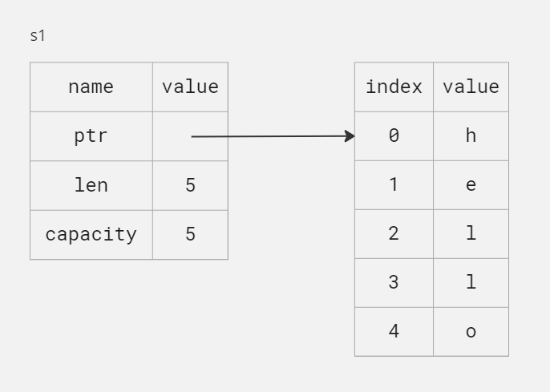
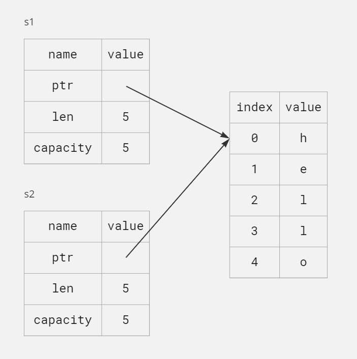
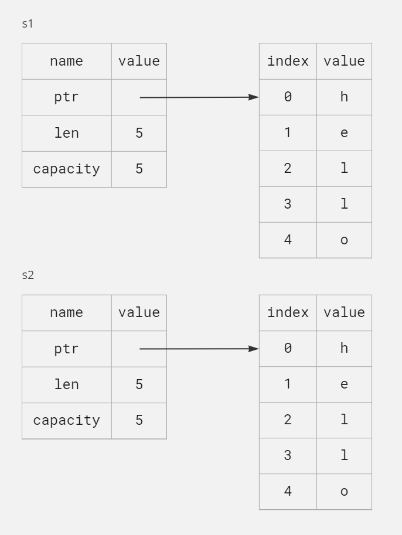
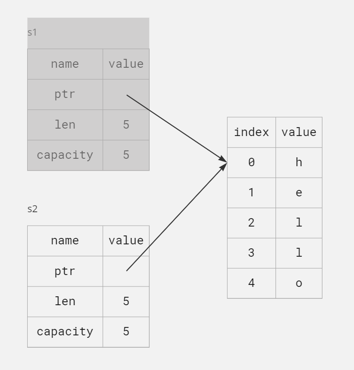
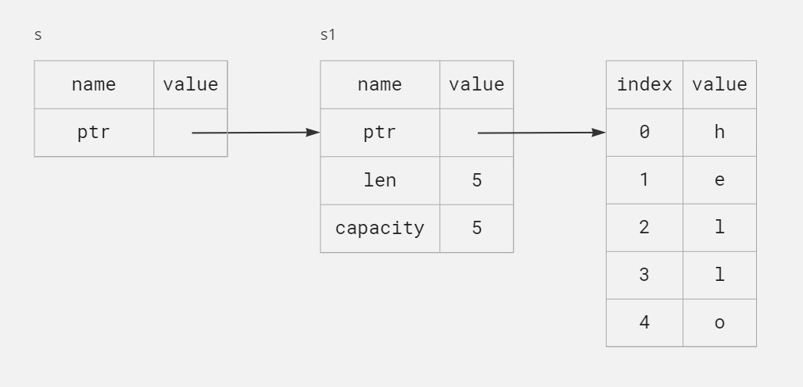
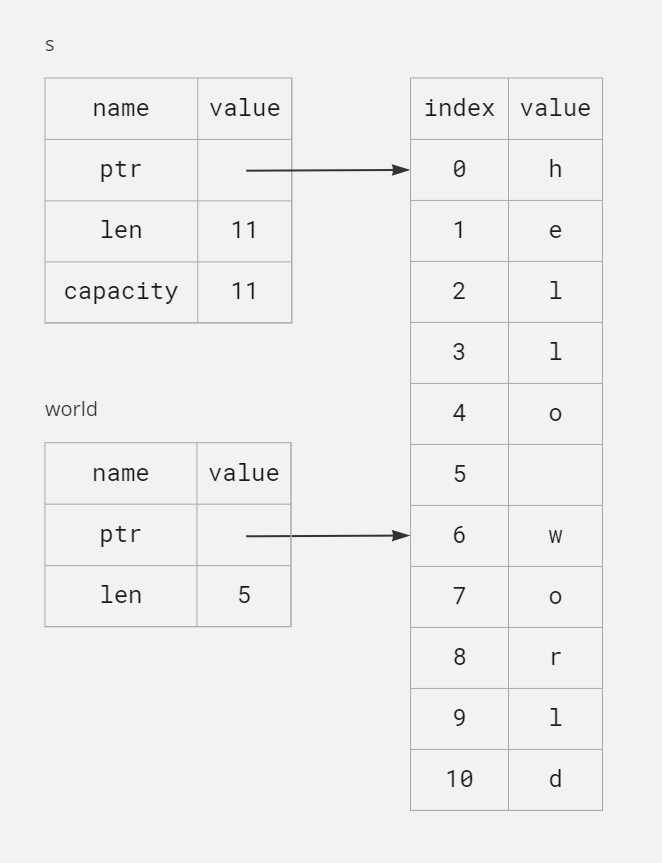

#패스트캠퍼스 #국비지원교육 #메가바이트스쿨 #MegabyteSchool #개발자취업부트캠프 #내일배움카드
Introduction
- 이 책은 러스트의 기본을 다루는, 러스트를 배우고자 하는 사람들이 가장 많이 보는 유명한 책입니다.
- 2판은 2021 에디션으로 예제와 설명이 되어있고, 곧 정식 출간될 early access 상태입니다.
- 난해한 주제들을 잘 이해하기 위해서는 기본이 튼튼해야 하기 때문에, 이 책은 여러번 읽어도 도움될 아주 좋은 책입니다.
저장소
- Github Repository에 모든 md파일, 작성해본 예제 파일, 빌드 파일들을 저장해 놓았습니다.
- https://github.com/jerok-kim/rust_lang_book
Getting Started
Let's start our Rust jorney! There's a lot to learn, but every journey starts somewhere. In this chapter, we'll discuss:
- Installing Rust on Linux, macOS, and Windows
- Writing a program that prints
Hello, world! - Using
cargo, Rust's package manager and build system
Installiation
The first step is to install Rust. We'll download Rust through rustup, command line tool for managing Rust versions
and associated tools.
The following steps install the latest stable version of the Rust compiler. Rust's stability guarantees ensure that all the examples in the book that compile will continue to compile with newer Rust versions.
Installing rustup on Linux or macOS
$ curl --proto '=https' --tlsv1.3 https://sh.rustup.rs -sSf | sh
Installing rustup on Windows
installing rustup
installing visualstudio
Troubleshooting
$ rustc --version
Updating and Uninstalling
$ rustup update
Local Documentation
The installation of Rust also includes a local copy of the documentation so that you can read it offline.
Run rustup doc to open the local documentation in your browser.
Any time a type or function is provided by the standard library and you're not sure what it does or how to use it, use the application programming interface (API) documentation to find out!
Hello, World!
Now that you’ve installed Rust, it’s time to write your first Rust program.
It’s traditional when learning a new language to write a little program that
prints the text Hello, world! to the screen, so we’ll do the same here!
Creating a Project Directory
You’ll start by making a directory to store your Rust code. It doesn’t matter to Rust where your code lives, but for the exercises and projects in this book, we suggest making a projects directory in your home directory and keeping all your projects there. Open a terminal and enter the following commands to make a projects directory and a directory for the “Hello, world!” project within the projects directory.
$ mkdir hello_world
$ cd hello_world
Writing and Running a Rust Program
Next, make a new source file and call it main.rs. Rust files always end with the .rs extension. If you're using more
than one word in your filename, the convention is to use an underscore to separate them. For example,
use hello_world.rs rather than helloworld.rs.
fn main() { println!("Hello, world!"); }
$ rustc main.rs
$ ./main
Hello, world!
If Hello, world! did print, congratulations! You've officially written a Rust program. That makes you a Rust
programmer - welcome!
Anatomy of a Rust Program
Let’s review this “Hello, world!” program in detail. Here’s the first piece of the puzzle:
fn main() {
println!("Hello, world!");
}These lines define a function named main. The main function is special: it is always the first code that runs in
every executable Rust program. Here the first line declares a function named main that has no parameters and returns
nothing. If there were parameters, they would go inside the parentheses ().
The function body is wrapped in {}. Rust requires curly brackets around all function bodies. It's good style to place
the opening curly bracket on the same line as the function declaration, adding one space in between.
If you want to stick to a standard style across Rust projects, you can use an automatic formatter tool called rustfmt to format your code in a particular style (more on rustfmt in Appendix D). The Rust team has included this tool with the standard Rust distribution, as rustc is, so it should already be installed on your computer!
The body of the main function hold the following code:
fn main() {
println!("Hello, world!");
}This line does all the work in this little program: it prints text to the screen. There are four important details to notice here.
First, Rust style is to indent with four spaces, not a tab.
Second, println! calls a Rust macro. If it had called a function instead, it would be entered as println(without
the !). We'll discuss Rust macros in more detail in Chapter 19. For now, you just need to know that using a ! means
that you're calling a macro instead of a normal function and that macros don't always follow the same rules as
functions.
Third, you see the "Hello, world!" string. We pass this string as an argument to println!, and the string is printed
to the screen.
Fourth, we end the line with a semicolon(;), which indicates that this expression is over and the next one is ready to
begin. Most lines of Rust code end with a semicolon.
Compiling and Running Are Separate Steps
You've just run a newly created program, so let's examine each step in the process.
Before running a Rust program, you must compile it using the Rust compiler by entering the rustc command and passing
it the name of your source file, like this:
$ rustc main.rs
If you have a C or C++ background, you’ll notice that this is similar to
gcc or clang. After compiling successfully, Rust outputs a binary executable.
You can see the executable by entering the ls command in your shell:
$ ls
main.exe main.pdb main.rs
This shows the source code file with the .rs extension, the executable file (main.exe on Windows, but main on all
other platforms), and, when using Windows, a file containing debugging information with the .pdb extension.
Rust is an ahead-of-time compiled language, meaning you can compile a program and give the executable to someone else, and they can run it even without having Rust installed.
Just compiling with rustc is fine for simple programs, but as your project grows, you'll want to manage all the
options and make it easy to share your code. Next, we'll introduce you to the Cargo tool, which will help you write
real-world Rust programs.
Hello, Cargo!
Cargo is Rust’s build system and package manager. Most Rustaceans use this tool to manage their Rust projects because Cargo handles a lot of tasks for you, such as building your code, downloading the libraries your code depends on, and building those libraries. (We call the libraries that your code needs dependencies.)
The simplest Rust programs, like the one we’ve written so far, don’t have any dependencies. If we had built the “Hello, world!” project with Cargo, it would only use the part of Cargo that handles building your code. As you write more complex Rust programs, you’ll add dependencies, and if you start a project using Cargo, adding dependencies will be much easier to do.
Because the vast majority of Rust projects use Cargo, the rest of this book assumes that you’re using Cargo too. Cargo comes installed with Rust if you used the official installers discussed in “Installation” on page 1. If you installed Rust through some other means, check whether Cargo is installed by entering the following in your terminal:
$ cargo --version
Creating a Project with Cargo
$ cargo init
You'll see that Cargo has generated Cargo.toml file.
It has also initialized a new Git repository along with a .gitignore file. Git files won't be generated if you
run cargo new within an existing Git repository; you can override this behavior by using cargo new --vcs=git.
[package]
name = "hello_world"
version = "0.1.0"
edition = "2021"
# See more keys and their definitions at https://doc.rust-lang.org/cargo/reference/manifest.html
[dependencies]
[[bin]]
name = "hello_world"
path = "main.rs"
This file is in the TOML(Tom's Obvious, Minimal Language) format, which is Cargo's configuration format.
The first line, [package], is a section heading that indicates that the following statements are configuring a
package. As we add more information to this file we'll add other sections.
The next three lines set the configuration information Cargo needs to compile your program: the name, the version, and the edition of Rust to use.
The last line, [dependencies], is the start of a section for you to list any of your project's dependencies. In Rust,
packages of code are referred to as crates. We won't need any other crates for this project, but we will in the first
project in Chapter 2, so we'll use this dependencies section then.
Cargo expects your source files to live inside the src directory. The top-level project directory is just for README
files, license information, configuration files, and anything else not related to your code. Using Cargo helps you
organize your projects. There's a place for everything, and everything is in its place.
Building and Running a Cargo Project
$ cargo build
This command creates an executable file in target\debug\hello_cargo.exe rather than in your current directory. Because
the default build is a debug build, Cargo puts the binary in a directory named debug. You can run the executable with
this command:
$ ./target/debug/hello_world
Hello, world!
Running cargo build for the first time also causes Cargo to create a new file at the top level: Cargo.lock. This
file keeps track of the exact versions of dependencies in your project. This project doesn't have dependencies, so the
file is a bit sparse. You won't ever need to change this file manually; Cargo manages its contents for you.
We just built a project with cargo build and ran it with ./target/debug/ hello_world, but we can also use cargo run to compile the code and then run
the resultant executable all in one command:
$ cargo run
Finished dev [unoptimized + debuginfo] target(s) in 0.00s
Running `target\debug\hello_world.exe`
Hello, world!
Using cargo run is more convenient that having to remember to run cargo build and then use the whole path to the
binary, so most developers use cargo run.
Notice that this time we didn't see output indicating that Cargo was compiling hello_world. Cargo figured out that the
files hadn't changed, so it didn't rebuild but just ran the binary. If you had modified your source code, Cargo would
have rebuilt the project before running it.
Cargo also provides a command called cargo check. This command quickly checks your code to make sure it compiles but
doesn't produce an executable:
$ cargo check
Checking hello_world v0.1.0 (C:\Users\jerok\projects\study_blog\rust_lang_book\code\ch01\hello_world)
Finished dev [unoptimized + debuginfo] target(s) in 0.07s
Why would you not want an executable? Often, cargo check is much faster then cargo build because it skips the step
of producing an executable. If you're continually checking your work while writing the code, using cargo check will
speed up the process of letting you know if your project is still compiling! As such, many Rustaceans run cargo check
periodically as they write their program to make sure it compiles. Then they run cargo build when they're ready to use
the executable.
Let's recap what we've learned so far about Cargo:
- We can create a project using
cargo new. - We can build a project using
cargo build. - We can build and run a project in one step using
cargo run. - We can build a project without producing a binary to check for errors using
cargo check. - Instead of saving the result of the build in the same directory as our code, Cargo stores it in the
target/debugdirectory.
An additional advantage of using Cargo is that the commands are the same no matter which operating system you're working on. So, at this point, we'll no longer provide specific instructions for Linux and macOS versus Windows.
Building for Release
When your project is finally ready for release, you can use cargo build --release to compile it with optimizations.
This command will create an executable in target/release instead of target/debug. The optimizations make your Rust
code run faster, but turning them on lengthens the time it takes for your program to compile. This is why there are two
different profiles: one for development, when you want to rebuild quickly and often, and another for building the final
program you'll give to a user that won't be rebuilt repeatedly and that will run as fast as possible. If you're
benchmarking your code's running time, be sure to run cargo build --release and benchmark with the executable
in target/release.
Cargo as Convention
With simple projects, Cargo doesn't provide a lot of value over just using rustc, but it will prove its worth as your
programs become more intricate.
Once programs grow to multiple files or need a dependency, it's much easier to let Cargo coordinate the build.
Even though the hello_cargo project is simple, it now uses much of the real tooling you'll use in the rest of your
Rust career. In fact, to work on any existing projects, you can use the following commands to check out the code using
Git, change to that project's directory, and build:
git clone example.org/someproject
cd someproject
cargo build
Summary
You're already off to a great start on your Rust journey! In this chapter, you've learned how to:
- Install the latest stable version of Rust using
rustup - Update to a newer Rust version
- Open locally installed documentation
- Write and run a "Hello, world!" program using
rustcdirectly - Create and run a new project using the conventions of Cargo
This is a great time to build a more substantial program to get used to reading and writing RUst code. So, in Chapter 2, we'll build a guessing game program. If you would rather start by learning how common programming concepts work in Rust, see Chapter 3 and then return to Chapter 2.
Programming a Guessing Game
Let's jump into Rust by working through a hands-on project together! This chapter introduces you to a few common Rust
concepts by showing you how to use them in a real program. You'll learn about let, match, methods, associated
functions, external crates, and more.
Setting Up a New Project
$ cargo new guessing_game
Created binary (application) `guessing_game` package
The run command comes in handy when you need to rapidly iterate on a project, as we'll do in this game, quickly
testing each iteration before moving on to the next one.
Processing a Guess
ex 2.1 Code that gets a guess from the user and prints it
use std::io; fn main() { println!("Guess the number!"); println!("Please input your guess."); let mut guess = String::new(); io::stdin() .read_line(&mut guess) .expect("Failed to read line"); println!("You guessed: {guess}"); }
To obtain user input and then print the result as output, we need to bring the io input/output library into scope.
The io library comes from the standard library, known as std:
use std::io;
fn main() {
println!("Guess the number!");
println!("Please input your guess.");
let mut guess = String::new();
io::stdin()
.read_line(&mut guess)
.expect("Failed to read line");
println!("You guessed: {guess}");
}By default, Rust has a set of items defined in the standard library that it brings into the scope of every program. This set is called the prelude, and you can see everything in it at https://doc.rust-lang-org/std/prelude/index.html.
If a type you want to use isn't in the prelude, you have to bring that type into scope explicitly with a use
statement. Using the std::io library provides you with a number of useful features, including the ability to accept
user input.
the main function is the entry point into the program:
use std::io;
fn main() {
println!("Guess the number!");
println!("Please input your guess.");
let mut guess = String::new();
io::stdin()
.read_line(&mut guess)
.expect("Failed to read line");
println!("You guessed: {guess}");
}The fn syntax declares a new function; the parentheses, (), indicate there are no parameters; and the curly
bracket, {, starts the body of the function. println! is a macro that prints a string to the screen:
use std::io;
fn main() {
println!("Guess the number!");
println!("Please input your guess.");
let mut guess = String::new();
io::stdin()
.read_line(&mut guess)
.expect("Failed to read line");
println!("You guessed: {guess}");
}This code is printing a prompt stating what the game is and requesting input from the user.
Storing Values with Variables
We'll create a variable to store the user input, like this:
use std::io;
fn main() {
println!("Guess the number!");
println!("Please input your guess.");
let mut guess = String::new();
io::stdin()
.read_line(&mut guess)
.expect("Failed to read line");
println!("You guessed: {guess}");
}We use the let statement to create the variable. Here's another example:
let apples = 5;This line creates a new variable named apples and binds it to the value 5. In Rust, variables are immutable by
default, meaning once we give the variable a value, the value won't change. We'll be discussing this concept in detail
in "Variables and Mutability". To make a variable mutable, we add mut before the variable name:
let apples = 5; // immutable
let mut bananas = 5; // mutablelet mut guess will introduce a mutable variable named guess. The equal sign (=) tells Rust we want to bind
something to the variable now. On the right of the equal sign is the value that guess is bound to, which is the result
of calling String::new, a function that returns a new instance of a String. String is a string type provided by
the standard library that is a growable, UTF-8 encoded bit of text.
The :: syntax in the ::new line indicates that new is an associated function of the String type. An associated
function is a function that's implemented on a type, in this case String. This new function creates a new, empty
string. You'll find a new function on many types because it's a common name for a function that makes a new value of
some kind.
In full, the let mut guess = String::new(); line has created a mutable variable that is currently bound to a new,
empty instance of a String.
Receiving User Input
Recall that we included the input/output functionality from the standard library with use std::io; on the first line
of the program. Now we'll call the stdin function from the io module, which will allow us to handle user input:
use std::io;
fn main() {
println!("Guess the number!");
println!("Please input your guess.");
let mut guess = String::new();
io::stdin()
.read_line(&mut guess)
.expect("Failed to read line");
println!("You guessed: {guess}");
}If we hadn't imported the io library with use std::io; at the beginning of the program, we could still use the
function by writing this function call as std::io::stdin. The stdin function returns an instance
of std::io::Stdin, which is a type that represents a handle to the standard input for your terminal.
Next, the line .read_line(&mut guess) calls the read_line method on the standard input handle to get input from the user. We're also passing &mut guess as the argument to read_line to tell it what string to store the user input in. The full job of read_line is to take whatever the user types into standard input and append that into a string (without overwriting its contents), so we therefore pass that string as an argument. The string argument needs to be mutable so the method can change the string's content.
The & indicates that this argument is a reference, which gives you a way to let multiple parts of your code access one piece of data without needing to copy that data into memory multiple times. References are a complex feature, and one of Rust's major advantages is how safe and easy it is to use references. You don't need to know a lot of those details to finish this program. For now, all we need to know is that, like variables, references are immutable by default. Hence, we need to write &mut guess rather than &guess to make it mutable.
Handling Potential Failure with Result
use std::io;
fn main() {
println!("Guess the number!");
println!("Please input your guess.");
let mut guess = String::new();
io::stdin()
.read_line(&mut guess)
.expect("Failed to read line");
println!("You guessed: {guess}");
}read_line puts whatever the user enters into the string we pass to it, but it also returns a Result value. Result is an enumeration, often called an enum, which is a type that can be in one of multiple possible states. We call each possible state a variant.
The purpose of these Result type is to encode error-handling information.
Result's variants are Ok and Err. The Ok variant indicates the operation was successful, and inside Ok is the successfully generated value. The Err variant means the operation failed, and Err contains information about how or why the operation failed.
Values of the Result type, like values of any type, have methods defined on them. An instance of Result has an expect method that you can call. If this instance of Result is an Err value, expect will cause the program to crash and display the message that you passed as an argument to expect. If the read_line method returns an Err, it would likely be the result of an error coming from the underlying operating system. If this instance of Result is an Ok value, expect will take the return value that Ok is holding and return just that value to you so you can use it. In this case, that value is the number of bytes in the user's input.
If you don't call expect, the program will compile, but you'll get a warning:
$ cargo build
warning: unused `Result` that must be used
--> src\main.rs:9:5
|
9 | / io::stdin()
10 | | .read_line(&mut guess);
| |_______________________________^
|
= note: `#[warn(unused_must_use)]` on by default
= note: this `Result` may be an `Err` variant, which should be handled
warning: `guessing_game` (bin "guessing_game") generated 1 warning
Finished dev [unoptimized + debuginfo] target(s) in 0.02s
Rust warns that you haven't used the Result value returned from read_line, indicating that the program hasn't handled a possible error.
The right way to suppress the warning is to actually write error-handling code, but in our case we just want to crash this program when a problem occurs, so we can use expect.
Printing Values with println! Placeholders
use std::io;
fn main() {
println!("Guess the number!");
println!("Please input your guess.");
let mut guess = String::new();
io::stdin()
.read_line(&mut guess)
.expect("Failed to read line");
println!("You guessed: {guess}");
}This line prints the string that now contains the user's input. The {} set of curly brackets is a placeholder: think of {} as little crab pincers that hold a value in place. When printing the value of a variable, the variable name can go inside the curly brackets. When printing the result of evaluating an expression, place empty curly brackets in the format string, then follow the format string with a comma-separated list of expressions to print in each empty curly bracket placeholder in the same order. Printing a variable and the result of an expression in one call to println! would look like this:
let x = 5;
let y = 10;
println!("x = {x} and y + 2 = {}", y + 2);This code would print x = 5 and y + 2 = 12.
Testing the First Part
Let's test the first part of the guessing game. Run it using cargo run:
$ cargo run
Compiling guessing_game v0.1.0 (C:\Users\jerok\projects\study_blog\rust_lang_book\code\ch02\guessing_game)
Finished dev [unoptimized + debuginfo] target(s) in 0.46s
Running `target\debug\guessing_game.exe`
Guess the number!
Please input your guess.
3
You guessed: 3
Generating a Secret Number
Next, we need to generate a secret number that the user will try to guess. We'll use a random number between 1 and 100. Rust doesn't yet include random number functionality in its standard library. However, the Rust team does provide a rand crate at https://crates.io/crates/rand with said functionality.
Using a Crate to Get More Functionality
Remember that a crate is a collection of Rust source code files. The project we've been building is a binary crate, which is an executable. The rand crate is a library crate, which contains code that is intended to be used in other programs and can't be executed on its own.
Cargo's coordination of external crates is where Cargo really shines. Before we can write code that uses rand, we need to modify the Cargo.toml file to include the rand crate as a dependency. Open that file now and add the following line to the bottom, beneath the [dependencies] section header that Cargo created for you. Be sure to specify rand exactly as we have here, with this version number, or the code examples in this tutorial may not work.
[dependencies]
rand = "0.8.5"
In the Cargo.toml file, everything that follows a header is part of that section that continues until another section starts. In [dependencies] you tell Cargo which external crates your project depends on and which versions of those crates you require. In this case, we specify the rand crate with the semantic version specifier 0.8.5. Cargo understands Semantic Versioning(sometimes called SemVer), which is a standard for writing version numbers. The specifier 0.8.5 is actually shorthand for ^0.8.5, which means any version that is at least 0.8.5 but below 0.9.0.
Cargo considers these versions to have public APIs compatible with version 0.8.5, and this specification ensures you'll get the latest patch release that will still compile with the code in this chapter.
$ cargo build
Compiling cfg-if v1.0.0
Compiling ppv-lite86 v0.2.17
Compiling getrandom v0.2.8
Compiling rand_core v0.6.4
Compiling rand_chacha v0.3.1
Compiling rand v0.8.5
Compiling guessing_game v0.1.0 (C:\Users\jerok\projects\study_blog\rust_lang_book\code\ch02\guessing_game)
Finished dev [unoptimized + debuginfo] target(s) in 2.00s
When we include an external dependency, Cargo fetches the latest versions of everything that dependency needs from the registry, which is a copy of data from Crates.io at https://crates.io. Crates.io is where people in the Rust ecosystem post their open source Rust projects for others to use.
After updating the registry, Cargo checks the [dependencies] section and downloads any crates listed that aren't already downloaded. In this case, although we only listed rand as a dependency, Cargo also grabbed other crates that rand depends on to work. After downloading the crates, Rust compiles them and then compiles the project with the dependencies available.
If you immediately run cargo build again without making any changes, you won't get any output aside from the Finished line. Cargo knows it has already downloaded and compiled the dependencies, and you haven't changed anything about them in your Cargo.toml file. Cargo also knows that you haven't changed anything about your code, so it doesn't recompile that either. With nothing to do, it simply exits.
Ensuring Reproducible Builds with the Cargo.lock File
Cargo has a mechanism that ensures you can rebuild the same artifact every time you or anyone else builds your code: Cargo will use only the versions of the dependencies you specified until you indicate otherwise. For example, say that next week version 0.8.6 of the rand crate comes out, and that version contains an important bug fix, but it also contains a regression that will break your code. To handle this, Rust creates the Cargo.lock file the first time you run cargo build, so we now have this in the guessing_game directory.
When you build a project for the first time, Cargo figures out all the versions of the dependencies that fit the criteria and then writes them to the Cargo.lock file. When you build your project in the future, Cargo will see that the Cargo.lock file exists and will use the versions specified there rather than doing all the work of figuring out versions again. This lets you have a reproducible build automatically. In other words, your project will remain at 0.8.5 until you explicitly upgrade, thanks to the Cargo.lock file. Because the Cargo.lock file is important for reproducible builds, it's often checked into source control with the rest of the code in your project.
Updating a Crate to Get a New Version
When you do want to update a crate, Cargo provides the command update, which will ignore the Cargo.lock file and figure out all the latest versions that fit your specifications in Cargo.toml. Cargo will then write those versions to the Cargo.lock file. Otherwise, by default, Cargo will only look for versions greater than 0.8.5 and less than 0.9.0.
There's a lot more to say about Cargo and its ecosystem, which we'll discuss in Chapter 14, but for now, that's all we need to know. Cargo makes it very easy to reuse libraries, so Rustaceans are able to write smaller projects that are assembled from a number of packages.
Generating a Random Number
Let's start using rand to generate a number to guess. The next step is to update src/main.rs
use std::io;
use rand::Rng; // 1
fn main() {
println!("Guess the number!");
let secret_number = rand::thread_rng().gen_range(1..=100); // 2
println!("The secret number is: {secret_number}"); // 3
println!("Please input your guess.");
let mut guess = String::new();
io::stdin()
.read_line(&mut guess)
.expect("Failed to read line");
println!("You guessed: {guess}");
}First we add the line use rand::Rng;(1).
The Rng trait defines methods that random number generators implement,
and this trait must be in scope for ust to use those methods.
Chapter 10 will cover traits in detail.
Next, we're adding two lines in the middle.
In the first line (2),
we call the rand::thread_rng function that gives us the particular random number generator we're going to use:
one that is local to the current thread of execution and is seeded by the operating system.
Then we call the gen_range method on the random number generator.
This method is defined by the Rng trait that we brought into scope with the use rand::Rng; statement.
The gen_range method takes a range expression as an argument and generates a random number in the rage.
The kind of range expression we're using here takes the from
start..=end and is inclusive on the lower and upper bounds,
so we need to specify 1..=100 to request a number between 1 and 100.
You won't just know which traits to use and which methods and functions to call from a crate, so each crate has documentation with instructions for using it. Another neat feature of Cargo is that running the
cargo doc --opencommand will build documentation provided by all your dependencies locally and open it in your browser. If you're interested in other functionality in therandcrate, for example, runcargo doc --openand clickrandin the sidebar on the left.
The second new line (3) prints the secret number. This is useful while we're developing the program to be able to test it, but we'll delete it from the final version. It's not much of a game if the program prints the answer as soon as it starts!
Comparing the Guess to the Secret Number
Now that we have user input and a random number, we can compare them.
use std::io;
use std::cmp::Ordering; // 1
use rand::Rng;
fn main() {
println!("Guess the number!");
let secret_number = rand::thread_rng().gen_range(1..=100);
println!("The secret number is: {secret_number}");
println!("Please input your guess.");
let mut guess = String::new();
io::stdin()
.read_line(&mut guess)
.expect("Failed to read line");
println!("You guessed: {guess}");
match guess.cmp(&secret_number) { // 2, 3
Ordering::Less => println!("Too small!"),
Ordering::Greater => println!("Too big!"),
Ordering::Equal => println!("You win!"),
}
}First we add another use statement (1),
bringing a type called std::cmp::Ordering into scope from the standard library.
The Ordering type is another enum and has the variants Less, Greater, and Equal.
These are the three outcomes that are possible when you compare two values.
Then we add five new lines at the bottom that use the Ordering type.
The cmp method (3) compares two values and can be called on anything that can be compared.
It takes a reference to whatever you want to compare with: here it's comparing guess to secret_number.
Then it returns a variant of the Ordering enum we brought into scope with the use statement.
We use a match expression (2)
to decide what to do next based on which variant of Ordering was returned from the call to cmp with the values in guess and secret_number.
A match expression is made up of arms.
An arm consists of a pattern to match against,
and the code that should be run if the value given to match fits that arm's pattern.
Rust takes the value given to match and looks through each arm's pattern in turn.
Patterns and the match construct are powerful Rust features:
they let you express a variety of situations your code might encounter and they make sure you handle them all.
These features will be covered in detail in Chapter 6 and Chapter 18, respectively.
Let's walk through an example with the match expression we use here. Say that the user has guessed 50 and the randomly generated secret number this time is 38.
When the code compares 50 to 38, the cmp method will return Ordering::Greater because 50 is greater than 38. The match expression gets the Ordering::Greater value and starts checking each arm's pattern. It looks at the first arm's pattern, Ordering::Less, and sees that the value Ordering::Greater does not match Ordering::Less, so it ignores the code in that arm and moves to the next arm. The next arm's pattern is Ordering::Greater, which does match Ordering::Greater! The associated code in that arm will execute and print Too big! to the screen. The match expression ends after the first successful match, so it won't look at the last arm in this scenario. However, the code won't compile yet.
error[E0308]: mismatched types
--> src\main.rs:22:21
|
22 | match guess.cmp(&secret_number) {
| --- ^^^^^^^^^^^^^^ expected struct `String`, found integer
| |
| arguments to this function are incorrect
|
= note: expected reference `&String`
found reference `&{integer}`
note: associated function defined here
--> C:\Users\jerok\.rustup\toolchains\stable-x86_64-pc-windows-msvc\lib/rustlib/src/rust\library\core\src\cmp.rs:789:8
|
789 | fn cmp(&self, other: &Self) -> Ordering;
| ^^^
For more information about this error, try `rustc --explain E0308`.
error: could not compile `guessing_game` due to previous error
The core of the error states that there are mismatched types. Rust has a strong, static type system. However, it also has type inference. When we wrote let mut guess = String::new(), Rust was able to infer that guess should be a String and didn't make us write the type. The secret_number, on the other hand, is a number type. A few of Rust's number types can have a value between 1 and 100: i32, a 32-bit number; u32, an unsigned 32-bit number; i64, a 64-bit number; as well as others. Unless otherwise specified, Rust defaults to an i32, which is the type of secret_number unless you add type information elsewhere that would cause Rust to infer a different numerical type. The reason for the error is that Rust cannot compare a string and a number type.
Ultimately, we want to convert the String the program reads as input into a real number type so we can compare it numerically to the secret number. We do so by adding this line to the main function body:
use std::io;
use std::cmp::Ordering;
use rand::Rng;
fn main() {
println!("Guess the number!");
let secret_number = rand::thread_rng().gen_range(1..=100);
println!("The secret number is: {secret_number}");
println!("Please input your guess.");
let mut guess = String::new();
io::stdin()
.read_line(&mut guess)
.expect("Failed to read line");
let guess: u32 = guess
.trim()
.parse()
.expect("Please type a number!");
println!("You guessed: {guess}");
match guess.cmp(&secret_number) {
Ordering::Less => println!("Too small!"),
Ordering::Greater => println!("Too big!"),
Ordering::Equal => println!("You win!"),
}
}We create a variable named guess. But wait, doesn't the program already have a variable named guess? It does but helpfully Rust allows us to shadow the previous value of guess with a new one. Shadowing lets us reuse the guess variable name rather than forcing us to create two unique variables, such as guess_str and guess, for example. We'll cover this in more detail in Chapter 3, but for now, know that this feature is often used when you want to conver a value from one type to another type.
We bind this new variable to the expression guess.trim().parse(). The guess in the expression refers to the original guess variable that contained the input as a string. The trim method on a String instance will eliminate any whitespace at the beginning and end, which we must do to be able to compare the string to the u32, which can only contain numerical data. The user must press ENTER to satisfy read_line and input their guess, which adds a newline character to the string. For example, if the user types 5 and presses ENTER, guess looks like this: 5\n. The \n represents "newline." (On Windows, pressing ENTER results in a carriage return and a newline, \r\n.) The trim method eliminates \n or \r\n, resulting in just 5.
The parse method on strings converts a string to another type. Here, we use it to convert from a string to a number. We need to tell Rust the exact number type we want by using let guess: u32. The colon (:) after guess tells Rust we'll annotate the variable's type. Rust has a few built-in number types; the u32 seen here is an unsigned, 32-bit integer. It's a good default choice for a small positive number. You'll learn about other number types in Chapter 3.
Additionally, the u32 annotation in this example program and the comparison with secret_number means Rust will infer that secret_number should be a u32 as well. So now the comparison will be between two values of the same type!
The parse method will only work on characters that can logically be converted into numbers and so can easily cause errors. If, for example, the string contained A👍%, there would be no way to convert that to a number. Because it might fail, the parse method returns a Result type, much as the read_line method does (discussed earlier in "Handling Potential Failure with Result"). We'll treat this Result the same way by using the expect method again. If parse returns an Err Result variant because it couldn't create a number from the string, the expect call will crash the game and print the message we give it. If parse can successfully convert the string to a number, it will return the Ok variant of Result, and expect will return the number that we want from the Ok value.
$ cargo run
Finished dev [unoptimized + debuginfo] target(s) in 0.02s
Running `target\debug\guessing_game.exe`
Guess the number!
The secret number is: 46
Please input your guess.
77
You guessed: 77
Too big!
Nice! Even though spaces were added before the guess, the program still figured out that the user guessed 77. Run the program a few times to verify the different behavior with different kinds of input: guess the number correctly, guess a number that is too high, and guess a number that is too low.
Let's change that by adding a loop!
Allowing Multiple Guesses with Looping
The loop keyword creates an infinite loop. We'll add a loop to give users more chances at guessing the number.
use std::io;
use std::cmp::Ordering;
use rand::Rng;
fn main() {
println!("Guess the number!");
let secret_number = rand::thread_rng().gen_range(1..=100);
println!("The secret number is: {secret_number}");
loop {
println!("Please input your guess.");
let mut guess = String::new();
io::stdin()
.read_line(&mut guess)
.expect("Failed to read line");
let guess: u32 = guess
.trim()
.parse()
.expect("Please type a number!");
println!("You guessed: {guess}");
match guess.cmp(&secret_number) {
Ordering::Less => println!("Too small!"),
Ordering::Greater => println!("Too big!"),
Ordering::Equal => println!("You win!"),
}
}
}As you can see, we've moved everything from the guess input prompt onward into a loop. Be sure to indent the lines inside the loop another four spaces each and run the program again. The program will now ask for another guess forever, which actually introduces a new problem. It doesn't seem like the user can quit!
The user could always interrupt the program by using the keyboard shortcut CTRL-C. But there's another way to escape this insatiable monster as mentioned in the parse discussion in "Comparing the Guess to the Secret Number": if the user enters a non-number answer, the program will crash. We can take advantage of that to allow the user to quit, as shown here:
$ cargo run
Finished dev [unoptimized + debuginfo] target(s) in 0.10s
Running `target\debug\guessing_game.exe`
Guess the number!
The secret number is: 65
Please input your guess.
45
You guessed: 45
Too small!
Please input your guess.
70
You guessed: 70
Too big!
Please input your guess.
65
You guessed: 65
You win!
Please input your guess.
quit
thread 'main' panicked at 'Please type a number!: ParseIntError { kind: InvalidDigit }', src\main.rs:24:14
note: run with `RUST_BACKTRACE=1` environment variable to display a backtrace
error: process didn't exit successfully: `target\debug\guessing_game.exe` (exit code: 101)
Typing quit will quit the game, but as you'll notice, so will entering any other non-number input. This is suboptimal, to say the least; we want the game to also stop when the correct number is guessed.
Quitting After a Correct Guess
Let's program the game to quit when the user wins by addig a break statement:
use std::io;
use std::cmp::Ordering;
use rand::Rng;
fn main() {
println!("Guess the number!");
let secret_number = rand::thread_rng().gen_range(1..=100);
println!("The secret number is: {secret_number}");
loop {
println!("Please input your guess.");
let mut guess = String::new();
io::stdin()
.read_line(&mut guess)
.expect("Failed to read line");
let guess: u32 = guess
.trim()
.parse()
.expect("Please type a number!");
println!("You guessed: {guess}");
match guess.cmp(&secret_number) {
Ordering::Less => println!("Too small!"),
Ordering::Greater => println!("Too big!"),
Ordering::Equal => {
println!("You win!");
break;
}
}
}
}Adding the break line after You win! makes the program exit the loop when the user guesses the secret number correctly. Exiting the loop also means exiting the program, because the loop is the last part of main.
Handling Invalid Input
To further refine the game's behavior, rather than crashing the program when the user inputs a non-number, let's make the game ignore a non-number so the user can continue guessing. We can do that by altering the line where guess is converted from a String to a u32.
use std::io;
use std::cmp::Ordering;
use rand::Rng;
fn main() {
println!("Guess the number!");
let secret_number = rand::thread_rng().gen_range(1..=100);
println!("The secret number is: {secret_number}");
loop {
println!("Please input your guess.");
let mut guess = String::new();
io::stdin()
.read_line(&mut guess)
.expect("Failed to read line");
let guess: u32 = match guess.trim().parse() {
Ok(num) => num,
Err(_) => continue,
};
println!("You guessed: {guess}");
match guess.cmp(&secret_number) {
Ordering::Less => println!("Too small!"),
Ordering::Greater => println!("Too big!"),
Ordering::Equal => {
println!("You win!");
break;
}
}
}
}We switch from an expect call to a match expression to move from crashing on an error to handling the error. Remember that parse returns a Result type and Result is an enum that has the variants Ok and Err. We're using a match expression here, as we did with the Ordering result of the cmp method.
If parse is able to successfully turn the string into a number, it will return an Ok value that contains the resultant number. That Ok value will match the first arm's pattern, and the match expression will just return the num value that parse produced and put inside the Ok value. That number will end up right where we want it in the new guess variable we're creating.
If parse is not able to turn the string into a number, it will return an Err value that contains more information about the error. The Err value does not match the Ok(num) pattern in the first match arm, but it does match the Err(_) pattern in the second arm. The underscore, _, is a catch-all value; in this example, we're saying we want to match all Err values, no matter what information they have inside them. So the program will execute the second arm's code, continue, which tells the program to go to the next iteration of the loop and ask for another guess. So, effectively, the program ignores all errors that parse might encounter!
$ cargo run
Compiling guessing_game v0.1.0 (C:\Users\jerok\projects\study_blog\rust_lang_book\code\ch02\guessing_game)
Finished dev [unoptimized + debuginfo] target(s) in 0.55s
Running `target\debug\guessing_game.exe`
Guess the number!
The secret number is: 31
Please input your guess.
10
You guessed: 10
Too small!
Please input your guess.
99
You guessed: 99
Too big!
Please input your guess.
foo
Please input your guess.
31
You guessed: 31
You win!
Awesome! With one tiny final tweak, we will finight the guessing game.
Recall that the program is still printing the secret number. That worked well for testing, but it ruins the game. Let's delete the println! that outputs the secret number.
final code:
use rand::Rng;
use std::cmp::Ordering;
use std::io;
fn main() {
println!("Guess the number!");
let secret_number = rand::thread_rng().gen_range(1..=100);
loop {
println!("Please input your guess.");
let mut guess = String::new();
io::stdin()
.read_line(&mut guess)
.expect("Failed to read line");
let guess: u32 = match guess.trim().parse() {
Ok(num) => num,
Err(_) => continue,
};
println!("You guessed: {guess}");
match guess.cmp(&secret_number) {
Ordering::Less => println!("Too small!"),
Ordering::Greater => println!("Too big!"),
Ordering::Equal => {
println!("You win!");
break;
}
}
}
}Summary
This project was a hands-on way to introduce you to many new Rust concepts: let, match, functions, the use of external crates, and more. In the next few chapters, you'll learn about these concepts in more detail. Chapter 3 covers concepts that most programming languages have, such as variables, data types, and functions, and shows how to use them in Rust. Chapter 4 explores ownership, a feature that makes Rust different from other languages. Chapter 5 discusses structs and method syntax, and Chapter 6 explains how enums work.
Common Programming Concepts
This chapter covers concepts that appear in almost every programming language and how they work in Rust. Many programming languages have much in common at their core. None of the concepts presented in this chapter are unique to Rust, but we'll discuss them in the context of Rust and explain the conventions around using these concepts.
Specifically, you'll learn about variables, basic types, functions, comments, and control flow. These foundations will be in every Rust program, and learning them early will give you a strong core to start from.
Keywords
The Rust language has a set of keywords that are reserved for use by the language only, much as in other languages. Keep in mind that you cannot use these words as names of variables or functions. Most of the keywords have special meanings, and you'll be using them to do various tasks in your Rst programs; a few have no current functionality associated with them but have been reserved for functionality that might be added to Rust in the future.
Variables and Mutability
As mentioned in "Storing Values with Variables", by default, variables are immutable. This is one of many nudges Rust gives you to write your code in a way that takes advantage of the safety and easy concurrency that Rust offers. However, you still have the option to make your variables mutable. Let's explore how and why Rust encourages you to favor immutability and why sometimes you might want to opt out.
When a variable is immutable, once a value is bound to a name, you can't change that value. To illustrate this, generate
a new project called variables in your projects directory by using cargo new variables.
fn main() { let x = 5; println!("The value of x is: {x}"); x = 6; println!("The value of x is: {x}"); }
Save and run the program using cargo run. You should receive an error message regarding an immutability error, as
shown in this output:
error[E0384]: cannot assign twice to immutable variable `x`
--> src\main.rs:4:5
|
2 | let x = 5;
| -
| |
| first assignment to `x`
| help: consider making this binding mutable: `mut x`
3 | println!("The value of x is: {x}");
4 | x = 6;
| ^^^^^ cannot assign twice to immutable variable
This example shows how the compiler helps you find errors in your programs. Compiler errors can be frustrating, but really they only mean your program isn't safely doing what you want it to do yet; they do not mean that you're not a good programmer! Experienced Rustaceans still get compiler errors.
You received the error message cannot assign twice to immutable variable 'x' because you tried to assign a second
value to the immutable x variable. It's important that we get compile-time errors when we attempt to change a value
that's designated as immutable because this very situation can lead to bugs. If one part of our code operates on the
assumption that a value will never change and another part of our code changes that value, it's possible that the first
part of the code won't do what it was designed to do. The cause of this kind of bug can be difficult to track down after
the fact, especially when the second piece of code changes the value only sometimes. The Rust compiler guarantees that
when you state that a value won't change, it really won't change, so you don't have to keep track of it yourself. Your
code is thus easier to reason through.
But mutability can be very useful, and can make code more convenient to write. Although variables are immutable by
default, you can make them mutable by adding mut in front of the variable name as you did in Chapter 2.
Adding mut also conveys intent to future readers of the code by indicating that other parts of the code will be
changing this variable's value.
fn main() { let mut x = 5; println!("The value of x is: {x}"); x = 6; println!("The value of x is: {x}"); }
We're allowed to change the value bound to x from 5 to 6 when mut is used. Ultimately, deciding whether to use
mutability or ot is up to you and depends on what you think is clearest in that particular situation.
Constants
Like immutable variables, constants are values that are bound to a name and are not allowed to change, but there are a few differences between constants and variables.
First, you aren't allowed to use mut with constants. Constants aren't just immutable by default — they're always
immutable. You declare constants using the const keyword instead of the let keyword, and the type of the value must
be annotated. We'll cover types and type annotations in "Data Types" soon. Just know that you must always annotate the
type.
Constants can be declared in any scope, including the global scope, which makes them useful for values that many parts of code need to know about.
The last difference is that constants may be set only to a constant expression, not the result of a value that could only be computed at runtime.
Here's an example of a constant declaration:
#![allow(unused)] fn main() { const THREE_HOURS_IN_SECONDS: u32 = 60 * 60 * 3; }
The constant's name is THREE_HOURS_IN_SECONDS and its value is set to the result of multiplying 60 (the number of
seconds in a minute) by 60 (the number of minutes in an hour) by 3 (the number of hours we want to count in this
program). Rust's naming convention for constants is to use all uppercase with underscores between words. The compiler is
able to evaluate a limited set of operations at compile time, which lets us choose to write out this value in a way
that's easier to understand and verify, rather than setting this constant to the value 10,800.
See the Rust Reference's section on constant evaluation at (https://doc.rust-lang.org/reference/const_eval.html) for
more information on what operations can be used when declaring constants.
Constants are valid for the entire time a program runs, within the scope in which they were declared. This property makes constants useful for values in your application domain that multiple parts of the program might need to know about, such as the maximum number of points any player of a game is allowed to earn, or the speed of light.
Naming hardcoded values used throughout your program as constants is useful in conveying the meaning of that value to future maintainers of the code. It also helps to have only one place in your code you would need to change if the hardcoded value needed to be updated in the future.
Shadowing
As you saw in the guessing game tutorial in Chapter 2, you can declare a new variable with the same name as a previous
variable. Rustaceans say that the first variable is shadowed by the second, which means that the second variable is what
the compiler will see when you use the name of the variable. In effect, the second variable overshadows the first,
taking any uses of the variable name to itself until either it itself is shadowed or the scope ends. We can shadow a
variable by using the same variable's name and repeating the use of the let keyword as follows:
fn main() { let x = 5; let x = x + 1; { let x = x * 2; println!("The value of x in the inner scope is: {x}"); } println!("The value of x is: {x}"); }
This program first binds x to a value of 5. Then it creates a new variable x by repeating let x =, taking the
original value and adding 1 so the value of x is then 6. Then within an inner scope created with the curly brackets,
the third let statement also shadows xand creates a new variable, multiplying the previous value by 2 to give
xa value of 12. When that scope is over, the inner shadowing ends andx` returns to being 6. When we run this
program, it will output the following:
$ cargo run
Compiling shadowing v0.1.0 (C:\Users\jerok\projects\study_blog\rust_lang_book\code\ch03\shadowing)
Finished dev [unoptimized + debuginfo] target(s) in 0.38s
Running `target\debug\shadowing.exe`
The value of x in the inner scope is: 12
The value of x is: 6
Shadowing is different from marking a variable as mut because we'll get a compile-time error if we accidentally try to
reassign to this variable without using the let keyword. By using let, we can perform a few transformations on a
value but have the variable be immutable after those transformations have been completed.
The other difference between mut and shadowing is that because we're effectively creating a new variable when we use
the let keyword again, we can change the type of the value but reuse the same name. For example, say our program asks
a user to show how many spaces they want between some text by inputting space characters, and then we want to store that
input as a number:
fn main() {
let spaces = " ";
let spaces = spaces.len();
}The first spaces variable is a string type and the second spaces variable is a number type. Shadowing thus spares us
from having to come up with different names, such as spaces_str and spaces_num; instead, we can reuse the
simpler spaces name. However, if we try to use mut for this, as shown here, we'll get a compile-time error:
fn main() {
let mut spaces = " ";
spaces = spaces.len();
}The error says we're not allowed to mutate a variable's type:
error[E0308]: mismatched types
--> src\main.rs:15:14
|
14 | let mut spaces = " ";
| ----- expected due to this value
15 | spaces = spaces.len();
| ^^^^^^^^^^^^ expected `&str`, found `usize`
Now that we've explored how variables work, lt's look at more data types they can have.
Data Types
Every value in Rust is of a certain data type, which tells Rust what kind of data is being specified so it knows how to work with that data. We'll look at two data type subsets: scalar and compound.
Keep in mind that Rust is statically typed language, which means that it must know the types of all variables at compile
time. The compiler can usually infer what type we want to use based on the value and how we use it. In cases when many
types are possible, such as when we converted a String to a numeric type using parse in "Comparing the Guess to the
Secret Number", we must add a type annotation, like this:
let guess: u32 = "42".parse().expect("Not a number!");If we don't add the : u32 type annotation shown in the preceiding code, Rust will display the following error, which
means the compiler needs more information from us to know which type we want to use:
error[E0282]: type annotations needed
--> src\main.rs:2:9
|
2 | let guess = "42".parse().expect("Not a number!");
| ^^^^^
|
help: consider giving `guess` an explicit type
|
2 | let guess: _ = "42".parse().expect("Not a number!");
| +++
You'll see different type annotations for other data types.
Scalar Types
A scalar type represents a single value. Rust has four primary scalar types: integers, floating-point numbers, Booleans, and characters. You may recognize these from other programming languages. Let's jump into how they work in Rust.
Integer Types
An integer is a number without a fractional component. We used one integer type in Chapter 2, the u32 type. This type
declaration indicates that the value it's associated with should be an unsigned integer (signed integer types starts
with i instead of u) that takes up 32 bits of space. Table shows the built-in integer types is Rust. We can use any
of these variants to declare the type of an integer value.
| Length | Signed | Unsigned |
|---|---|---|
| 8-bit | i8 | u8 |
| 16-bit | i16 | u16 |
| 32-bit | i32 | u32 |
| 64-bit | i64 | u64 |
| 128-bit | i128 | u128 |
| arch | isize | usize |
Each variant can be either signed or unsigned and has an explicit size. Signed and unsigned refer to whether it's possible for the number to be negative - in other words, whether the number needs to have a sign with it (signed) or whether it will only ever be positive and can therefore be represented without a sign (unsigned). It's like writing numbers on paper: when the sign matters, a number is shown with a plus sign or a minus sign; however, when it's safe to assume the number is positive, it's shown with no sign. Signed numbers are stored using two's complement representation.
Each signed variant can store numbers from -(2n-1) to 2n-1-1 inclusive, where n is the number of
bits that variant uses. So an i8 can store numbers from -(27) to 27-1, which equals -128 to 127.
Unsigned variants can store numbers from 0 to 2n-1, so a u8 can store numbers from 0 to 28-1,
which equals 0 to 255.
Additionally, the isize and usize types depend on the architecture of the computer your program is running on, which
is denoted in the table as "arch": 64 bits if you're on a 64-bit architecture and 32 bits if you're on a 32-bit
architecture.
You can write integer literals in any of the forms shown in the Table. Note that number literals that can be multiple
numeric types allow a type suffix, such as 57u8, to designate the type. Number literals can also use _ as a visual
separator to make the number easier to read, such as 1_000, which will have the same value as if you had
specified 1000.
| Number literals | Example |
|---|---|
| Decimal | 98_222 |
| Hex | 0xff |
| Octal | 0o77 |
| Binary | 0b1111_0000 |
Byte (u8 only) | b'A' |
So how do you know which type of integer to use? If you're unsure, Rust's defaults are generally good places to start:
integer types default to i32. The primary situation in which you'd use isize or usize is when indexing some sort
of collection.
Integer Overflow
Let's say you have a variable of type
u8that can hold values between 0 and 255. If you try to change the variable to a value outside that range, such as 256, integer overflow will occur, which can result in one of two behaviors. When you're compiling in debug mode, Rust includes checks for integer overflow that cause your program to panic at runtime if this behavior occurs. Rust uses the term panicking when a program exits with an error; we'll discuss panics in more depth in "Unrecoverable Errors with panic!".When you're compiling in release mode with the
--releaseflag, Rust does not include checks for integer overflow that cause panics. Instead, if overflow occurs, Rust performs two's complement wrapping. In short, values greater than the maximum value the type can hold "wrap around" to the minimum of the values the type can hold. In the case of au8, the value 256 becomes 0, the value 257 becomes 1, and so on. The program won't panic, but the variable will have a value that probably isn't what you were expecting it to have. Relying on integer overflow's wrapping behavior is considered an error.To explicitly handle the possibility of overflow, you can use these families of methods provided by the standard library for primitive numeric types:
- Wrap in all modes with the
wrapping_*methods, such aswrapping_add.- Return the
Nonevalue if there is overflow with thechecked_*methods.- Return the value and a Boolean indicating whether there was overflow with the
overflowing_*methods.- Saturate at the value's minimum or maximum values with the
saturating_*methods.
Floating-Point Types
Rust also has two primitive types for floating-point numbers, which are numbers with decimal points. Rust's
floating-point types are f32 and f64, which are 32 bits and 64 bits in size, respectively. The default type is f64
because on modern CPUs, it's roughly the same speed as f32 but is capable of more precision. All floating-point types
are signed.
Here's an example that shows floating-point numbers in action:
fn main() {
let x = 2.0; // f64
let y: f32 = 3.0; // f32
}Floating_point numbers are represented according to the IEEE-754 standard. The f32 type is a single-precision float,
and f64 has double precision.
Numeric Operations
Rust supports the basic mathematical operations you'd expect for all the number types: addition, subtraction,
multiplication, division, and remainder. Integer division truncates toward zero to the nearest integer. The following
code shows how you'd use each numeric operation in a let statement:
fn main() {
// addition
let sum = 5 + 10;
// subtraction
let difference = 95.5 - 4.3;
// multiplication
let product = 4 * 30;
// division
let quotient = 56.7 / 32.2;
let truncated = -5 / 3; // Results in -1
// remainder
let remainder = 43 % 5;
}Each expression in these statements uses a mathematical operator and evaluates to a single value, which is then bound to a variable. Appendix B contains a list of all operators that Rust provides.
The Boolean Type
As in most other programming languages, a Boolean type in Rust has two possible values: true and false. Booleans are
one byte in size. The Boolean type in Rust is specified using bool. For example:
fn main() {
let t = true;
let f: bool = false; // with explicit type annotation
}The main way to use Boolean values is through conditionals, such as an if expression. We'll cover how if expressions
work in Rust in "Control Flow".
The Character Type
Rust's char type is the language's most primitive alphabetic type. Here are some examples of declaring char values:
fn main() {
let c = 'z';
let z: char = 'Z'; // with explicit type annotation
let heart_eyed_cat = '😻';
}Note that we specify char literals with single quotes, as opposed to string literals, which use double quotes.
Rust's char type is four bytes in size and represents a Unicode scalar value, which means it can represent a lot more
than just ASCII. Accented letters; Chinese, Japanese, and Korean characters; emoji; and zero-width spaces are all
valid char values in Rust. Unicode scalar values range from U+0000 to U+D7FF and U+E000 to U+10FFFF inclusive.
However, a "character" isn't really a concept in Unicode, so your haman intuition for what a "character" is may not
match up with what a char is in Rust. We'll discuss this topic in detail in "Storing UTF-8 Encoded Text with Strings".
Compound Types
Compound types can group multiple values into one type. Rust has two primitive compound types: tuples and arrays.
The Tuple Type
A tuple is a general way of grouping together a number of values with a variety of types into one compound type. Tuples have a fixed length: once declared, they cannot grow or shrink in size.
We create a tuple by writing a comma-separated list of values inside parentheses. Each position in the tuple has a type, and the types of the different values in the tuple don't have to be the same. We've added optional type annotations in this example:
fn main() {
let tup: (i32, f64, u8) = (500, 6.4, 1);
}The variable tup binds to the entire tuple because a tuple is considered a single compound element. To get the
individual values out of a tuple, we can use pattern matching to destructure a tuple value, like this:
fn main() {
let tup = (500, 6.4, 1);
let (x, y, z) = tup;
println!("The value of y is: {y}");
}This program first creates a tuple and binds it to the variable tup. It then uses a pattern with let to take tup
and turn it into three separate variables, x, y, and z. This is called destructuring because it breaks the single
tuple into three parts. Finally, the program prints the value of y, which is 6.4.
We can also access a tuple element directly by using a period (.) followed by the index of the value we want to
access. For example:
fn main() {
let x: (i32, f64, u8) = (500, 6.4, 1);
let five_hundred = x.0;
let six_point_four = x.1;
let one = x.2;
}This program creates the tuple x and then accesses each element of the tuple using their respective indices. As with
most programming languages, the first index in a tuple is 0.
The tuple without any values has a special name, unit. This value and its corresponding type are both written () and
represent an empty value or an empty return type. Expressions implicitly return the unit value if they don't return any
other value.
The Array Type
Another way to have a collection of multiple values is with an array. Unlike a tuple, every element of an array must have the same type. Unlike arrays in some other languages, arrays in Rust have a fixed length.
We write the values in an array as a comma-separated list inside square brackets:
fn main() {
let a = [1, 2, 3, 4, 5];
}Arrays are useful when you want your data allocated on the stack rather than the heap (we will discuss the stack and the heap more in Chapter 4) or when you want to ensure you always have a fixed number of elements. An array isn't as flexible as the vector type, though. A vector is a similar collection type provided by the standard library that is allowed to grow or shrink in size. If you're unsure whether to use an array or a vector, chances are you should use a vector. Chapter 8 discusses vectors in more detail.
However, arrays are more useful when you know the number of elements will not need to change. For example, if you were using the names of the month in the program, you would probably use an array rather than a vector because you know it will always contain 12 elements:
let months = ["January", "February", "March", "April", "May", "June", "July",
"August", "September", "October", "November", "December"];You write an array's type using square brackets with the type of each element, a semicolon, and then the number of elements in the array, like so:
let a: [i32; 5] = [1, 2, 3, 4, 5];Here, i32 is the type of each element. After the semicolon, the number 5 indicates the array contains five elements.
You can also initialize an array to contain the same value for each element by specifying the initial value, followed by a semicolon, and then the length of the array in square brackets, as shown here:
let a = [3; 5];The array named a will contain 5 elements that will all be set to the value 3 initially. This is the same as
writing let a = [3, 3, 3, 3, 3]; but in a more concise way.
Accessing Array Elements
An array is a single chunk of memory of a known, fixed size that can be allocated on the stack. You can access elements of an array using indexing, like this:
fn main() {
let a = [1, 2, 3, 4, 5];
let first = a[0];
let second = a[1];
}In this example, the variable named first will get the value 1 because that is the value at index [0] in the array.
The variable named second will get the value 2 from index [1] in the array.
Invalid Array Element Access
Let's see what happens if you try to access an element of an array that is past the end of the array. Say you run this code, similar to the guessing game in Chapter 2, to get an array index from the user:
use std::io; fn main() { let a = [1, 2, 3, 4, 5]; println!("Please enter an array index."); let mut index = String::new(); io::stdin() .read_line(&mut index) .expect("Failed to read line"); let index: usize = index .trim() .parse() .expect("Index entered was not a number"); let element = a[index]; println!( "The value of the element at index {index} is: {element}" ); }
This code compiles successfully. If you run this code using cargo run and enter 0, 1, 2, 3, or 4, the program will
print out the corresponding value at that index in the array. If you instead enter a number past the end of the array,
such as 10, you'll see output like this:
thread 'main' panicked at 'index out of bounds: the len is 5 but the index is 10', src\main.rs:19:19
note: Some details are omitted, run with `RUST_BACKTRACE=full` for a verbose backtrace.
The program resulted in a runtime error at the point of using an invalid value in the indexing operation. The program
exited with an error message and didn't execute the final println! statement. When you attempt to access an element
using indexing, Rust will check that the index you've specified is less than the array length. If the index is greater
than or equal to the length, Rust will panic. This check has to happen at runtime, especially in this case, because the
compiler can't possibly know what value a user will enter when they run the code later.
This is an example of Rust's memory safety principles in action. In many low-level languages, this kind of check is not done, and when you provide an incorrect index, invalid memory can be accessed. Rust protects you against this kind of error by immediately exiting instead of allowing the memory access and continuing. Chapter 9 discusses more of Rust's error handling and how you can write readable, safe code that neither panics nor allows invalid memory access.
Functions
Functions are prevalent in Rust code. You've already seen one of the most important functions in the language:
the main function, which is the entry point of many programs. You've also seen the fn keyword, which allows you to
declare new functions.
Rust code uses snake case as the conventional style for function and variable names, in which all letters are lowercase and underscores separate words. Here's a program that contains an example function definition:
fn main() { println!("Hello, world!"); another_function(); } fn another_function() { println!("Another function"); }
We define a function in Rust by entering fn followed by a function name and a set of parentheses. The curly brackets
tell the compiler where the function body begins and ends.
We can call any function we've defined by entering its name followed by a set of parentheses. Because another_function
is defined in the program, it can be called from inside the main function. Note that we defined another_function
after the main function in the source code; we could have defined it before as well. Rust doesn't care where you
define your functions, only that they're defined somewhere in a scope that can be seen by the caller.
$ cargo run
Compiling functions v0.1.0 (C:\Users\jerok\projects\study_blog\rust_lang_book\code\ch03\functions)
Finished dev [unoptimized + debuginfo] target(s) in 0.35s
Running `target\debug\functions.exe`
Hello, world!
Another function
The lines execute in the order in which they appear in the main function. First the "Hello, world!" message prints,
and then another_function is called and its message is printed.
Parameters
We can define functions to have parameters, which are special variables that are part of a function's signature. When a function has parameters, you can provide it with concrete values for those parameters. Technically, the concrete values are called arguments, but in casual conversion, people tend to use the words parameter and argument interchangeably for either the variables in a function's definition or the concrete values passed in when you call a function.
In this version of another_function we add a parameter:
fn main() { another_function(5); } fn another_function(x: i32) { println!("The value of x is: {x}"); }
$ cargo run
Finished dev [unoptimized + debuginfo] target(s) in 0.08s
Running `target\debug\functions.exe`
The value of x is: 5
The declaration of another_function has one parameter named x. The type of x is specified as i32. When we pass 5
in to another_function, the println! macro puts 5 where the pair of curly brackets containing x was in the format
string.
In function signatures, you must declare the type of each parameter. This is a deliberate decision in Rust's design: requiring type annotations in function definitions means the compiler almost never needs you to use them elsewhere in the code to figure out what type you mean. The compiler is also able to give more helpful error messages if it knows what types the function expects.
When defining multiple parameters, separate the parameter declarations with commas, like this:
fn main() { print_labeled_measurement(5, 'h'); } fn print_labeled_measurement(value: i32, unit_label: char) { println!("The measurement is: {value}{unit_label}"); }
This example creates a function named print_labeled_measurement with two parameters. The first parameter is
named value and is an i32. The second is named unit_label and is type char. The function then prints text
containing both the value and the unit_label.
$ cargo run
Finished dev [unoptimized + debuginfo] target(s) in 0.09s
Running `target\debug\functions.exe`
The measurement is: 5h
Because we called the function with 5 as the value for value and h as the value for unit_label, the program output
contains those values.
Statements and Expressions
Function bodies are made up of a series of statements optionally ending in an expression. So far, the functions we've covered haven't included an ending expression, but you have seen an expression as part of a statement. Because Rust is an expression-based language, this is an important distinction to understand. Other languages don't have the same distinctions, so let's look at what statements and expressions are and how their differences affect the bodies of functions.
- Statements are instructions that perform some action and do not return a value.
- Expressions evaluate to a resultant value.
Let's look at some examples.
We've actually already used statements and expressions. Creating a variable and assigning a value to it with the let
keyword is a statement.
fn main() {
let y = 6;
}Function definitions are also statements; the entire preceding example is a statement in itself.
Statements do not return values. Therefore, you can't assign a let statement to another variable, as the following
code tries to do; you'll get an error:
fn main() { let x = (let y = 6); }
When you run this program, the error you'll get looks like this:
$ cargo run
Compiling functions v0.1.0 (C:\Users\jerok\projects\study_blog\rust_lang_book\code\ch03\functions)
error: expected expression, found `let` statement
--> src\main.rs:2:14
|
2 | let x = (let y = 6);
| ^^^
error: expected expression, found statement (`let`)
--> src\main.rs:2:14
|
2 | let x = (let y = 6);
| ^^^^^^^^^
|
= note: variable declaration using `let` is a statement
error[E0658]: `let` expressions in this position are unstable
--> src\main.rs:2:14
|
2 | let x = (let y = 6);
| ^^^^^^^^^
|
= note: see issue #53667 <https://github.com/rust-lang/rust/issues/53667> for more information
warning: unnecessary parentheses around assigned value
--> src\main.rs:2:13
|
2 | let x = (let y = 6);
| ^ ^
|
= note: `#[warn(unused_parens)]` on by default
help: remove these parentheses
|
2 - let x = (let y = 6);
2 + let x = let y = 6;
|
For more information about this error, try `rustc --explain E0658`.
warning: `functions` (bin "functions") generated 1 warning
error: could not compile `functions` due to 3 previous errors; 1 warning emitted
The let y = 6 statement does not return a value, so there isn't anything for x to bind to. This is different from
what happens in other languages, where the assignment returns the value of the assignment. In other languages, you can
write x = y = 6 and have both x and y have the value 6; that is not the case in Rust.
Expressions evaluate to a value and make up most of the rest of the code that you'll write in Rust. Consider a math
operation, such as 5 + 6, which is an expression that evaluates to the value 11. Expressions can be part of statements:
the 6 in the statement let y = 6; is an expression that evaluates to the value 6. Calling a function is an expression.
Calling a macro is an expression. A new scope block created with curly brackets is an expression, for example:
fn main() { let y = { // 1, 2 let x = 3; x + 1 // 3 }; println!("The value of y is: {y}"); }
The expression (2) is a block that, in this case, evaluates to 4. That value gets bound to y as part of the let
statement (1). Note the line without a semicolon at the end (3), which is unlike most of the lines you've seen so fat.
Expressions do not include ending semicolons. If you add a semicolon to the end of an expression, you turn it into a
statement, and it will then not return a value. Keep this in mind as you explore function return values and expressions
next.
Functions with Return Values
Functions can return values to the code that calls them. We don't name return values, but we must declare their type
after an arrow (->). In Rust, the return value of the function is synonymous with the value of the final expression in
the block of the body of a function. You can return early from a function by using the return keyword and specifying a
value, but most functions return the last expression implicitly. Here's an example of a function that returns a value:
fn five() -> i32 { 5 } fn main() { let x = five(); println!("The value of x is: {x}"); }
There are no function calls, macros, or even let statements in the five function - just the number 5 by itself.
That's a perfectly valid function in Rust. Note that the function's return type is specified too, as -> i32. Try
running this code; the output should look like this:
$ cargo run
Compiling functions v0.1.0 (C:\Users\jerok\projects\study_blog\rust_lang_book\code\ch03\functions)
Finished dev [unoptimized + debuginfo] target(s) in 0.42s
Running `target\debug\functions.exe`
The value of x is: 5
The 5 in five is the function's return value, which is why the return type is i32. Let's examine this in more
detail. There are two important bits: first the line let x = five(); shows that we're using the return values of a
function to initialize a variable. Because the function five returns a 5, that line is the same as the following:
let x = 5;Second, the five function has no parameters and defines the type of the return value, but the body of the functions is
a lonely 5 with no semicolon because it's an expression whose value we want to return.
Let's look at another example:
fn main() { let x = plus_one(5); println!("The value of x is: {x}"); } fn plus_one(x: i32) -> i32 { x + 1 }
Running this code will printing The value of x is: 6. But if we place a semicolon at the end of the line
containing x + 1, changing it from an expression to a statement, we'll get an error:
fn main() { let x = plus_one(5); println!("The value of x is: {x}"); } fn plus_one(x: i32) -> i32 { x + 1; }
$ cargo run
Compiling functions v0.1.0 (C:\Users\jerok\projects\study_blog\rust_lang_book\code\ch03\functions)
error[E0308]: mismatched types
--> src\main.rs:7:24
|
7 | fn plus_one(x: i32) -> i32 {
| -------- ^^^ expected `i32`, found `()`
| |
| implicitly returns `()` as its body has no tail or `return` expression
8 | x + 1;
| - help: remove this semicolon to return this value
For more information about this error, try `rustc --explain E0308`.
error: could not compile `functions` due to previous error
The main error message, mismatched types, reveals the core issue with this code. The definition of the
function plus_one says that it will return an i32, but statements don't evaluate to a value, which is expressed
by (), the unit type. Therefore, nothing is returned, which contradicts the function definition and results in an
error. In this output, Rust provides a message to possibly help rectify this issue: it suggests removing the semicolon,
which would fix the error.
Commnets
All programmers strive to make their code easy to understand but sometimes extra explanation is warranted. In these cases, programmers leave comments in their source code that the compiler will ignore but people reading the source code may find useful. Here’s a simple comment:
// hello, worldIn Rust, the idiomatic comment style starts a comment with two slashes,
and the comment continues until the end of the line. For comments that
extend beyond a single line, you’ll need to include // on each line, like this:
#![allow(unused)] fn main() { // So we're doing something complicated here, long enough that we need // multiple lines of comments to do it! Whew! Hopefully, this comment will // explain what's going on. }
Comments can also be placed at the end of lines containing code:
fn main() {
let lucky_number = 7; // I'm feeling lucky today
}But you’ll more often see them used in this format, with the comment on a separate line above the code it’s annotating:
fn main() {
// I'm feeling lucky today
let lucky_number = 7;
}Rust also has another kind of comment, documentation comments, which we’ll discuss in “Publishing a Crate to Crates.io”.
Control Flow
The ability to run some code depending on whether a condition is true and
to run some code repeatedly while a condition is true are basic building
blocks in most programming languages. The most common constructs
that let you control the flow of execution of Rust code are if expressions
and loops.
if Expressions
An if expression allows you to branch your code depending on conditions. You provide a condition and then state, "If
this condition is met, run this block of code. If the condition is not met, do not run this block of code."
fn main() { let number = 3; if number < 5 { println!("condition was true"); } else { println!("condition was false"); } }
All if expressions start with the keyword if, followed by a condition. In this case, the condition checks whether or
not the variable number has a value less than 5. We place the block of code execute if the condition is true
immediately after the condition inside curly brackets. Blocks of code associated with the conditions in if expressions
are sometimes called arms, just like the arms in match expressions that we discussed in "Comparing the GUess to the
Secret Number".
Optionally, we can also include an else expression, which we chose to do here, to give the program an alternative
block of code to execute should the condition evaluate to false. If you don't provide an else expression and the
condition is false, the program will just skip the if block and move on to the next bit of code.
Let's try changing the value of number to a value that makes the condition false to see what happens:
let number = 7;$ cargo run
Compiling branches v0.1.0 (C:\Users\jerok\projects\study_blog\rust_lang_book\code\ch03\branches)
Finished dev [unoptimized + debuginfo] target(s) in 0.28s
Running `target\debug\branches.exe`
condition was false
It's also worth nothing that the condition in this code must be a bool. If the condition isn't a bool, we'll get an
error. For example, try running the following code:
fn main() { let number = 3; if number { println!("number was three"); } }
$ cargo run
Compiling branches v0.1.0 (C:\Users\jerok\projects\study_blog\rust_lang_book\code\ch03\branches)
error[E0308]: mismatched types
--> src\main.rs:4:8
|
4 | if number {
| ^^^^^^ expected `bool`, found integer
For more information about this error, try `rustc --explain E0308`.
error: could not compile `branches` due to previous error
The error indicates that Rust expected a bool but got an integer. Unlike languages such as Ruby and JavaScript, Rust
will not automatically try to convert non-Boolean types to a Boolean. You must be explicit and always provide if with
a Boolean as its condition. If we want the if code block to run only when a number is not equal to 0, for example we
can change the if expression to the following:
fn main() { let number = 3; if number != 0 { println!("number was something other than zero"); } }
Handling Multiple Conditions with else if
You can use multiple conditions by combining if and else and an else if expression. For example:
fn main() { let number = 6; if number % 4 == 0 { println!("number is divisible by 4"); } else if number % 3 == 0 { println!("number is divisible by 3"); } else if number % 2 == 0 { println!("number is divisible by 2"); } else { println!("number is not divisible by 4, 3, or 2"); } }
This program has four possible paths it can take. After running it, you should see the following output:
$ cargo run
Finished dev [unoptimized + debuginfo] target(s) in 0.08s
Running `target\debug\branches.exe`
number is divisible by 3
When this program executes, it checks each if expression in turn and executes the first body for which the condition
evaluates to true. Note that even though 6 is divisible by 2, we don't see the output number is divisible by 2, nor
do we see the number is not divisible by 4, 3, or 2 text from the else block. That's because Rust only executes the
block for the first true condition, and once it finds one, it doesn't even check the rest.
Using too many else if expressions can clutter your code, so if you have more than one, you might want to refactor
your code. Chapter 6 describes a powerful Rust branching construct called match for these cases.
Using if in a let Statement
Because if is an expression, we can use it on the right side of a let statement to assign the outcome to a variable.
fn main() { let condition = true; let number = if condition { 5 } else { 6 }; println!("The value of number is: {number}"); }
The number variable will be bound to a value based on the outcome of the if expression.
$ cargo run
Finished dev [unoptimized + debuginfo] target(s) in 0.08s
Running `target\debug\branches.exe`
The value of number is: 5
Remember that blocks of code evaluate to the last expression in them, and numbers by themselves are also expressions. In
this case, the value of the whole if expression depends on which block of code executes. This means the values that
have the potential to be results from each arm of the if must be the same type; the results of both the if arms and
the else arm were i32 integers. If the types are mismatched, as in the following example, we'll get an error:
fn main() { let condition = true; let number = if condition { 5 } else { "six" }; println!("The value of number is: {number}"); }
$ cargo run
Compiling branches v0.1.0 (C:\Users\jerok\projects\study_blog\rust_lang_book\code\ch03\branches)
error[E0308]: `if` and `else` have incompatible types
--> src\main.rs:4:44
|
4 | let number = if condition { 5 } else { "six" };
| - ^^^^^ expected integer, found `&str`
| |
| expected because of this
For more information about this error, try `rustc --explain E0308`.
error: could not compile `branches` due to previous error
The expression in the if block evaluates to an integer, and the expression in the else block evaluates to a string.
This won't work because variables must have a single type, and Rust needs to know at compile time what type
the number variable is, definitively. Knowing the type of
numberlets the compiler verify the type is valid everywhere we use
number. Rust wouldn't be able to do that if the type of number` was only determined at runtime; the compiler would be
more complex and would make fewer guarantees about the code if it had to keep track of multiple hypothetical types for
any variable.
Repetition with Loops
It's often useful to execute a block of code more than once. For this task, Rust provides several loops, which will run through the code inside the loop body to the end and then start immediately back at the beginning.
Rust has three kinds of loops: loop, while, and for.
Repeating Code with loop
The loop keyword tells Rust to execute a block of code over and over again forever or until you explicitly tell it to
stop.
fn main() {
loop {
println!("again!");
}
}When we run this program, we'll see again! printed over and over continuously until we stop the program manually. Most
terminals support the keyboard shortcut CTRL-C to interrupt a program that is stuck in a continual loop.
Rust also provides a way to break out of a loop using code. You can place the break keyword within the loop to tell
the program when to stop executing the loop.
We also used continue in the guessing game, which in a loop tells the program to skip over any remaining code in this
iteration of the loop and go to the next iteration.
Returning Values from Loops
One of the uses of a loop is to retry an operation you know might fail, such as checking whether a thread has
completed its job. You might also need to pass the result of that operation out of the loop to the rest of your code. To
do this, you can add the value you want returned after the break expression you use to stop the loop; that value will
be returned out of the loop so you can use it, as shown here:
fn main() { let mut counter = 0; let result = loop { counter += 1; if counter == 10 { break counter * 2; } }; println!("The result is {result}"); }
Before the loop, we declare a variable named counter and initialize it to 0. Then we declare a variable named result
to hold the value returned from the loop. On every iteration of the loop, we add 1 to the counter variable, and then
check whether the counter is equal to 10. When it is, we use the break keyword with the value counter * 2. After
the loop, we use a semicolon to end the statement that assigns the value to result. Finally, we print the value
in result, which in this case is 20.
Loop Labels to Disambiguate Between Multiple Loops
If you have loops within loops, break and continue apply to the innermost loop at that point. You can optionally
specify a loop label on a loop that you can then use with break or continue to specify that those keywords apply to
the labeled loop instead of the innermost loop. Loop labels must begin with a single quote.
fn main() { let mut count = 0; 'counting_up: loop { println!("count = {count}"); let mut remaining = 10; loop { println!("remaining = {remaining}"); if remaining == 9 { break; } if count == 2 { break 'counting_up; } remaining -= 1; } count += 1; } println!("End count = {count}"); }
$ cargo run
Finished dev [unoptimized + debuginfo] target(s) in 0.13s
Running `target\debug\loops.exe`
count = 0
remaining = 10
remaining = 9
count = 1
remaining = 10
remaining = 9
count = 2
remaining = 10
End count = 2
Conditional Loops with while
A program will often need to evaluate a condition within a loop. While the condition is true, the loop runs. When the
condition ceases to be true, the program calls break, stopping the loop. It's possible to implement behavior like
this using a combination of loop, if, else, and break; you could try that now in a program, if you'd like.
However, this pattern is so common that Rust has a built-in language construct for it, called a while loop.
fn main() { let mut number = 3; while number != 0 { println!("{number}!"); number -= 1; } println!("LIFTOFF!!!"); }
This construct eliminates a lot of nesting that would be necessary if you used loop, if, else, and break, and
it's clearer. While a condition evaluates to true, the code runs; otherwise, it exits the loop.
Looping Through a Collection with for
You can choose to use the while construct to loop over the elements of a collection, such as an array.
fn main() { let a = [10, 20, 30, 40, 50]; let mut index = 0; while index < 5 { println!("the value is: {}", a[index]); index += 1; } }
Here, the code counts up through the elements in the array. It starts at index 0, and then loops until it reaches the
final index in the array (that is, when index < 5 is no longer true).
$ cargo run
Compiling loops v0.1.0 (C:\Users\jerok\projects\study_blog\rust_lang_book\code\ch03\loops)
Finished dev [unoptimized + debuginfo] target(s) in 0.60s
Running `target\debug\loops.exe`
the value is: 10
the value is: 20
the value is: 30
the value is: 40
the value is: 50
All five array values appear in the terminal, as expected. Even though index will reach a value of 5 at some point,
the loop stops executing before trying to fetch a sixth value from the array.
However, this approach is error prone; we could cause the program to panic if the index value or test condition is
incorrect. For example, if you changed the definition of the a array to have four elements but forgot to update the
condition to while index < 4, the code would panic. It's also slow, because the compiler adds runtime code to perform
the conditional check or whether the index is within the bounds of the array on every iteration through the loop.
As a more concise alternative, you can use a for loop and execute some code for each item in a collection.
fn main() { let a = [10, 20, 30, 40, 50]; for element in a { println!("the value is: {element}"); } }
When we run this code, we'll see the same output as previous example. More importantly, we've now increased the safety of the code and eliminated the chance of bugs that might result from goint beyond the end of the array or not going far enough and missing some items.
Using the for loop, you wouldn't need to remember to change any other code if you changed the number of values in the
array.
The safety and conciseness of for loops make them the most commonly used loop construct in Rust. Even in situations in
which you want to run some code a certain number of times, as in the countdown example that used a while loop, most
Rustaceans would use a for loop. The way to do that would be to use a Range, provided by the standard library, which
generates all numbers in sequence starting from one number and ending before another number.
Here's what the countdown would look like using a for loop and another method we've not yet talked about, rev, to
reverse the range:
fn main() { for number in (1..4).rev() { println!("{number}!"); } println!("LIFTOFF!!!"); }
This code is a bit nicer, isn't it?
Summary
You made it! This was a sizable chapter: you learned about variables, scalar and compound data types, functions,
comments, if expressions, and loops! To practice with the concepts discussed in this chapter, try building programs to
do the following:
- Convert temperatures between Fahrenheit and Celsius.
- Generate the nth Fibonacci number.
- Print the lyrics to the Christmas carol "The Twelve Days of Christmas," taking advantage of the repetition in the song.
When you're ready to move on, we'll talk about a concept in Rust that doesn't commonly exist in other programming languages: ownership.
Understanding Ownership
Ownership is Rust's most unique feature and has deep implication for the rest of the language. It enables Rust to make memory safety guarantees without needing a garbage collector, so it's important to understand how ownership works. In this chapter, we'll talk about ownership as well as several related features: borrowing, slices, and how Rust lays data out in memory.
What is Ownership?
Ownership is a set of rules that govern how a Rust program manages memory. All programs have to manage the way they use a computer's memory while running. Some languages have garbage collection that regularly looks for no-longer-used memory as the program runs; in other languages, the programmer must explicitly allocate and free the memory. Rust uses a third approach: memory is managed through a system of ownership with a set of rules that the compiler checks. If any of the rules are violated, the program won't compile. None of the features of ownership will slow down your program while it's running.
Because ownership is a new concept for many programmers, it does take some time to get used to. The good news is that the more experienced you become with Rust and the rules of the ownership system, the easier you'll find it to naturally deveop code that is safe and efficient. Keep at it!
When you understand ownership, you'll have a solid foundation for understanding the features that make Rust unique. In this chapter, you'll learn ownership by working through some examples that focus on a very common data structures: strings.
The Stack and the Heap
Many programming languages doesn't require you to think about the stack and the heap very often. But in a systems programming language like Rust, whether a value is on the stack or the heap affects how the language behaves and why you have to make certain decisions. Parts of ownership will be described in relation to the stack and the heap later in this chapter, so here is a brief explanation in preparation.
Both the stack and the heap are parts of memory available to your code to use at runtime, but they are structured in different ways. The stack stores values in the order it gets them and removes the values in the opposite order. This is referred to as last in, first out. Adding data is called pushing onto the stack, and removing data is called popping off the stack. All data stored on the stack must have a known, fixed size. Data with an unknown size at compile time or a size that might change must be stored on the heap instead.
The heap is less organized: when you put data on the heap, you request a certain amount of space. They memory allocator finds an empty spot in the heap that is big enough, marks it as being in use, and returns a pointer, which is the address of that location. This process is called allocating on the heap and is sometimes abbreviated as just allocating (pushing values onto the stack is not considered allocating). Because the pointer to the heap is a known, fixed size, you can store the pointer on the stack, but when you want the actual data, you must follow the pointer.
Pushing to the stack is faster than allocating on the heap because the allocator never has to search for a place to store new data; that location is always at the top of the stack. Comparatively, allocating space on the heap requires more work because the allocator must first find a big enough space to hold the data and then perform bookkeeping to prepare for the next allocation.
Accessing data in the heap is slower than accessing data on the stack because you have to follow a pointer to get there. Contemporary processors are faster if they jump around less in memory. A processor can do its job better if it works on data that's close to other data (as it is on the stack) rather than farther away (as it can be on the heap).
When your code calls a function, the values passed in to the function (including, potentially, pointers to data on the heap) and the function's local variable get pushed onto the stack. When the function is over, those values get popped off the stack.
Keeping track of what parts of code are using what data on the heap, minimizing the amount of duplicate data on the heap, and cleaning up unused data on the heap so you don't run out of space are all problems that ownership addresses. Once you understand ownership, you won't need to think about the stack and the heap very often, but knowing that the main purpose of ownership is to manage heap data can help explain why it works the way it does.
Ownership Rules
First, let's take a look at the ownership rules. Keep these rules in mind as we work through the examples that illustrate them:
- Each value in Rust has an owner.
- There can only be one owner at a time.
- When the owner goes out of scope, the value will be dropped.
Variable Scope
Now that we're past basic Rust syntax, we won't include all the fn main() { code in examples, so if you're following
along, make sure to put the following examples inside a main function manually. As a result, our examples will be a
bit more concise, letting us focus on the actual details rather than boilerplate code.
As a first example of ownership, we'll look at the scope of some variables. A scope is the range within a program for which an item is valid.
fn main() {
let s = "hello";
}The variable s refers to a string literal, where the value of the string is hardcoded into the text of our program.
The variable is valid from the point at which it's declared until the end of the current scope.
fn main() {
{ // s is not valid here, since it's not yet declared
let s = "hello"; // s is valid from this point forward
// do stuff with s
} // this scope is now over, and s is no longer valid
}In other words, there are two important points in time here:
- When
scomes into scope, it is valid. - It remains valid until it goes out of scope.
At this point, the relationship between scopes and when variables are valid is similar to that in other programming
languages. Now we'll build on top of this understanding by introducing the String type.
The String Type
To illustrate the rules of ownership, we need a data type that is more complex than those we covered in "Data Types".
The types covered previously are of a known size, can be stored on the stack and popped off the stack when their scope
is over, and can be quickly and trivially copied to make a new, independent instance if another part of code needs to
use the same value in a different scope. But we want to look at data that is stored on the heap and explore how Rust
knows when to clean up that data, and the String type is a great example.
We'll concentrate on the parts of String that relate to the ownership. These aspects also apply to other complex data
types, whether they are provided by the standard library or created by you. We'll discuss String in more depth in
Chapter 8.
We've already seen string literals, where a string value is hardcoded into our program. String literals are convenient,
but they aren't suitable for every situation in which we may want to use text. One reason is that they're immutable.
Another is that not every string value can be known when we write our code: for example, what if we want to take user
input and store it? For these situations, Rust has a second string type, String. This type manages data allocated on
the heap and as such is able to store an amount of text that is unknown to us at compile time. You can create a String
from a string literal using the from function, like so:
fn main() {
let s = String::from("hello");
}The double colon :: operator allows us to namespace this particular from function under the String type rather
than using some sort of name like string_from. We'll discuss this syntax more in "Method Syntax", and when we talk
about namespacing with modules in "Paths for Referring to an Item in the Module Tree".
This kind of string can be mutated:
fn main() {
let mut s = String::from("hello");
s.push_str(", world!"); // push_str() appends a literal to a String
println!("{s}"); // this will print `hello, world!`
}So, what's the difference here? Why can String be mutated but literals cannot? The difference is in how these two
types deal with memory.
Memory and Allocation
In the case of a string literal, we know the contents at compile time, so the text is hardcoded directly into the final executable. This is why string literals are fast and efficient. But these properties only come from the string literal's immutability. Unfortunately, we can't put a blob of memory into the binary for each piece of text whose size is unknown at compile time and whose size might change while running the program.
With the String type, in order to support a mutable, growable piece of text, we need to allocate an amount of memory
on the heap, unknown at compile time, to hold the contents. This means:
- The memory must be requested from the memory allocator at runtime.
- We need a way of returning this memory to the allocator when we're done with our
String.
That first part is done by us: when we call String::from, its implementation request the memory it needs. This is
pretty much universal in programming languages.
However, the second part is different. In languages with a garbage collector(GC), the GC keeps track of and cleans up
memory that isn't being used anymore, and we don't need to think about it. In most languages without a GC, it's our
responsibility to identify when memory is no longer being used and to call code to explicitly free it, just as we did to
request it. Doing this correctly has historically been a difficult programming problem. If we forget, we'll waste
memory. If we do it too early, we'll have an invalid variable. If we do it twice, that's a bug too. We need to pair
exactly one allocate with exactly one free.
Rust takes a different path: the memory is automatically returned once the variable that owns it goes out of scope.
Here's a version of our scope example using a String instead of a string literal:
fn main() {
{
let s = String::from("hello"); // s is valid from this point forward
// do stuff with s
} // this scope is now over, and s is no longer valid
}There is a natural point at which we can return the memory our String needs to the allocator: when s goes out of
scope. When a variable goes out of scope, Rust calls a special function for us. This function is called drop, and it's
where the author of String can put the code to return the memory. Rust calls drop automatically at the closing curly
bracket.
In C++, this pattern of deallocating resources at the end of an item's lifetime is sometimes called Resource Acquisition is Initialization (RAII). The
dropfunction in Rust will be familiar to you if you've used RAII patterns.
This pattern has a profound impact on the way Rust code is written. It may seem simple right now, but the behavior of code can be unexpected in more complicated situations when we want to have multiple variables use the data we've allocated on the heap. Let's explore some of those situations now.
Variables and Data Interacting with Move
Multiple variables can interact with the same data in different ways in Rust.
fn main() {
let x = 5;
let y = x;
}We can probably guess what this is doing: "bind the value 5 to x; then make a copy of the value in x and bind it
to y." We now have two variables, x and y, and both equal 5. This is indeed what is happening, because integers
are simple values with a known, fixed size, and these two 5 values are pushed onto the stack.
Now let's look at the String version:
fn main() {
let s1 = String::from("hello");
let s2 = s1;
}This looks very similar, so we might assume that the way it works would be the same: that is, the second line would make
a copy of the value in s1 and bind it to s2. But this isn't quite what happens.
Take a look at Figure to see what is happening to String under the covers. A String is made up of three parts, shown
on the left: a pointer to the memory that holds the contents of the string, a length, and a capacity. This group of data
is stored on the stack. On the right is the memory on the heap that holds the contents.

- Figure 4-1: Representation in memory of a
Stringholding the value"hello"bound tos1
The length is how much memory, in bytes, the contents of the String are currently using. The capacity is the total
amount of memory, in bytes, that the String has received from the allocator. The difference between length and
capacity matters, but not in this context, so for now, it's fine to ignore the capacity.
When we assign s1 to s2, the String data is copied, meaning we copy the pointer, the length, and the capacity that
are on the stack. We do not copy the data on the heap that the pointer refers to. In other words, the data
representation in memory looks like this.

- Figure 4-2: Representation in memory of the variable
s2that has a copy of the pointer, length, and capacity ofs1
The representation does not look like Figure 4-3, which is what memory would look like if Rust instead copied the heap
data as well. If Rust did this, the operation s2 = s1 could be very expensive in terms of runtime performance if the
data on the heap were large.

- Figure 4-3: Another possibility for what
s2 = s1might do if Rust copied the heap data as well
Earlier, we said that when a variable goes out of scope, Rust automatically calls the drop function that cleans up the
heap memory for that variable. But Figure 4-2 shows both data pointers pointing to the same location. This is a problem:
when s2 and s1 go out of scope they will both try to free the same memory. This is known as a double free error and
is one of the memory safety bugs we mentioned previously. Freeing memory twice can lead to memory corruption, which can
potentially lead to security vulnerabilities.
To ensure memory safety, after the line let s2 = s1;, Rust considers s1 as no longer valid. Therefore, Rust doesn't
need to free anything when s1 goes out of scope. Check out what happens when you try to use s1 after s2 is
created; it won't work:
fn main() { let s1 = String::from("hello"); let s2 = s1; println!("{s1}, world!"); }
You'll get an error like this because Rust prevents you from using the invalidated reference:
error[E0382]: borrow of moved value: `s1`
--> src\main.rs:5:16
|
2 | let s1 = String::from("hello");
| -- move occurs because `s1` has type `String`, which does not implement the `Copy` trait
3 | let s2 = s1;
| -- value moved here
4 |
5 | println!("{s1}, world!");
| ^^ value borrowed here after move
|
If you've heard the terms shallow copy and deep copy while working with other languages, the concept of copying the
pointer, length, and capacity without copying the data probably sounds like making a shallow copy. But because Rust also
invalidates the first variable, instead of being called a shallow copy, it's known as a move. In this example, we would
say that s1 was moved into s2. So, what actually happens is shown in Figure 4-4.

That solves our problem! With only s2 valid, when it goes out of scope it alone will free the memory, and we're done.
In addition, there's a design choice that's implied by this: Rust will never automatically create "deep" copies of your data. Therefore, any automatic copying can be assumed to be inexpensive in terms of runtime performance.
Variables and Data Interacting with Clone
If we do want to deeply copy the heap data of the String, not just the stack data, we can use a common method
called clone. We'll discuss method syntax in Chapter 5, but because methods are a common feature in many programming
languages, you've probably seen them before.
Here's an example of the clone method in action:
fn main() { let s1 = String::from("hello"); let s2 = s1.clone(); println!("s1 = {s1}, s2 = {s2}"); }
This works just the fine and explicitly produces the behavior shown in Figure 4-3, where the heap data does get copied.
When you see a call to clone, you know that some arbitrary code is being executed and that code may be expensive. It's
a visual indicator that something different is going on.
Stack-Only Data: Copy
There's another wrinkle we haven't talked about yet. This code using integers works and is valid:
fn main() { let x = 5; let y = x; println!("x = {x}, y = {y}"); }
But this code seems to contradict what we just learned: we don't have a call to clone, but x is still valid and
wasn't moved into y.
The reason is that types such as integers that have a known size at compile time are stored entirely on the stack, so
copies of the actual values are quick to make. That means there's no reason we would want to prevent x from being
valid after we create the variable y. In other words, there's no difference between deep and shallow copying here, so
calling clone wouldn't do anything different from the usual shallow copying, and we can leave it out.
Rust has a special annotation called the Copy trait that we can place on types that are stored on the stack, as
integers are (we'll talk more about traits in Chapter 10). If a type implements the Copy trait, variables that use it
do not move, but rather are trivially copied, making them still valid after assignment to another variable.
Rust won't let us annotate a type with Copy if the type, or any of its parts, has implemented the Drop trait. If the
type needs something special to happen when the value goes out of scope and we add the Copy annotation to that type,
we'll get a compile-time error. To learn about how to add the Copy annotation to your type to implement the trait, see
Appendix C.
So, what types implement the Copy trait? You can check the documentation for the given type to be sure, but as a
general rule, any group of simple scalar values can implement Copy, and nothing that requires allocation or is some
form of resource can implement Copy. Here are some of the types that implement Copy:
- All the integer types, such as
u32. - The Boolean type,
bool, with valuestrueand `false. - All the floating-point types, such as
f64. - The character type,
char. - Tuples, if they only contain types that also implement
Copy. For example, (i32,i32) implementsCopy, but (i32,String) does not.
Ownership and Functions
The mechanics of passing a value to a function are similar to those when assigning a value to a variable. Passing a variable to a function will move or copy, just as assignment does. Here's an example with some annotations showing where variables go into and out of scope.
fn main() { let s = String::from("hello"); // s comes into scope takes_ownership(s); // s's value moves into the function... // ... and so is no longer valid here let x = 5; // x comes into scope makes_copy(x); // x would move into the function, // but `i32` is Copy, so it's okay to still // use x afterward } // Here, x goes out of scope, then s. However, because s's value was moved, // nothing special happens. fn takes_ownership(some_string: String) { // some_string comes into scope println!("{some_string}"); } // Here, some_string goes out of scope and `drop` is called. The backing // memory is free. fn makes_copy(some_integer: i32) { // some_integer comes into scope println!("{some_integer}"); } // Here, some_integer goes out of scope. Nothing special happens.
If we tried to use s after the call to takes_ownership, Rust would throw a compile-time error. These static checks
protect us from mistakes. Try adding code to main that uses s and x to see where you can use them and where the
ownership rules prevent you from doing so.
Return Values and Scope
Returning values can also transfer ownership. Shows an example of a function that returns some value, with similar annotations as those in last example.
fn main() { let s1 = gives_ownership(); // gives_ownership moves its return // value into s1 let s2 = String::from("hello"); // s2 comes into scope let s3 = takes_and_gives_back(s2); // s2 is moved into // takes_and_gives_back, which also // moves its return value into s3 } // Here, s3 goes out of scope and is dropped. s2 was moved, so nothing // happens. s1 goes out of scope and is dropped. fn gives_ownership() -> String { // gives_ownership will move its // return value into the function // that calls it let some_string = String::from("yours"); // some_string comes into scope some_string // some_string is returned and // moves out to the calling // function } // This function takes a String and returns a String. fn takes_and_gives_back(a_string: String) -> String { // a_string comes into scope a_string // a_string is returned and moves out to the calling function }
The ownership of a variable follows the same pattern every time: assigning a value to another variable moves it. When a
variable that includes data on the heap goes out of scope, the value will be cleaned up by drop unless ownership of
the data has been moved to another variable.
While this works, taking ownership and then returning ownership with every function is a bit tedious. What if we want to let a function use a value but not take ownership? It's quite annoying that anything we pass in also needs to be passed back if we want to use it again, in addition to any data resulting from the body of the function that we might want to return as well.
Rust does let us return multiple values using a tuple:
fn main() { let s1 = String::from("hello"); let (s2, len) = calculate_length(s1); println!("The length of '{s2}' is {len}."); } fn calculate_length(s: String) -> (String, usize) { let length = s.len(); // len() returns the length of a String (s, length) }
Listing 4-5: Returning ownership of parameters
But this is too much ceremony and a lot of work for a concept that should be common. Luckily for us, Rust has a feature for using a value without transferring ownership, called references.
References and Borrowing
The issue with the tuple code in Listing 4-5 is that we have to return the String to the calling function so we can
still use the String after the call to calculate_length, because the String was moved into calculate_length.
Instead, we can provide a reference to the String value. A reference is like a pointer in that it's an address we can
follow to access the data stored at that address; that data is owned by some other variable. Unlike a pointer, a
reference is guaranteed to point to a valid value of a particular type for the life of that reference.
Here is how you would define and use a calculate_length function that has a reference to an object as a parameter
instead of taking ownership of the value:
fn main() { let s1 = String::from("hello"); let len = calculate_length(&s1); println!("The length of '{s1}' is {len}."); } fn calculate_length(s: &String) -> usize { s.len() }
First, notice that all the tuple code in the variable declaration and the function return value is gone. Second, note
that we pass &s1 into calculate_length and, in its definition, we take &String rather than String. These
ampersands represent references, and they allow you to refer to some value without taking ownership of it. Figure 4-5
depicts this concept.

- Figure 4-5: A diagram of
&String spointing atString s1
The opposite of referencing by using
&is dereferencing, which is accomplished with the dereference operator,*. We'll see some uses of the dereference operator in Chapter 8 and discuss details of dereferencing in Chapter 15.
Let's take a closer look at the function call here:
fn main() {
let s1 = String::from("hello");
let len = calculate_length(&s1);
}The &s1 syntax lets us create a reference that refers to the value of s1 but does not own it. Because it does not
own it, the value it points to will not be dropped when the reference stops being used.
Likewise, the signature of the function uses & to indicate that the type of the parameter s is a reference. Let's
add some explanatory annotations:
fn calculate_length(s: &String) -> usize { // s is a reference to a String
s.len()
} // Here, s goes out of scope. But because it does not have ownership of what
// it refers to, the String is not dropped.The scope in which the variable s is valid is the same as any function parameter's scope, but the value pointed to by
the reference is not dropped when s stops being used, because s doesn't have ownership. When functions have
references as parameters instead of the actual values, we won't need to return the values in order to give back
ownership, because we never had ownership.
We call the action of creating a reference borrowing. As in real life, if a person owns something, you can borrow it from them. When you're done, you have to give it back. You don't own it.
So, what happens if we try to modify something we're borrowing? Try the code in Listing 4-6. Spoiler alert: it doesn't work!
fn main() {
let s = String::from("hello");
change(&s);
}
fn change(some_string: &String) {
some_string.push_str(", world");
}- Listing 4-6: Attempting to modify a borrowed value
Here's the error:
error[E0596]: cannot borrow `*some_string` as mutable, as it is behind a `&` reference
--> src\main.rs:8:5
|
7 | fn change(some_string: &String) {
| ------- help: consider changing this to be a mutable reference: `&mut String`
8 | some_string.push_str(", world");
| ^^^^^^^^^^^^^^^^^^^^^^^^^^^^^^^ `some_string` is a `&` reference, so the data it refers to cannot be borrowed as mutable
Just as variables are immutable by default, so are references. We're not allowed to modify something we have a reference to.
Mutable References
We can fix the code from Listing 4-6 to allow us to modify a borrowed value with just a few small tweaks that use, instead, a mutable reference:
fn main() { let mut s = String::from("hello"); change(&mut s); } fn change(some_string: &mut String) { some_string.push_str(", world"); }
First we change s to be mut. Then we create a mutable reference with &mut s where we call the change function,
and update the function signature to accept a mutable reference with some_string: &mut String. This makes it very
clear that the change function will mutate the value it borrows.
Mutable references have one big restriction: if you have a mutable reference to a value, you can have no other
references to that value. This code that attempts to create two mutable references to s will fail:
fn main() {
let mut s = String::from("hello");
let r1 = &mut s;
let r2 = &mut s;
println!("{r1}, {r2}");
}Here's the error:
error[E0499]: cannot borrow `s` as mutable more than once at a time
--> src\main.rs:15:14
|
14 | let r1 = &mut s;
| ------ first mutable borrow occurs here
15 | let r2 = &mut s;
| ^^^^^^ second mutable borrow occurs here
16 |
17 | println!("{r1}, {r2}");
| -- first borrow later used here
This error says that this code is invalid because we cannot borrow s as mutable more than once at a time. The first
mutable borrow is in r1 and must last until it's used in the println!, but between the creation of that mutable
reference and its usage, we tried to create another mutable reference in r2 that borrows the same data as r1.
The restriction preventing multiple mutable references to the same data at the same time allows for mutation but in a very controlled fashion. It's something that new Rustaceans struggle with because most languages let you mutate whenever you'd like. The benefit of having this restriction is that Rust can prevent data races at compile time. A data race is similar to a race condition and happens when these three behaviors occur:
- Two or more pointers access the same data at the same time.
- At least one of the pointers is being used to write to the data.
- There's no mechanism being used to synchronize access to the data.
Data races cause undefined behavior and can be difficult to diagnose and fix when you're trying to track them down at runtime; Rust prevents this problem by refusing to compile code with data races!
As always, we can use curly brackets to create a new scope, allowing for multiple mutable references, just not simultaneous ones:
fn main() {
let mut s = String::from("hello");
{
let r1 = &mut s;
} // r1 goes out of scope here, so we can make a new reference with no problems
let r2 = &mut s;
}Rust enforces a similar rule for combining mutable and immutable references. This code results in an error:
fn main() {
let mut s = String::from("hello");
let r1 = &s; // no problem
let r2 = &s; // no problem
let r3 = &mut s; // BIG PROBLEM
println!("{r1}, {r2}, and {r3}");
}Here's the error:
error[E0502]: cannot borrow `s` as mutable because it is also borrowed as immutable
--> src\main.rs:25:14
|
23 | let r1 = &s; // no problem
| -- immutable borrow occurs here
24 | let r2 = &s; // no problem
25 | let r3 = &mut s; // BIG PROBLEM
| ^^^^^^ mutable borrow occurs here
26 |
27 | println!("{r1}, {r2}, and {r3}");
| -- immutable borrow later used here
Whew! We also cannot have a mutable reference while we have an immutable one to the same value.
Users of an immutable reference don't expect the value to suddenly change out from under them! However, multiple immutable references are allowed because no one who is just reading the data has the ability to affect anyone else's reading of the data.
Note that a reference's scope starts from where it is introduced and continues through the last time that reference is
used. For instance, this code will compile because the last usage of the immutable references, the println!, occurs
before the mutable reference is introduced:
fn main() { let mut s = String::from("hello"); let r1 = &s; // no problem let r2 = &s; // no problem println!("{r1} and {r2}"); // Variables r1 and r2 will not be used after this point. let r3 = &mut s; // no problem println!("{r3}"); }
The scopes of the immutable references r1 and r2 end after the println! where they are last used, which is before
the mutable reference r3 is created. These scopes don't overlap, so this code is allowed: the compiler can tell that
the reference is no longer being used at a point before the end of the scope.
Even though borrowing errors may be frustrating at times, remember that it's the Rust compiler pointing out a potential bug early (at compile time rather than at runtime) and showing you exactly where the problem is. Then you don't have to track down why your data isn't what you thought it was.
Dangling References
In languages with pointers, it's easy to erroneously create a dangling pointer - a pointer that references a location in memory that may have been given to someone else - by freeing some memory while preserving a pointer to that memory. In Rust, by contrast, the compiler guarantees that references will never be dangling references: if you have a reference to some data, the compiler will ensure that the data will not go out of scope before the reference to the data does.
Let's try to create a dangling reference to see how Rust prevents them with a compile-time error:
fn main() { let reference_to_nothing = dangle(); } fn dangle() -> &String { let s = String::from("hello"); &s }
Here's the error:
error[E0106]: missing lifetime specifier
--> src\main.rs:34:16
|
34 | fn dangle() -> &String {
| ^ expected named lifetime parameter
|
= help: this function's return type contains a borrowed value, but there is no value for it to be borrowed from
help: consider using the `'static` lifetime
|
34 | fn dangle() -> &'static String {
| +++++++
This error message refers to a feature we haven't covered yet: lifetimes. We'll discuss lifetimes in detail in Chapter
- But, if you disregard the parts about lifetimes, the message does contain the key to why this code is a problem:
this function's return type contains a borrowed value,
but there is no value for it to be borrowed from
Let's take a closer look at exactly what's happening at each stage of our dangle code:
fn main() {
let reference_to_nothing = dangle();
}
fn dangle() -> &String { // dangle returns a reference to a String
let s = String::from("hello"); // s is a new String
&s // we return a reference to the String, s
} // Here, s goes out of scope and is dropped, so its memory goes away.
// Danger!Because s is created inside dangle, when the code of dangle is finished, s will be deallocated. But we tried to
return a reference to it. That means this reference would be pointing to an invalid String. That's no good! Rust won't
let us do this.
The solution here is to return the String directly:
fn main() { let reference_to_nothing = dangle(); } fn dangle() -> String { let s = String::from("hello"); s }
This works without any problems. Ownership is moved out, and nothing is deallocated.
The Rules of References
Let's recap what we've discussed about references:
- At any given time, you can have either one mutable reference or any number of immutable references.
- References must always be valid.
Next, we'll look at a different kind of reference: slices.
The Slice Type
Slices let you reference a contiguous sequence of elements in a collection rather than the whole collection. A slice is a kind of reference, so it does not have ownership.
Here's a small programming problem: write a function that takes a string of words separated by spaces and returns the first word it finds in that string. If the function doesn't find a space in the string, the whole string must be one word, so the entire string should be returned.
Let's work through how we'd write the signature of this function without using slices, to understand the problem that slices will solve:
fn first_word(s: &String) -> ?The first_word function has a parameter of type &String. We don't want ownership, so this is fine. But what should
we return? We don't really have a way to talk about part of a string. However, we could return the index of the end of
the word, indicated by a space. Let's try that, as shown in Listing 4-7.
fn main() { let string = String::from("hello, world!"); let first_word = first_word(&string); println!("{first_word}"); } fn first_word(s: &String) -> usize { // 1 let bytes = s.as_bytes(); for (i, &item) in bytes.iter().enumerate() { // 2, 3 if item == b' ' { // 4 return i; } } s.len() // 5 }
- Listing 4-7: The
first_wordfunction that returns a byte index value into theStringparameter
Because we need to go through the String element by element and check whether a value is a space, we'll convert
our String to an array of bytes using the as_bytes method (1).
Next, we create an iterator over the array of bytes using the iter method (3). We'll discuss iterators in more detail
in Chapter 13. For now, know that iter is a method that returns each element in a collection and that enumerate
wraps the result of iter and returns each element as part of a tuple instead. The first element of the tuple returned
from enumerate is the index, and the second element is a reference to the element. This is a bit more convenient than
calculating the index ourselves.
Because the enumerate method returns a tuple, we can use patterns to destructure that tuple. We'll be discussing
patterns more in Chapter 6. In the for loop, we specify a pattern that has i for the index in the tuple and &item
for the single byte in the tuple (2). Because we get a reference to the element from .iter().enumerate(), we use &
in the pattern.
Inside the for loop, we search for the byte that represents the space by using the byte literal syntax (4). If we find
a space, we return the position. Otherwise, we return the length of the string by using s.len() (5).
We now have a way to find out the index of the end of the first word in the string, but there's a problem. We're
returning a usize on its own, but it's only a meaningful number in the context of the &String. In other words,
because it's a separate value from the String, there's no guarantee that it will still be valid in the future.
Consider the program in Listing 4-8 that uses the first_word function from Listing 4-7.
fn main() {
let mut s = String::from("hello world");
let word = first_word(&s); // word will get the value 5
s.clear(); // this empties the String, making it equal to ""
// word still has the value 5 here, but there's no more string that
// we could meaningfully use the value 5 with. word is not totally invalid!
}- Listing 4-8: Storing the result from calling the
first_wordfunction and then changing theStringcontents
This program compiles without any errors and would also do so if we used word after calling s.clear().
Because word isn't connected to the state of s at all, word still contains the value 5. We could use that
value 5 with the variable s to try to extract the first word out, but this would be a bug because the contents
of s have changed since we saved 5 in word.
Having to worry about the index in word getting out of sync with the data in s is tedious and error prone! Managing
these indices is even more brittle if we write a second_word function. Its signature would have to look like this:
fn second_word(s: &String) -> (usize, usize) {Now we're tracking a starting and an ending index, and we have even more values that were calculated from data in a particular state but aren't tied to that state at all. We have three unrelated variables floating around that need to be kept in sync.
Luckily, Rust has a solution to this problem: string slices.
String Slices
A string slice is a reference to part of a String, and it looks like this:
fn main() {
let s = String::from("hello world");
let hello = &s[0..5];
let world = &s[6..11];
}Rather than a reference to the entire String, hello is a reference to a portion of the String, specified in the
extra [0..5] bit. We create slices using a range within brackets by specifying [starting_index..ending_index],
where starting_index is the first position in the slice and ending_index is one more than the last position in the
slice. Internally, the slice data structure stores the starting position and the length of the slice, which ccorresponds
to ending_index minus starting_index. So, in the case of let world = &s[6..11]; world would be a slice that
contains a pointer to the byte at index 6 of s with a length value of 5.

- Figure 4-6: String slice referring to part of a
String
With Rust's .. range syntax, if you want to start at index 0, you can drop the value before the two periods. In other
words, these are equal:
fn main() {
let s = String::from("hello");
let slice = &s[0..2];
let slice = &s[..2];
}By the same token, if your slice includes the last byte of the String, you can drop the trailing number. That means
these are equal:
fn main() {
let s = String::from("hello");
let len = s.len();
let slice = &s[3..len];
let slice = &s[3..];
}You can also drop both values to take a slice of the entire string. So these are equal:
fn main() {
let s = String::from("hello");
let len = s.len();
let slice = &s[0..len];
let slice = &s[..];
}String slice range indices must occur at value UTF-8 character boundaries. If you attempt to create a string slice in the middle of a multibyte character, your program will exit with an error. For the purposes of introducing string slices, we are assuming ASCII only in this section; a more through discussion of UTF-8 handling is in "Storing UTF-8 Encoded Text with Strings".
With all this information in mind, let's rewrite first_word to return a slice. The type that signifies "string slice"
is written as &str:
fn first_word(s: &String) -> &str {
let bytes = s.as_bytes();
for (i, &item) in bytes.iter().enumerate() {
if item == b' ' {
return &s[o..i];
}
}
&s[..]
}We get the index for the end of the word the same way we did in Listing 4-7, by looking for the first occurrence of a space. When we find a space, we return a string slice using the start of the string and the index of the space as the starting and ending indices.
Now when we call first_word, we get back a single value that is tied to the underlying data. The value is made up of a
reference to the starting point of the slice and the number of elements in the slice.
Returning a slice would also work for a second_word function:
fn second_word(s: &String) -> &str {We now have a straightforward API that's much harder to mess up because the compiler will ensure the references into
the String remain valid. Remember the bug in the program in Listing 4-8, when we got the index to the end of the first
word but then cleared the string so our index was invalid? That code was logically incorrect but didn't show any
immediate errors. The problems would show up later if we kept trying to use the first word index with an emptied string.
Slices make this bug impossible and let us know we have a problem with our code much sooner. Using the slice version
of first_word will throw a compile-time error:
fn first_word(s: &String) -> &str {
let bytes = s.as_bytes();
for (i, &item) in bytes.iter().enumerate() {
if item == b' ' {
return &s[0..i];
}
}
&s[..]
}
fn main() {
let mut s = String::from("hello world");
let word = first_word(&s);
s.clear(); // error!
println!("the first word is: {word}");
}Here's the compiler error:
error[E0502]: cannot borrow `s` as mutable because it is also borrowed as immutable
--> src\main.rs:17:5
|
15 | let word = first_word(&s);
| -- immutable borrow occurs here
16 |
17 | s.clear(); // error!
| ^^^^^^^^^ mutable borrow occurs here
18 |
19 | println!("the first word is: {word}");
| ---- immutable borrow later used here
Recall from the borrowing rules that if we have an immutable reference to something, we cannot also take a mutable
reference. Because clear needs to truncate the String, it needs to get a mutable reference. The println! after the
call to clear uses the reference in word, so the immutable reference must still be active at that point. Rust
disallows the mutable reference in clear and the immutable reference in word from existing at the same time, and
compilation fails. Not only has Rust made our API easier to use, but it has also eliminated an entire class of errors at
compile time!
String Literals as Slices
Recall that we talked about string literals being stored inside the binary. Now that we know about slices, we can properly understand string literals:
let s = "Hello, world!";The type of s here is &str: it's a slice pointing to that specific point of the binary. This is also why string
literals are immutable; &str is an immutable reference.
String Slices as Parameters
Knowing that you can take slices of literals and String values leads us to one more improvement on first_word, and
that's its signature:
fn first_word(s: &String) -> &str {A more experienced Rustacean would write the signature shown in Listing 4-9 instead because it allows us to use the same
function on both &String values and &str values.
fn first_word(s: &str) -> &str {- Listing 4-9: Improving the
first_wordfunction by using a string slice for the type of thesparameter
If we have a string slice, we can pass that directly. If we have a String, we can pass a slice of the String or a
reference to the String. This flexibility takes advantage of deref coercions, a feature we will cover in "Implicit
Deref Coercions with Functions and Methods".
Defining a function to take a string slice instead of a reference to a String makes our API more general and useful
without losing any functionality:
fn first_word(s: &str) -> &str { let bytes = s.as_bytes(); for (i, &item) in bytes.iter().enumerate() { if item == b' ' { return &s[0..i]; } } &s[..] } fn main() { let my_string = String::from("hello world"); // `first_word` works on slices of `String`s, whether partial or whole. let word = first_word(&my_string[0..6]); let word = first_word(&my_string[..]); // `first_word` also works on references to `String`s, // which are equivalent to whole slices of `String`s. let word = first_word(&my_string); let my_string_literal = "hello world"; // `first_word` works on slices of string literals, whether partial or whole. let word = first_word(&my_string_literal[0..6]); let word = first_word(&my_string_literal[..]); // Because string literals *are* string slices already, // this works too, without the slice syntax! let word = first_word(my_string_literal); }
Other Slices
String slices, as you might imagine, are specific to strings. But there's a more general slice type too. Consider this array:
let a = [1, 2, 3, 4, 5];Just as we might want to refer to part of a string, we might want to refer to part of an array. We'd do so like this:
fn main() { let a = [1, 2, 3, 4, 5]; let slice = &a[1..3]; assert_eq!(slice, &[2, 3]); }
This slice has the type &[i32]. It works the same way as string slices do, by storing a reference to the first element
and a length. You'll use this kind of slice for all sorts of other collections. We'll discuss these collections in
detail when we talk about vectors in Chapter 8.
Summary
The concepts of ownership, borrowing, and slices ensure memory safety in Rust programs at compile time. The Rust language gives you control over your memory usage in the same way as other systems' programming languages, but having the owner of data automatically clean up that data when the owner goes out of scope means you don't have to write and debug extra code to get this control.
Ownership affects how lots of other parts of Rust work, so we'll talk about these concepts further throughout the rest
of the book. Let's move on to Chapter 5 and look at grouping pieces of data together in a struct.
Using Structs to Structure Related Data
A struct, or structure, is a custom data type that lets you package together and name multiple related values that
make up a meaningful group. If you're familiar with an object-oriented language, a struct is like an object's data
attributes. In this chapter, we'll compare and contrast tuples with structs to build on what you already know and
demonstrate when struts are a better way to group data.
We'll demonstrate how to define and instantiate structs. We'll discuss how to define associated functions, especially the kind of associated functions called methods, to specify behavior associated with a struct type. Structs and enums ( discussed in Chapter 6) are the building blocks for creating new types in your program's domain to take full advantage of Rust's compile-time type checking.
Defining and Instantiating Structs
Structs are similar to tuples, discussed in "The Tuple Type", in that both hold multiple related values. Like tuples, the pieces of a struct can be different types. Unlike with tuples, in a struct you'll name each piece of data so it's clear what the value mean. Adding these names means that structs are more flexible than tuples: you don't have to rely on the order of the data to specify or access the values of an instance.
To define a struct, we enter the keyword struct and name the entire struct. A struct's name should describe the
significance of the pieces of data being grouped together. Then, inside curly brackets, we define the names and types of
the pieces of data, which we call fields. For example, Listing 5-1 shows a struct that stores information about a user
account.
struct User {
active: bool,
username: String,
email: String,
sign_in_count: u64,
}
fn main() {}- Listing 5-1: A User struct definition
To use a struct after we've defined it, we create an instance of that struct by specifying concrete values for each of
the fields. We create an instance by stating the name of the struct and then add curly brackets containing key: value
pairs, where the keys are the names of the fields and the values are the data we want to store in those fields. We don't
have to specify the fields in the same order in which we declared them in the struct. In other words, the struct
definition is like a general template for the type, and instances fill in that template with particular data to create
values of the type. For example, we can declare a particular user as shown in Listing 5-2.
struct User { active: bool, username: String, email: String, sign_in_count: u64, } fn main() { let user1 = User { active: true, username: String::from("someusername123"), email: String::from("someone@example.com"), sign_in_count: 1, }; }
To get a specific value from a struct, we use dot notation. For example, to access this user's email address, we
use user1.email. If the instance is mutable, we can change a value by using the dot notation and assigning into a
particular field. Listing 5-3 shows how to change the value in the email field of a mutable User instance.
struct User {
active: bool,
username: String,
email: String,
sign_in_count: u64,
}
fn main() {
let mut user1 = User {
active: true,
username: String::from("someusername123"),
email: String::from("someone@example.com"),
sign_in_count: 1,
};
user1.email = String::from("anotheremail@example.com");
}Note that the entire instance must be mutable; Rust doesn't allow us to mark only certain fields as mutable. As with any expression, we can construct a new instance of the struct as the last expression in the function body to implicitly return that new instance.
Listing 5-4 shows a build_user function that returns a User instance with the given email and username. The active
field gets the value of true, and the sign_in_count gets a value of 1.
struct User {
active: bool,
username: String,
email: String,
sign_in_count: u64,
}
fn build_user(email: String, username: String) -> User {
User {
active: true,
username: username,
email: email,
sign_in_count: 1,
}
}
fn main() {}- Listing 5-4: A
build_userfunction that takes an email and username and returns aUserinstance
It makes sense to name the function parameters with the same name as the struct fields, but having to repeat the email
and username field names and variables is a bit tedious. If the struct had more fields, repeating each name would get
even more annoying. Luckily, there's a convenient shorthand!
Using the Field Init Shorthand
Because the parameter names and the struct field names are exactly the same in Listing 5-4, we can use the field init
shorthand syntax to rewrite build_user so it behaves exactly the same but doesn't have the repetition of username
and email, as shown in Listing 5-5.
fn build_user(email: String, username: String) -> User {
User {
active: true,
username,
email,
sign_in_count: 1,
}
}- Listing 5-5: A
build_userfunction that uses field init shorthand because theusernameandemailparameters have the same name asstructfields
Here, we're creating a new instance of the User struct, which has a field named email. We want to set the email
field's value to the value in the email parameter of the build_user function. Because the email field and
the email parameter have the same name, we only need to write email rather than email: email.
Creating Instances from Other Instances with Struct Update Syntax
It's often useful to create a new instance of a struct that includes most of the values from another instance, but changes some. You can do this using struct update syntax.
First, in Listing 5-6 we show how to create a new User instance in user2 regularly, without the update syntax. We
set a new value for email but otherwise use the same values from user1 that we created in Listing 5-2.
struct User {
active: bool,
username: String,
email: String,
sign_in_count: u64,
}
fn build_user(email: String, username: String) -> User {
User {
active: true,
username: username,
email: email,
sign_in_count: 1,
}
}
fn main() {
let mut user1 = User {
active: true,
username: String::from("someusername123"),
email: String::from("someone@example.com"),
sign_in_count: 1,
};
user1.email = String::from("anotheremail@example.com");
let user2 = User {
active: user1.active,
username: user1.username,
email: String::from("another@example.com"),
sign_in_count: user1.sign_in_count,
};
}- Listing 5-6: Creating a new
Userinstance using one of the values fromuser1
Using struct update syntax, we can achieve the same effect with less code, as shown in Listing 5-7. The syntax ..
specifies that the remaining fields not explicitly set should have the same value as the fields in the given instance.
struct User {
active: bool,
username: String,
email: String,
sign_in_count: u64,
}
fn main() {
let mut user1 = User {
active: true,
username: String::from("someusername123"),
email: String::from("someone@example.com"),
sign_in_count: 1,
};
user1.email = String::from("anotheremail@example.com");
let user2 = User {
email: String::from("another@example.com"),
..user1
};
}- Listing 5-7: Using struct update syntax to set a new
emailvalue for aUserinstance but to use the rest of the values fromuser1
The code in Listing 5-7 also creates an instance in user2 that has a different value for email but has the same
values for the username, active, and sign_in_count fields from user1. The ..user1 must come last to specify
that any remaining fields should get their values from the corresponding fields in user1, but we can choose to specify
values for as many fields as we want in any order, regardless of the order of the fields in the struct's definition.
Note that the struct update syntax uses = like an assignment; this is because it moves the data, just as we saw in "
Variables and Data Interacting with Move". In this example, we can no longer use user1 after creating user2 because
the String in the username field of user1 was moved into user2. If we had given user2 new String values for
both email and username, and thus only used the active and sign_in_count values from user1, then user1 would
still be valid after creating user2. Both active and sign_in_count are types that implement the Copy trait, so
the behavior we discussed in "Stack-Only Data: Copy" would apply.
Using Tuple Structs Without Named Fields to Create Different Types
Rust also supports structs that look similar to tuples, called tuple structs. Tuple structs have the added meaning the struct name provides but don't have names associated with their fields; rather, they just have the types of the fields. Tuple structs are useful when you want to give the whole tuple a name and make the tuple a different type from other tuples, and when naming each field as in a regular struct would be verbose or redundant.
To define a tuple struct, start with the struct keyword and the struct name followed by the types in the tuple. For
example, here we define and use two tuple structs named Color and Point:
struct Color(i32, i32, i32); struct Point(i32, i32, i32); fn main() { let black = Color(0, 0, 0); let origin = Point(0, 0, 0); }
Note that the black and origin values are different types because they're instances of different tuple structs. Each
struct you define is its own type, even though the fields within the struct might have the same types. For example, a
function that takes a parameter of type Color cannot take a Point as an argument, even though both types are made up
of three i32 values. Otherwise, tuple struct instances are similar to tuples in that you can destructure them into
their individual pieces, and you can use a . followed by the index to access an individual value.
Unit-Like Structs Without Any Fields
You can also define structs that don't have any fields! These are called unit-like structs because they behave similarly
to (), the unit type that we mentioned the "The Tuple Type". Unit-like structs can be useful when you need to
implement a trait on some type but don't have any data that you want to store in the type itself. We'll discuss traits
in Chapter 10. Here's an example of declaring and instantiating a unit struct named AlwaysEqual:
struct AlwaysEqual; fn main() { let subject = AlwaysEqual; }
To define AlwaysEqual, we use the struct keyword, the name we want, and then a semicolon. No need for curly brackets
or parentheses! Then we can get an instance of AlwaysEqual in the subject variable in a similar way: using the name
we defined, without any curly brackets or parentheses. Imagine that later we'll implement behavior for this type such
that every instance of AlwaysEqual is always equal to every instance of any other type, perhaps to have a known result
for testing purposes. We wouldn't need any data to implement that behavior! You'll see in Chapter 10 how to define
traits and implement them on any type, including unit-like structs.
Ownership of Struct Data
In the
Userstruct definition in Listing 5-1, we used the ownedStringtype rather than the&strstring slice type. This is a deliberate choice because we want each instance of this struct to own all of its data and for that data to be valid for as long as the entire struct is valid.It's also possible for structs to store references to data owned by something else, but to do so requires the use of lifetimes, a Rust feature that we'll discuss in Chapter 10. Lifetimes ensure that the data referenced by a struct is valid for as long as the struct is. Let's say you try to store a reference in a struct without specifying lifetimes, like the following in
src/main.rs; this won't work:struct User { active: bool, username: &str, email: &str, sign_in_count: u64, } fn main() { let user1 = User { active: true, username: "someusername123", email: "someone@example.com", sign_in_count: 1, }; }The compiler will complain that it needs lifetime specifiers:
$ cargo run Compiling listing_5_4 v0.1.0 (C:\Users\jerok\projects\study_blog\rust_lang_book\code\ch05\listing_5_4) error[E0106]: missing lifetime specifier --> src\main.rs:21:15 | 21 | username: &str, | ^ expected named lifetime parameter | help: consider introducing a named lifetime parameter | 19 ~ struct User<'a> { 20 | active: bool, 21 ~ username: &'a str, | error[E0106]: missing lifetime specifier --> src\main.rs:22:12 | 22 | email: &str, | ^ expected named lifetime parameter | help: consider introducing a named lifetime parameter | 19 ~ struct User<'a> { 20 | active: bool, 21 | username: &str, 22 ~ email: &'a str, |In Chapter 10, we'll discuss how to fix these errors so you can store references in structs, but for now, we'll fix errors like these using owned types like
Stringinstead of references like&str.
An Example Program Using Structs
To understand when we might want to use structs, let's write a program that calculates the area of a rectangle. We'll start by using single variables, and then refactor the program until we're using structs instead.
Let's make a new binary project with Cargo called rectangles that will take the width and height of a rectangle
specified in pixels and calculate the area of the rectangle. Listing 5-8 shows a short program with one way of doing
exactly that in our project's src/main.rs.
fn main() { let width1 = 30; let height1 = 50; println!( "The area of the rectangle is {} square pixels.", area(width1, height1) ); } fn area(width: u32, height: u32) -> u32 { width * height }
- Listing 5-8: Calculating the area of a rectangle specified by separate width and height variables
This code succeeds in figuring out the area of the rectangle by calling the area function with each dimension, but we
can do more to make this code clear and readable.
The issue with this code is evident in the signature of area:
fn area(width: u32, height: u32) -> u32 {The area function is supposed to calculate the area of one rectangle, but the function we wrote has two parameters,
and it's not clear anywhere in our program that the parameters are related. It would be more readable and more
manageable to group width and height together. We've already discussed one way we might do that in "The Tuple Type": by
using tuples.
Refactoring with Tuples
Listing 5-9 shows another version of our program that uses tuples.
fn main() { let rect1 = (30, 50); println!( "The area of the rectangle is {} square pixels.", area(rect1) // 1 ); } fn area(dimensions: (u32, u32)) -> u32 { dimensions.0 * dimensions.1 // 2 }
- Listing 5-9: Specifying the width and height of the rectangle with a tuple
In one way, this program is better. Tuples let us add a bit of structure, and we're now passing just one argument (1). But in another way, this version is less clear: tuples don't name their elements, so we have to index into the parts of the tuple (2), making our calculation less obvious.
Mixing up the width and height wouldn't matter for the area calculation, but if we want to draw the rectangle on the
screen, it would matter! We would have to keep in mind that width is the tuple index 0 and height is the tuple
index 1. This would be even harder for someone else to figure out and keep in mind if they were to use our code.
Because we haven't conveyed the meaning of our data in our code, it's now easier to introduce errors.
Refactoring with Structs: Adding More Meaning
We use structs to add meaning by labeling the data. We can transform the tuple we're using into a struct with a name for the whole as well as names for the parts, as shown in Listing 5-10.
struct Rectangle { // 1 width: u32, // 2 height: u32, } fn main() { let rect1 = Rectangle { // 3 width: 30, height: 50, }; println!( "The area of the rectangle is {} square pixels.", area(&rect1) ); } fn area(rectangle: &Rectangle) -> u32 { // 4 rectangle.width * rectangle.height // 5 }
- Listing 5-10: Defining a
Rectanglestruct
Here, we've defined a struct and named it Rectangle (1). Inside the curly brackets, we defined the fields as width
and height, both of which have type u32 (2). Then, in main, we created a particular instance of Rectangle that
has a width of 30 and a height of 50 (3).
Our area function is now defined with one parameter, which we've named rectangle, whose type is an immutable borrow
of a struct Rectangle instance (4). As mentioned in Chapter 4, we want to borrow the struct rather than take ownership
of it. This way, main retains its ownership and can continue using rect1, which is the reason we use the & in the
function signature and where we call the function.
The area function accesses the width and height fields of the Rectangle instance (5) (note that accessing fields
of a borrowed struct instance does not move the field values, which is why you often see borrows of structs). Our
function signature for area now says exactly what we mean: calculate the area of Rectangle, using its width
and height fields. This conveys that the width and height are related to each other, and it gives descriptive names to
the values rather than using the tuple index values of 0 and 1. This is a win for clarity.
Adding Useful Functionality with Derived Traits
It'd be useful to be able to print an instance of Rectangle while we're debugging our program and see the values for
all its fields. Listing 5-11 tries using the println! macro as we have used in previous chapters. This won't work,
however.
struct Rectangle { width: u32, height: u32, } fn main() { let rect1 = Rectangle { width: 30, height: 50, }; println!("rect1 is {}", rect1); }
When we compile this code, we get an error with this core message:
error[E0277]: `Rectangle` doesn't implement `std::fmt::Display`
The println! macro can do many kinds of formatting, and by default, the curly brackets tell println! to use
formatting known as Display: output intended for direct end user consumption. The primitive types we've seen so far
implement Display by default because there's only one way you'd want to show a 1 or any other primitive type to a
user. But with structs, the way println! should format the output is less clear because there are more display
possibilities: Do you want commas or not? Do you want to print the curly brackets? Should all the fields be shown? Due
to this ambiguity, Rust doesn't try to guess what we want, and structs don't have a provided implementation of Display
to use with println! and the {} placeholder.
If we continue reading the errors, we'll find this helpful note:
= help: the trait `std::fmt::Display` is not implemented for `Rectangle`
= note: in format strings you may be able to use `{:?}` (or {:#?} for pretty-print) instead
Let's try it! The println! macro call will now look like println!("rect1 is {:?}", rect1);. Putting the
specifier :? inside the curly brackets tells println! we want to use an output format called Debug. The Debug
trait enables us to print our struct in a way that is useful for developers so we can see its value while we're
debugging our code.
Compile the code with this change. Drat! We still get an error:
error[E0277]: `Rectangle` doesn't implement `Debug`
But again, the compiler gives us a helpful note:
= help: the trait `Debug` is not implemented for `Rectangle`
= note: add `#[derive(Debug)]` to `Rectangle` or manually `impl Debug for Rectangle`
Rust does include functionality to print out debugging information, but we have to explicitly opt in to make that
functionality available for our struct. To do that, we add the outer attribute #[derive(Debug)] just before the struct
definition, as shown in Listing 5-12.
#[derive(Debug)] struct Rectangle { width: u32, height: u32, } fn main() { let rect1 = Rectangle { width: 30, height: 50, }; println!("rect1 is {:?}", rect1); }
- Listing 5-12: Adding the attribute to derive the
Debugtrait and printing theRectangleinstance using debug formatting
Now when we run the program, we won't get any errors, and we'll see the following output:
rect1 is Rectangle { width: 30, height: 50 }
Nice! It's not the prettiest output, but it shows the values of all the fields for this instance, which would definitely
help during debugging. When we have larger structs, it's useful to have output that's a bit easier to read; in those
cases, we can use {:#?} instead of {:?} in the println! string. In this example, using the {:#?} style will
output the following:
rect1 is Rectangle {
width: 30,
height: 50,
}
Another way to print out a value using the Debug format is to use the dbg! macro, which takes ownership of an
expression (as opposed to println!, which takes a reference), prints the file and line number of where that dbg!
macro call occurs in your code along with the resultant value of that expression, and returns ownership of the value.
Calling the
dbg!macro prints to the standard error console stream (stderr), as opposed toprintln!, which prints to the standard output console stream (stdout). We'll talk more aboutstderrandstdoutin "Writing Error Messages to Standard Error Instead of Standard Output".
Here's an example where we're interested in the value that gets assigned to the width field, as well as the value of
the whole struct in rect1:
#[derive(Debug)] struct Rectangle { width: u32, height: u32, } fn main() { let scale = 2; let rect1 = Rectangle { width: dbg!(30 * scale), // 1 height: 50, }; dbg!(&rect1); // 2 }
We can put dbg! around the expression 30 * scale (1) and, because dbg! returns ownership of the expression's
value, the width field will get the same value as if we didn't have the dbg! call there. We don't want dbg! to
take ownership of rect1, so we use a reference to rect1 in the next call (2). Here's what the output of this example
looks like:
[src\main.rs:27] 30 * scale = 60
[src\main.rs:31] &rect1 = Rectangle {
width: 60,
height: 50,
}
We can see the first bit of output came from (1) where we're debugging the expression 30 * scale, and its resultant
value is 60 (the Debug formatting implemented for integers is to print only their value). The dbg! call at (2)
outputs the value of &rect1, which is the Rectangle struct. This output uses the pretty Debug formatting of
the Rectangle type. The dbg! macro can be really helpful when you're trying to figure out what your code is doing!
In addition to the Debug trait, Rust has provided a number of traits for us to use with the derive attribute that
can add useful behavior to our custom types. Those traits and their behaviors are listed in Appendix C. We'll cover how
to implement these traits with custom behavior as well as how to create your own traits in Chapter 10. There are also
many attributes other than derive; for more information, see the "Attributes" section of the Rust Reference
at https://doc.rust-lang.org/reference/attributes.html.
Our area function is very specific: it only computes the area of rectangles. It would be helpful to tie this behavior
more closely to our Rectangle struct because it won't work with any other type. Let's look at how we can continue to
refactor this code by turning the area function into an area method defined on our Rectangle type.
Method Syntax
Methods are similar to functions: we declare them with the fn keyword and a name, they can have parameters and a
return value, and they contain some code that's run when the method is called from somewhere else. Unlike functions,
methods are defined within the context of a struct (or an enum or a trait object, which we cover in Chapter 6 and
Chapter 17, respectively), and their first parameter is always self, which represents the instance of the struct the
method is being called on.
Defining Methods
Let's change the area function that has a Rectangle instance as a parameter and instead make an area method
defined on the Rectangle struct, as shown in Listing 5-13.
#[derive(Debug)] struct Rectangle { width: u32, height: u32, } impl Rectangle { // 1 fn area(&self) -> u32 { // 2 self.width * self.height } } fn main() { let rect1 = Rectangle { width: 30, height: 50, }; println!( "The area of the rectangle is {} square pixels.", rect1.area() // 3 ); }
- Listing 5-13: Defining an
areamethod on theRectanglestruct
To define the function within the context of Rectangle, we start an impl(implementation) block for Rectangle (1).
Everything within this impl block will be associated with the Rectangle type. Then we move the area function
within the impl curly brackets (2) and change the first (and in this case, only) parameter to be self in the
signature and everywhere with the body. In main, where we called the area function and passed rect1 as an
argument, we can instead use method syntax to call the area method on our Rectangle instance (3). The method syntax
goes after an instance: we add a dot followed by the method name, parentheses, and any arguments.
In the signature for area, we use &self instead of rectangle: &Rectangle. The &self is actually short
for self: &Self. Within an impl block, the type Self is an alias for the type that the impl block is for.
Methods must have a parameter named self of type Self for their first parameter, so Rust lets you abbreviate this
with only the name self in the first parameter spot. Note that we still need to use the & in front of the self
shorthand to indicate that this method borrows the Self instance, just as we did in rectangle: &Rectangle. Methods
can take ownership of self, borrow self immutably, as we've done here, or borrow self mutably, just as they can
any other parameter.
We chose &self here for the same reason we used &Rectangle in the function version: we don't want to take ownership,
and we just want to read the data in the struct, not write to it. If we wanted to change the instance that we've called
the method on as part of what the method does, we'd use &mut self as the first parameter. Having a method that takes
ownership of the instance by using just self as the first parameter is rare; this technique is usually used when the
method transforms self into something else and you want to prevent the caller from using the original instance after
the transformation.
The main reason for using methods instead of functions, in addition to providing method syntax and not having to repeat
the type of self in every method's signature, is for organization. We've put all the things we can do with an instance
of a type in one impl block rather than making future users of our code search for capabilities of Rectangle in
various places in the library we provide.
Note that we can choose to give a method the same name as one of the struct's fields. For example, we can define a
method on Rectangle that is also named width:
#[derive(Debug)] struct Rectangle { width: u32, height: u32, } impl Rectangle { fn width(&self) -> bool { self.width > 0 } } fn main() { let rect1 = Rectangle { width: 30, height: 50, }; if rect1.width() { println!( "The rectangle has a nonzero width; it is {}", rect1.width ); } }
Here, we're choosing to make the width method return true if the value in the instance's width field is greater
than 0 and false if the value is 0: we can use a field within a method of the same name for any purpose. In main,
when we follow rect1.width with parentheses, Rust knows we mean the method width. When we don't use parentheses,
Rust knows we mean the field width.
Often, but not always, when we give methods with the same name as a field we want it to only return the value in the field and do nothing else. Methods like this are called getters, and Rust does not implement them automatically for struct fields as some other languages do. Getters are useful because you can make the field private but the method public, and thus enable read-only access to that field as part of the type's public API. We will discuss what public and private are and how to designate a field or method as public or private in Chapter 7.
Where's the
->operator?In C and C++, two different operators are used for calling methods: you use
.if you're calling a method on the object directly and->if you're calling the method on a pointer to the object and need to dereference the pointer first. In other words, ifobjectis a pointer,object->something()is similar to(*object).something().Rust doesn't have an equivalent to the
->operator; instead, Rust has a featured called automatic referencing and dereferencing. Calling methods is one of the few places in Rust that has this behavior.Here's how it works: when you call a method with
object.something(), Rust automatically adds in&,&mut, or*soobjectmatches the signature of the method. In other words, the following are the same:p1.distance(&p2); (&p1).distance(&p2);The first one looks much cleaner. This automatic referencing behavior works because methods have a clear receiver - the type of
self. Given the receiver and name of a method, Rust can figure out definitively whether the method is reading (&self), mutating (&mut self), or consuming (self). The fact that Rust makes borrowing implicit for method receivers is a big part of making ownership ergonomic in practice.
Methods with More Parameters
Let's practice using methods by implementing a second method on the Rectangle struct. This time we want an instance
of Rectangle to take another instance of Rectangle and return ture if the second Rectangle can fit completely
within self (the first Rectangle); otherwise, it should return false. That is, once we've defined the can_hold
method, we want to be able to write the program shown in Listing 5-14.
#[derive(Debug)]
struct Rectangle {
width: u32,
height: u32,
}
impl Rectangle {
fn area(&self) -> u32 {
self.width * self.height
}
}
fn main() {
let rect1 = Rectangle {
width: 30,
height: 50,
};
let rect2 = Rectangle {
width: 10,
height: 40,
};
let rect3 = Rectangle {
width: 60,
height: 45,
};
println!("Can rect1 hold rect2? {}", rect1.can_hold(&rect2));
println!("Can rect2 hold rect3? {}", rect1.can_hold(&rect3));
}- Listing 5-14: Using the as-yet-unwritten
can_holdmethod
The expected output would look like the following because both dimensions of rect1, but rect3 is wider than rect1:
Can rect1 hold rect2? true
Can rect2 hold rect3? false
We know we want to define a method, so it will be within the impl Rectangle block. The method name will be can_hold,
and it will take an immutable borrow of nother Rectangle as a parameter. We can tell what the type of the parameter
will be by looking at the code that calls the method: rect1.can_hold(&rect2) passes in &rect2, which is an immutable
borrow to rect2, an instance of Rectangle. This makes sense because we only need to read rect2 (rather than write,
which would mean we'd need a mutable borrow), and we want main to retain ownership of rect2 so we can use it again
after calling the can_hold method. The return value of can_hold will be a Boolean, and the implementation will check
whether the width and height of self are greater than the width and height of the other Rectangle, respectively.
Let's add the new can_hold method to the impl block from Listing 5-13, shown in Listing 5-15.
#[derive(Debug)] struct Rectangle { width: u32, height: u32, } impl Rectangle { fn area(&self) -> u32 { self.width * self.height } fn can_hold(&self, other: &Rectangle) -> bool { self.width > other.width && self.height > other.height } } fn main() { let rect1 = Rectangle { width: 30, height: 50, }; let rect2 = Rectangle { width: 10, height: 40, }; let rect3 = Rectangle { width: 60, height: 45, }; println!("Can rect1 hold rect2? {}", rect1.can_hold(&rect2)); println!("Can rect2 hold rect3? {}", rect1.can_hold(&rect3)); }
- Listing 5-15: Implementing the
can_holdmethod onRectanglethat takes anotherRectangleinstance as a parameter
When we run this code with the main function in Listing 5-14, we'll get our desired output. Methods can take multiple
parameters that we add to the signature after the self parameter, and those parameters work just like parameters in
functions.
Associated Functions
All functions defined within an impl block are called associated functions because they're associated with the type
named after the impl. We can define associated functions that don't have self as their first parameter (and thus are
not methods) because they don't need an instance of the type to work with. We've already used one function like this:
the String::from function that's defined on the String type.
Associated functions that aren't methods are often used for constructors that will return a new instance of the struct.
These are often called new, but new isn't a special name and isn't built into the language. For example, we could
choose to provide an associated function named square that would have one dimension parameter and use that as both
width and height, thus making it easier to create a square Rectangle rather than having to specify the same value
twice:
impl Rectangle {
fn square(size: u32) -> Self { // 1
Self { // 2
width: size,
height: size,
}
}
}The Self keywords in the return type (1) and in the body of the function (2) are aliases for the type that appears
after the impl keyword, which in this case is Rectangle.
To call this associated function, we use the :: syntax with the struct name; let sq = Rectangle::square(3); is an
example. This function is namespaced by the struct: the :: syntax is used for both associated functions and namespaces
created by modules. We'll discuss modules in Chapter 7.
Multiple impl Blocks
Each struct is allowed to have multiple impl blocks. For example, Listing 5-15 is equivalent to the code shown in
Listing 5-16, which has each method in its own impl block.
impl Rectangle {
fn area(&self) -> u32 {
self.width * self.height
}
}
impl Rectangle {
fn can_hold(&self, other: &Rectangle) -> bool {
self.width > other.width && self.height > other.height
}
}- Listing 5-16: Rewriting Listing 5-15 using multiple
implblocks
There's no reason to separate these methods into multiple impl blocks here, but this is valid syntax. We'll see a case
in which multiple impl blocks are useful in Chapter 10, where we discuss generic types and traits.
Summary
Structs let you create custom types that are meaningful for your domain. By using structs, you can keep associated
pieces of data connected to each other and name each piece to make your code clear. In impl blocks, you can define
functions that are associated with your type, and methods are a kind of associated function that let you specify the
behavior that instances of your structs have.
But structs aren't the only way you can create custom types: let's turn to Rust's enum feature to add another tool to your toolbox.
Enums and Pattern Matching
In this chapter, we'll look at enumerations, also referred to as enums. Enums allow you to define a type by
enumerating its possible variants. First we'll define and use an enum to show how an enum can encode meaning along with
data. Next, we'll explore a particularly useful enum, called Option, which expresses that a value can be either
something or nothing. Then we'll look at how pattern matching in the match expression makes it easy to run different
code for different values of an enum. Finally, we'll cover how the if let construct is another convenient and concise
idiom available to handle enums in your code.
Defining an Enum
Where structs give you a way of grouping together related fields and data, like a Rectangle with its width
and height, enums give you a way of saying a value is one of a possible set of values. For example, we may want to say
that Rectangle is one of a set of possible shapes that also includes Circle and Triangle. To do this, Rust allows
us to encode these possibilities as an enum.
Let's look at a situation we might want to express in code and see why enums are useful and more appropriate than
structs in this case. Say we need to work with IP addresses. Currently, two major standards are used for IP addresses:
version four and version six. Because these are the only possibilities for an IP address that our program will come
across, we can enumerate all possible variants, which is where enumeration gets its name.
Any IP address can be either a version four or a version six address, but not both at the same time. That property of IP addresses makes the enum data structure appropriate because an enum value can only be one of its variants. Both version four and version six addresses are still fundamentally IP addresses, so they should be treated as the same type when the code is handling situations that apply to any kind of IP address.
We can express this concept in code by defining an IpAddrKind enumeration and listing the possible kinds an IP address
can be, V4 and V6. These are the variants of the enum:
enum IpAddrKind {
V4,
V6,
}IpAddrKind is now a custom data type that we can use elsewhere in our code.
Enum Values
We can create instances of each of the two variants of IpAddrKind like this:
let four = IpAddrKind::V4;
let six = IpAddrKind::V6;Note that the variants of the enum are namespaced under its identifier, and we use a double colon to separate the two.
This is useful because now both values IpAddrKind::V4 and IpAddrKind::V6 are of the same type: IpAddrKind. We can
then, for instance, define a function that takes any IpAddrKind:
fn route(ip_kind: IpAddrKind) {}And we can call this function with either variant:
route(IpAddrKind::V4);
route(IpAddrKind::V6);Using enums has even more advantages. Thinking more about our IP address type, at the moment we don't have a way to store the actual IP address data; we only know that kind it is. Given that you just learned about struct in Chapter 5, you might be tempted to tackle this problem with structs as shown in Listing 6-1.
enum IpAddrKind { // 1
V4,
V6,
}
struct IpAddr { // 2
kind: IpAddrKind, // 3
address: String, // 4
}
fn main() {
let home = IpAddr { // 5
kind: IpAddrKind::V4,
address: String::from("127.0.0.1"),
};
let loopback = IpAddr { // 6
kind: IpAddrKind::V6,
address: String::from("::1"),
};
}- Listing 6-1: Storing the data and
IpAddrKindvariant of an IP address using astruct
Here, we've defined a struct IpAddr (2) that has two fields: a kind field (3) that is of type IpAddrKind (the enum
we defined previously (1)) and an address field (4) of type String. We have two instances of this struct. The first
is home (5), and it has the value IpAddrKind::V4 as its kind with associated address data of 127.0.0.1. The
second instance is loopback (6). It has the other variant of IpAddrKind as its kind value, V6, and has
address ::1 associated with it. We've used a struct to bundle the kind and address values together, so now the
variant is associated with the value.
However, representing the same concept using just an enum is more concise: rather than an enum inside a struct, we can
put data directly into each enum variant. This new definition of the IpAddr enum says that both V4 and V6 variants
will have associated String values:
enum IpAddr {
V4(String),
V6(String),
}
let home = IpAddr::V4(String::from("127.0.0.1"));
let loopback = IpAddr::V6(String::from("::1"));We attach data to each variant of the enum directly, so there is no need for an extra struct. Here, it's also easier to
see another detail of how enums work: the name of each enum variant that we define also becomes a function that
constructs an instance of the enum. That is, IpAddr::V4() is a function call that takes a String argument and
returns an instance of the IpAddr type. We automatically get this constructor function defined as a result of defining
the enum.
There's another advantage to using an enum rather than a struct: each variant can have different types and amounts of associated data. Version four IP addresses will always have four numeric components that will have values between 0 and
- If we wanted to store
V4addresses as fouru8values but still expressV6addresses as oneStringvalue, we wouldn't be able to with a struct. Enums handle this case with ease:
enum IpAddr {
V4(u8, u8, u8, u8),
V6(String),
}
fn main() {
let home = IpAddr::V4(127, 0, 0, 1);
let loopback = IpAddr::V6(String::from("::1"));
}We've shown several different ways to define data structures to store version four and version six IP addresses.
However, as it turns out, wanting to store IP addresses and encode which kind they are is so common that the standard
library has a definition we can use! Let's look at how the standard library defines IpAddr: it has the exact enum and
variants that we've defined and used, but it embeds the address data inside the variants in the form of two different
structs, which are defined differently for each variant:
struct Ipv4Addr {
--snip--
}
struct Ipv6Addr {
--snip--
}
enum IpAddr {
V4(Ipv4Addr),
V6(Ipv6Addr),
}This code illustrates that you can put any kind of data inside an enum variant: strings, numeric types, or structs, for example. You can even include another enum! Also, standard library types are often not much more complicated than what you might come up with.
Note that even though the standard library contains a definition for IpAddr, we can still create and use our own
definition without conflict because we haven't brought the standard library's definition into our scope. We'll talk more
about bringing types into scope in Chapter 7.
Let's look at another example of an enum in Listing 6-2: this one has a wide variety of types embedded in its variants.
enum Message {
Quit,
Move { x: i32, y: i32 },
Write(String),
ChangeColor(i32, i32, i32),
}- Listing 6-2: A
Messageenum whose variants each store different amounts and types of values
This enum has four variants with different types:
QuitHas no data associated with it at allMoveHas named fields, like a struct doesWriteIncludes a singleStringChangeColorIncludes threei32values
Defining an enum with variants such as the ones in Listing 6-2 is similar to defining different kinds of struct
definitions, except the enum doesn't use the struct keyword and all the variants are grouped together under
the Message type. The following structs could hold the same data that the preceding enum variants hold:
struct QuitMessage; // unit struct
struct MoveMessage {
x: i32,
y: i32,
}
struct WriteMessage(String); // tuple struct
struct ChangeColorMessage(i32, i32, i32); // tuple structBut if we used the different structs, each of which has its own type, we couldn't as easily define a function to take
any of these kinds of messages as we could with the Message enum defined in Listing 6-2, which is a single type.
There is one more similarity between enums and structs: just as we're able to define methods on structs using impl,
we're also able to define methods on enums. Here's a method named call that we could define on our Message enum:
impl Message {
fn call(&self) {
// method body would be defined here // 1
}
}
fn main() {
let m = Message::Write(String::from("hello")); // 2
m.call();
}The body of the method would use self to get the value that we called the method on. In this example, we've created a
variable m (2) that has the value Message::Write(String::from("hello")), and that is what self will be in the body
of the call method (1) when m.call() runs.
Let's look at another enum in the standard library that is very common and useful: Option.
The Option Enum and Its Advantages Over Null Values
This section explores a case study of Option, which is another enum defined by the standard library. The Option type
encodes the very common scenario in which a value could be something or it could be nothing.
For example, if you request the first item in a list containing multiple items, you would get a value. If you request the first item in an empty list, you would get nothing. Expressing this concept in terms of the type system means the compiler can check whether you've handled all the cases you should be handling; this functionality can prevent bugs that are extremely common in other programming languages.
Programming language design is often though of in terms of which features you include but the features you exclude are important too. Rust doesn't have the null feature that many other languages have. Null is a value that means there is no value there. In languages with null, variables can always be in one of two states: null or not-null.
In his 2009 presentation "Null References: The Billion Dollar Mistake," Tonay Hoare, the inventor of null, had this to say:
I call it my billion-dollor mistake. At that time, I was designing the first comprehensive type system for references in an object-oriented language. My goal was to ensure that all use of references should be absolutely safe, with checking performed automatically by the compiler. But I couldn't resis the temptation to put in a null reference, simply because it was so easy to implement. This has led to innumerable errors, vulnerabilities, and system crashes, which have probably caused a billion dollars of pain and damage in the last forty years.
The problem with null values is that if you try to use a null value as a not-null value, you'll get an error of some kind. Because this null or not-null property is pervasive, it's extremely easy to make this kind of error.
However, the concept that null is trying to express is still a useful one: a null is a value that is currently invalid or absent for some reason.
The problem isn't really with the concept but with the particular implementation. As such, Rust does not have nulls, but
it does have an enum that can encode the concept of a value being present or absent. This enum is Option<T>, and it is
defined by the standrad library as follows:
enum Option<T> {
None,
Some(T),
}The Option<T> enum is so useful that it's even included in the prelude; you don't need to bring it into scope
explicitly. Its variants are also included in the prelude: you can use Some and None directly without the Option::
prefix. The Option<T> enum is still just a regular enum, and Some(T) and None are still variants of
type Option<T>.
The <T> syntax is a feature of Rust we haven't talked about yet. It's a generic type parameter, and we'll cover
generics in more detail in Chapter 10. For now, all you need to know is that <T> means that the Some variant of
the Option enum can hold one piece of data of any type, and that each concrete type that gets used in place of T
makes the overall Option<T> type a different type. Here are some examples of using Option values to hold number
types and string types:
fn main() {
let some_number = Some(5);
let some_char = Some('e');
let absent_number: Option<i32> = None;
}The type of some_number is Option<i32>. The type of some_char is Option<char>, which is a different type. Rust
can infer these types because we've specified a value inside the Some variant. For absent_number, Rust requires us
to annotate the overall Option type: the compiler can't infer the type that the corresponding Some variant will hold
by looking only at a None value. Here, we tall Rust that we mean for absent_number to be of type Option<i32>.
When we have a Some value, we know that a value is present and the value is held within the Some. When we have
a None value, in some sense it means the same thing as null: we don't have a valid value. So why is having Option<T>
any better than having null?
In short, because Option<T> and T (where T can be any type) are different types, the compiler won't let us use
an Option<T> value as if it were definitely a valid value. For example, this code won't compile, because it's trying
to add an i8 to an Option<i8>:
fn main() {
let x: i8 = 5;
let y: Option<i8> = Some(5);
let sum = x + y;
}If we run this code, we get an error message like this one:
error[E0277]: cannot add `Option<i8>` to `i8`
--> src\main.rs:5:17
|
5 | let sum = x + y;
| ^ no implementation for `i8 + Option<i8>`
|
= help: the trait `Add<Option<i8>>` is not implemented for `i8`
Intense! In effect, this error message means that Rust doesn't understand how to add an i8 and an Option<i8>,
because they're different types. When we have a value of a type like i8 in Rust, the compiler will ensure that we
always have a valid value. We can proceed confidently without having to check for null before using that value. Only
when we have an Option<i8>(or whatever type of value we're working with) do we have to worry about possibly not having
a value, and the compiler will make sure we handle that case before using the value.
In other words, you have to convert an Option<T> to a T before you can perform T operations with it. Generally,
this helps catch one of the most common issues with null: assuming that something isn't null when it actually is.
Eliminating the rist of incorrectly assuming a not-null value helps you to be more confident in your code. In order to
have a value that can possibly be null, you must explicitly opt in by making the type of that value Option<T>. Then,
when you use that value, you are required to explicitly handle the case when the value is null. Everywhere that a value
has a type that isn't an Option<T>, you can safely assume that the value isn't null. This was a deliberate design
decision for Rust to limit null's pervasiveness and increase the safety of Rust code.
So how do you get the T value out of a Some variant when you have a value of type Option<T> so that you can use
that value? The Option<T> enum has a large number of methods that are useful in a variety of situations; you can check
them out in its documentation. Becoming familiar with the methods on Option<T> will be extremely useful in your
journey with Rust.
In general, in order to use an Option<T> value, you want to have code that will handle each variant. You want some
code that will run only when you have a Some(T) value, and this code is allowed to use the inner T. You want some
other code to run only if you have a None value, and that code doesn't have a T value available. The match
expression is a control flow construct that does just this when used with enums: it will run different code depending on
which variant of the enum it has, and that code can use the data inside the matching value.
The match Control Flow Construct
Rust has an extremely powerful control flow construct called match that allows you to compare a value against a series
of patterns and then execute code based on which pattern matches. Patterns can be made up of literal values, variable
names, wildcards, and many other things; Chapter 18 covers all the different kinds of patterns and what they do. The
power of match comes from the expressiveness of the patterns and the fact that the compiler confirms that all possible
cases are handled.
Think of a match expression as being like a coin-sorting machine: coins slide down a track with variously sized holes
along it, and each coin falls through the first hole it encounters that it fits into. In the same way, values go through
each pattern in a match, and at the first pattern the value "fits," the value falls into the associated code block to
be used during execution.
Speaking of coins, let's use them as an example using match! We can write a function that takes an unknown US coin
and, in a similar way as the counting machine determines which coint it is and returns its value in cents, as shown in
Listing 6-3.
enum Coin { // 1
Penny,
Nickel,
Dime,
Quarter,
}
fn value_in_cents(coin: Coin) -> u8 {
match coin { // 2
Coin::Penny => 1, // 3
Coin::Nickel => 5,
Coin::Dime => 10,
Coin::Quarter => 25,
}
}
fn main() {}- Listing 6-3: An enum and a match expression that has the variants of the enum as its patterns
Let's break down the match in the value_in_cents function. First we list the match keyword followed by an
expression, which in this case is the value coin (2). This seems very similar to an expression used with if, but
there's a big difference: with if, the expression needs to return a Boolean value, but here it can return any type.
The type of coin in this example is the Coin enum that was defined at (1).
Next are the match arms. An arm has two parts: a pattern and some code. The first arm here has a pattern that is the
value Coin::Penny and then the => operator that separates the pattern and the code to run (3). The code in this case
is just the value 1. Each arm is separated from the next with a comma.
When the match expression executes, it compares the resultant value against the pattern of each arm, in order. If a
pattern matches the value, the code associated with that pattern is executed. If that pattern doesn't match the value,
execution continues to the next arm, such as in a coin-sorting machine. We can have as many arms as we need: in Listing
6-3, our match has four arms.
The code associated with each arm is an expression, and the resultant value of the expression in the matching arm is the
value that gets returned for the entire match expression.
We don't typically use curly brackets if the match arm code is short, as it is in Listing 6-3 where each arm just
returns a value. If you want to run multiple lines of code in a match arm, you must use curly brackets, and the comma
following the arm is then optional. For example, the following code prints "Lucky penny!" every time the method is
called with a Coin::Penny, but still returns the last value of the block, 1:
fn value_in_cents(coin: Coin) -> u8 {
match coin {
Coin::Penny => {
println!("Lucky penny!");
1
}
Coin::Nickel => 5,
Coin::Dime => 10,
Coin::Quarter => 25,
}
}Patterns That Bind to Values
Another useful feature of match arms is that they can bind to the parts of the values that match the pattern. This is how we can extract values out of enum variants.
As an example, let's change one of our enum variants to hold data inside it. From 1999 through 2008, the United States
minted quarters with different designs for each of the 50 states on one side. No other coins got state designs, so only
quarters have this extra value. We can add this information to our enum by changing the Quarter variant to include
a UsState value stored inside it, which we've done in Listing 6-4.
#[derive(Debug)]
enum UsState {
Alabama,
Alaska,
// snip
}
enum Coin {
Penny,
Nickel,
Dime,
Quarter(UsState),
}- Listing 6-4: A
Coinenum in which theQuartervariant also holds aUsStatevalue
Let's imagine that a friend is trying to collect all 50 state quarters. While we sort our loose change by coin type, we'll also call out the name of the state associated with each quarter so that if it's one our friend doesn't have, they can add it to their collection.
In the match expression for this code, we add a variable called state to the pattern that matches values of the
variant Coin::Quarter. When a Coin::Quarter matches, the state variable will bind to the value of that quarter's
state. Then we can use state in the code for that arm, like so:
#[derive(Debug)]
enum UsState {
Alabama,
Alaska,
// snip
}
enum Coin {
Penny,
Nickel,
Dime,
Quarter(UsState),
}
fn value_in_cents(coin: Coin) -> u8 {
match coin {
Coin::Penny => 1,
Coin::Nickel => 5,
Coin::Dime => 10,
Coin::Quarter(state) => {
println!("State quarter from {:?}!", state);
25
},
}
}
fn main() {}If we were to call value_in_cents(Coin::Quarter(UsState::Alaska)), coin would be Coin::Quarter(UsState::Alaska).
When we compare that value with each of the match arms, none of them match until we reach Coin::Quarter(state). At
that point, the binding for state will be the value UsState::Alaska. We can then use that binding in the println!
expression, thus getting the inner state value out of the Coin enum variant for Quarter.
Matching with Option
In the previous section, we wanted to get the inner T value out of the Some case when using Option<T>; we can also
handle Option<T> using match, as we did with the Coin enum! Instead of comparing coins, we'll compare the variants
of Option<T>, but the way the match expression works remains the same.
Let's say we want to write a function that takes an Option<i32> and, if there's a value inside, adds 1 to that value.
If there isn't a value inside the function should return the None value and not attempt to perform any operations.
This functions is very easy to write, thanks to match, and will look like Listing 6-5.
fn plus_one(x: Option<i32>) -> Option<i32> {
match x {
None => None, // 1
Some(i) => Some(i + 1), // 2
}
}
fn main() {
let five = Some(5);
let six = plus_one(five); // 3
let none = plus_one(None); // 4
}- Listing 6-5: A function that uses a
matchexpression on anOption<i32>
Let's examine the first execution of plus_one in more detail. When we call plus_one(five) (3), the variable x in
the body of plus_one will have the value Some(5). We then compare that against each match arm:
None => None,The Some(5) value doesn't match the pattern None (1), so we continue to the next arm:
Some(i) => Some(i + 1),Does Some(5) match Some(i) (2)? Why yes, it does! We have the same variant. The i binds to the value contained
in Some, so i takes the value 5. The code in the match arm is then executed, so we add 1 to the value of i and
create a new Some value with our total 6 inside.
Now let's consider the second call of plus_one in Listing 6-5, where x is None (4). We enter the match and
compare to the first arm (1).
It matches! There's no value to add to, so the program stops and returns the None value on the right side of =>.
Because the first arm matched, no other arms are compared.
Combining match and enums is useful in many situations. You'll see this pattern a lot in Rust code: match against an
enum, bind a variable to the data inside, and then execute code based on it. It's a bit tricky at first, but once you
get used to it, you'll wish you had it in all languages. It's consistently a user favorite.
Matches are Exhaustive
There's one other aspect of match we need to discuss: the
armspatterns must cover all possibilities. Consider this version of ourplus_one` function, which has a bug and won't
compile:
fn plus_one(x: Option<i32>) -> Option<i32> {
match x {
Some(i) => Some(i + 1),
}
}We didn't handle the None case, so this code will cause a bug. Luckily, it's a bug Rust knows how to catch. If we try
to compile this code, we'll get this error:
error[E0004]: non-exhaustive patterns: `None` not covered
--> src\main.rs:2:11
|
2 | match x {
| ^ pattern `None` not covered
|
note: `Option<i32>` defined here
= note: the matched value is of type `Option<i32>`
help: ensure that all possible cases are being handled by adding a match arm with a wildcard pattern or an explicit pattern as shown
|
3 ~ Some(i) => Some(i + 1),
4 ~ None => todo!(),
|
Rust knows that we didn't cover every possible case, and even knows which pattern we forgot! Matches in Rust are
exhaustive: we must exhaust every last possibility in order for the code to be valid. Especially in the case
of Option<T>, when Rust prevents us from forgetting to explicitly handle the None case, it protects us from assuming
that we have a value when we might have null, thus making the billion-dollar mistake discussed earlier impossible.
Catch-All Patterns and the _ Placeholder
Using enums, we can also take special actions for a few particular values, but for all other values take one default
action. Imagine we're implementing a game where, if you roll a 3 on a dice roll, your player doesn't move, but instead
gets a new fancy hat. If you roll a 7, your player loses a fancy hat. For all other values, your player moves that
number of spaces on the game board. Here's a match that implements that logic, with the result of the dice roll
hardcoded rather than a random value, and all other logic represented by functions without bodies because actually
implementing them is out of scope for this example:
fn main() {
let dice_roll = 9;
match dice_roll {
3 => add_fancy_hat(),
7 => remove_fancy_hat(),
other => move_player(other), // 1
}
}
fn add_fancy_hat() {}
fn remove_fancy_hat() {}
fn move_player(num_spaces: u8) {}For the first two arms, the patterns are the literal values 3 and 7. For the last arm that covers every other possible
value, the pattern is the variable we've chosen to name other (1). The code that runs for the other arm uses the
variable by passing it to the move_player function.
This code compiles, even though we haven't listed all the possible values a u8 can have, because the last pattern will
match all values not specifically listed. This catch-all pattern meets the requirement that match must be exhaustive.
Note that we have to put the catch-all arm last because the patterns are evaluated in order. If we put the catch-all arm
earlier, the other arms would never run, so Rust will warn us if we add arms after a catch-all!
Rust also has a pattern we can use when we want a catch-all but don't want to use the value in the catch-all
pattern: _ is a special pattern that matches any value and does not bind to that value. This tells Rust we aren't
going to use the value, so Rust won't warn us about an unused variable.
Let's change the rules of the game: now, if you roll anything other than a 3 or a 7, you must roll again. We no longer
need to use the catch-all value, so we can change our code to use _ instead of the variable named other:
fn main() {
let dice_roll = 9;
match dice_roll {
3 => add_fancy_hat(),
7 => remove_fancy_hat(),
_ => reroll(),
}
}
fn add_fancy_hat() {}
fn remove_fancy_hat() {}
fn reroll() {}This example also meets the exhaustiveness requirement because we're explicitly ignoring all other values in the last arm; we haven't forgotten anything.
Finally, we'll change the rules of the game one more time so that nothing else happens on your turn if you roll anything
other than a 3 or a 7. We can express that by using the unit value (the empty tuple type we mentioned in "The Tuple
Type") as the code that goes with the _ arm:
fn main() {
let dice_roll = 9;
match dice_roll {
3 => add_fancy_hat(),
7 => remove_fancy_hat(),
_ => (),
}
}
fn add_fancy_hat() {}
fn remove_fancy_hat() {}Here, we're telling Rust explicitly that we aren't going to use any other value that doesn't match a pattern in an earlier arm, and we don't want to run any code in this case.
There's more about patterns and matching that we'll cover in Chapter 18. For now, we're going to move on to the if let
syntax, which can be useful in situations where the match expression is a bit wordy.
Concise Control Flow with if let
The if let syntax lets you combine if and let into a less verbose way to handle values that match one pattern
while ignoring the rest. Consider the program in Listing 6-6 that matches on an Option<u8> value in the config_max
variable but only wants to execute code if the value is the Some variant.
fn main() {
let config_max = Some(3u8);
match config_max {
Some(max) => println!("The maximum is configured to be {max}"),
_ => (),
}
}- Listing 6-6: A
matchthat only cares about executing code when the value isSome
If the value is Some, we print out the value in the Some variant by binding the value to the variable max in the
pattern. We don't want to do anything with the None value. To satisfy the match expression, we have to add _ => ()
after processing just one variant, which is annoying boilerplate code to add.
Instead, we could write this in a shorter way using if let. The following code behaves the same as the match in
Listng 6-6:
fn main() { let config_max = Some(3u8); if let Some(max) = config_max { println!("The maximum is configured to be {max}"); } }
The syntax if let takes a pattern and an expression separated by an equal sign. It works the same way as a match,
where the expression is given to the match and the pattern is its first arm. In this case, the pattern is Some(max),
and the max binds to the value inside the Some. We can then use max in the body of the if let block in the same
way we used max in the corresponding match arm. The code in the if let block isn't run if the value doesn't match
the pattern.
Using if let means less typing, less indentation, and less boilerplate code. However you lose the exhaustive checking
that match enforces. Choosing between match and if let depends on what you're doing in your particular situation
and whether gaining conciseness is an appropriate trade-off for losing exhaustive checking.
In other words, you can think of if let as syntax sugar for a match that runs code when the value matches one
pattern and then ignores all other values.
We can include an else with an if let. The block of code that goes with the else is the same as the block of code
that would go with the _ case in the match expression that is equivalent to the if let and else. Recall
the Coin enum definition in Listing 6-4, where the Quarter variant also held a UsState value. If we wanted to
count all non-quarter coins we see while also announcing the state of the quarters, we could do that with a match
expression, like this:
fn main() {
let mut count = 0;
match coin {
Coin::Quarter(state) => println!("State quarter from {:?}!", state),
_ => count += 1,
}
}Or we could use an if let and else expression, like this:
fn main() {
let mut count = 0;
if let Coin::Quarter(state) = coin {
println!("State quarter from {:?}!", state);
} else {
count += 1;
}
}If you have a situation in which your program has logic that is too verbose to express using a match, remember
that if let is in your Rust toolbox as well.
Summary
We've now covered how to use enums to create custom types that can be one of a set of enumerated values. We've shown how
the standard library's Option<T> type helps you use the type system to prevent errors. When enum values have data
inside them, you can use match or if let to extract and use those values, depending on how many cases you need to
handle.
Your Rust programs can now express concepts in your domain using structs and enums. Creating custom types to use in your API ensures type safety: the compiler will make certain your functions only get values of the type each function expects.
In order to provide a well-organized API to your users that is straight-forward to use and only exposes exactly what your users will need, let's now turn to Rust's modules.
Managing Growing Projects with Packages, Crates, and Modules
As you write large programs, organizing your code will become increasingly important. By grouping related functionality and separating code with distinct features, you'll clarify where to find code that implements a particular feature and where to go to change how a feature works.
The programs we've written so far have been in one module in one file. As a project grows, you should organize code by splitting it into multiple modules and then multiple files. A package can contain multiple binary crates and optionally one library crate. As a package grows, you can extract parts into separate crates that become external dependencies. This chapter covers all these techniques. For very large projects comprising a set of inter-related packages that evolve together, Cargo provides workspaces, which we'll cover in "Cargo Workspaces".
We'll also discuss encapsulating implementation details, which lets you reuse code at a higher level: once you've implemented an operation, other code can call your code via its public interface without having to know the implementation works. The way you write code defines which parts are public for other code to use and which parts are private implementation details that you reserve the right to change. This is another way to limit the amount of detail you have to keep in your head.
A related concept is scope: the nested context in which code is written has a set of names that are defined as "in scope". When reading, writing, and compiling code, programmers and compilers need to know whether a particular name at a particular spot refers to a variable, function, struct, enum, module, constant, or other item and what that item means. You can create scopes and change which names are in or out of scope. You can't have two items with the same name in the same scope; tools are available to resolve name conflicts.
Rust has a number of features that allow you to manage your code's organization, including which details are exposed, which details are private, and what names are in each scope in your programs. These features, sometimes collectively referred to as the module system, include:
Packages: A Cargo feature that lets you build, test, and share cratesCrates: A tree of modules that produces a library or executableModules and use: Let you control the organization, scope, and privacy of pathsPaths: A way of naming an item, such as a struct, function, or module
In this chapter, we'll cover all these features, discuss how they interact, and explain how to use them to manage scope. By the end, you should have a solid understanding of the module system and be able to work with scopes like a pro!
Packages and Crates
The first parts of the module system we'll cover are packages and crates.
A crate is the smallest amount of code that the Rust compiler considers at a time. Even if you run rustc rather
than cargo and pass a single source code file (as we did all the way back if "Writing and Running a Rust Program"),
the compiler considers that file to be a crate. Crates can contain modules, and the modules may be defined in other
files that get compiled with the crate, as we'll see in the coming sections.
A crate can come in one of two forms: a binary crate or a library crate. Binary crates are programs you can compile to
an executable that you can run, such as a command line program or a server. Each must have a function called main that
defines what happens when the executable runs. All the crates we've created so far have been binary crates.
Library crates don't have a main function, and they don't compile to an executable. Instead, they define functionality
intended to be shared with multiple projects. For example, the rand crate we used in Chapter 2 provides functionality
that generates random numbers. Most of the time when Rustaceans say "crate", they mean library crate, and they use "
crate" inter-changeably with the general programming concept of a "library".
The crate root is a source file that the Rust compiler starts from and makes up the root module of your crate (we'll explain modules in depth in "Defining Modules to Control Scope and Privacy").
A package is a bundle of one or more crates that provides a set of functionality. A package contains a Cargo.toml file
that describes how to build those crates. Cargo is actually a package that contains the binary crate for the command
line tool you've been using to build your code. The Cargo package also contains a library crate that the binary crate
depends on. Other projects can depend on the Cargo library crate to use the same logic the Cargo command line tool uses.
A crate can come in one of two forms: a binary crate or a library crate. A package can contain as many binary crates as you like, but at most only one library crate. A package must contain at least one crate, whether that's a library or binary crate.
Let's walk through what happens when we create a package. First we enter the command cargo new my-project:
$ cargo new my-project
Created binary (application) `my-project` package
$ ls my-project/
Cargo.toml src
$ ls my-project/src
main.rs
After we run cargo new my-project, we use ls to see what Cargo creates. In the project directory, there's
a Cargo.toml file, giving us a package. There's also a src directory that contains main.rs. Open Cargo.toml in
your text editor, and note there's no mention of src/main.rs. Cargo follows a convention that src/main.rs is the
crate root of a binary crate with the same name as the package. Likewise, Cargo knows that if the package directory
contains src/lib.rs, the package contains a library crate with the same name as the package, and src/lib.rs is its
crate root. Cargo passes the crate root files to rustc to build the library or binary.
Here, we have a package that only contains src/main.rs, meaning it only contains a binary crate named my-project. If
a package contains src/main.rs and src/lib.rs, it has two crates: a binary and a library, both with the same name as
the package. A package can have multiple binary crates by placing files in the src/bin directory: each file will be a
separate binary crate.
Modules cheat sheet
Before we get to the details of modules and paths, here we provide a quick reference on how modules, paths, the use keyword, and the
pubkeyword work in the compiler, and how most developers organize their code. We'll be going through examples of each of these rules throughout this chapter, but this is a great place to refer to as a reminder of how modules work.
- Start from the crate root: When compiling a crate, the compiler first looks in the crate root file ( > usually
src/lib.rsfor a library crate orsrc/main.rsfor a binary crate) for code to compile.- Declaring modules: In the crate root file, you can declare new modules; say you declare a "garden" module > with
mod garden;. The compiler will look for the module's code in these places: >
- Inline, within curly brackets that replace the semicolon following
mod garden
- In the file `src/garden.rs` - In the file `src/garden/mod.rs`
- Declaring submodules: In any file other than the crate root, you can declare submodules. For example, you might > declare
mod vegetables;insrc/garden.rs. The compiler will look for the submodule's code within the directory > named for the parent module in these places: >
- Inline, directly following
mod vegatables, within curly brackets instead of the semicolon
- In the file `src/garden/vegetables.rs` - In the file `src/garden/vegetables/mod.rs'
- Paths to code in modules: Once a module is part of your crate, you can refer to code in that module from anywhere > else in that same crate, as long as the privacy rules allow, using the path to the code. For example, an
Asparagus> type in the garden vegetables module would be found atcrate::garden::vegetables::Asparagus.- Private vs. public: Code within a module is private from its parent modules by default. To make a module public, > declare it with
pub modinstead ofmod. To make items within a public module public as well, usepubbefore > their declarations.- The
usekeyword: Within a scope, theusekeyword creates shortcuts to items to reduce repetition of long > paths. In any scope that can refer tocrate::garden::vegetables::Asparagus, you can create a shortcut > withuse crate::garden::vegetables::Asparagus;and from then on you only need to writeAsparagusto make use of > that type in the scope.Here, we create a binary crate named
backyardthat illustrates these rules. The crate's directory, also namedbackyard, contains these files and directories:backyard ├───Cargo.lock ├───Cargo.toml └───src ├───garden.rs ├───main.rs └───garden └───vegetables.rsThe crate root file in this case is
src/main.rs, and it contains:use crate::garden::vegetables::Asparagus; pub mod garden; fn main() { let plant = Asparagus {}; println!("I'm growing {:?}!", plant); }The
pub mod garden;line tells the compiler to include the code it finds insrc/garden.rs, which is:pub mod vegetables;Here,
pub mod vegetables;means the code insrc/garden/vegetables.rsis included too. That code is:#[derive(Debug)] pub struct Asparagus {}Now let's get into the details of these rules and demonstrate them in action!
Defining Modules to Control Scope and Privacy
In this section, we'll talk about modules and other parts of the module system, namely paths, which allow you to name
items; the use keyword that brings a path into scope; and the pub keyword to make items public. We'll also discuss
the as keyword, external packages, and the glob operator.
Modules let us organize code within a crate for readability and easy reuse. Modules also allow us to control the privacy of items because code within a module is private by default. Private items are internal implementation details not available for outside use. We can choose to make modules and the items within them public, which exposes them to allow external code to use and depend on them.
As an example, let's write a library crate that provides the functionality of a restaurant. We'll define the signatures of functions but leave their bodies empty to concentrate on the organization of the code rather than the implementation of a restaurant.
In the restaurant industry, some parts of a restaurant are referred to as front of house and others as back of house. Front of house is where customers are; this encompasses where the hosts seat customers, servers take orders and payment, and bartenders make drinks. Back of house is where the chefs and cooks work in the kitchen, dishwashers clean up, and managers do administrative work.
To structure our crate in this way, we can organize its functions into nested modules. Create a new library
named restaurant by running cargo new restaurant --lib. Then enter the code in Listing 7-1 into src/lib.rs to
define some modules and function signatures; this code is the front of house section.
mod front_of_house {
mod hosting {
fn add_to_waitlist() {}
fn seat_at_table() {}
}
mod serving {
fn take_order() {}
fn serve_order() {}
fn take_payment() {}
}
}- Listing 7-1: A
front_of_housemodule containing other modules that then contain functions
We define a module with the mod keyword followed by the name of the module (in this case, front_of_house). The body
of the module then goes inside curly brackets. Inside modules, we can place other modules, as in this case with the
modules hosting and serving. Modules can also hold definitions for other items, such as structs, enums, constants,
traits, and as in Listing 7-1, functions.
By using modules, we can group related definitions together and name why they're related. Programmers using this code can navigate the code based on the groups rather than having to read through all the definitions, making it easier to find the definitions relevant to them. Programmers adding new functionality to this code would know where to place the code to keep the program organized.
Earlier, we mentioned that src/main.rs and src/lib.rs are called crate roots. The reason for their name is that the
contents of either of these two files from a module named crate at the root of the crate's module structure, known as
the module tree.
Listing 7-2 shows the module tree for the structure in Listing 7-1.
crate
└── front_of_house
├── hosting
│ ├── add_to_waitlist
│ └── seat_at_table
└── serving
├── take_order
├── serve_order
└── take_payment
- Listing 7-2: The module tree for the code in Listing 7-1
This tree shows how some of the modules nest inside other modules; for example, hosting nests inside front_of_house.
The tree also shows that some modules are siblings, meaning they're defined in the same module; hosting and serving
are siblings defined within front_of_hose. If module A is contained inside module B, we say that module A is the child
of module B and that module B is the parent of module A. Notice that the entire module tree is rooted under the implicit
module named crate.
The module tree might remind you of the filesystem's directory tree on your computer; this is a very apt comparison! Just like directories in a filesystem, you use modules to organize your code. And just like files in a directory, we need a way to find our modules.
Paths for Referring to an Item in the Module Tree
To show Rust where to find an item in a module tree, we use a path in the same way we use a path when navigating a filesystem. To call a function, we need to know its path.
A path can take two forms:
- An absolute path is the full path starting from a crate root; for code from an external crate, the absolute path
begins with the crate name, and for code from the current crate, it starts with the literal
crate. - A relative path starts from the current module and uses
self,super, or an identifier in the current module.
Both absolute and relative paths are followed by one or more identifiers separated by double colons (::).
Returning to Listing 7-1, say we want to call the add_to_waitlist function. This is the same as asking: what's the
path of the add_to_waitlist function? Listing 7-3 contains Listing 7-1 with some of the modules and functions removed.
We'll show two ways to call the add_to_waitlist function from a new function, eat_at_restaurant, defined in the
crate root. These paths are correct, but there's another problem remaining that will prevent this example from compiling
as is. We'll explain why in a bit.
The eat_at_restaurant function is part of our library crate's public API, so we mark it with the pub keyword. In "
Exposing Paths with the pub Keyword", we'll go into more detail about pub.
mod front_of_house {
mod hosting {
fn add_to_waitlist() {}
}
}
pub fn eat_at_restaurant() {
// Absolute path
crate::front_of_house::hosting::add_to_waitlist();
// Relative path
front_of_house::hosting::add_to_waitlist();
}- Listing 7-3: Calling the
add_to_waitlistfunction using absolute and relative paths
The first time we call the add_to_waitlist function in eat_at_restaurant, we use an absolute path.
The add_to_waitlist function is defined in the same crate as eat_at_restaurant, which means we can use the crate
keyword to start an absolute path. We then include each of the successive modules until we make our way
to add_to_waitlist. You can imagine a filesystem with the same structure: we'd specify the
path /front_of_house/hosting/add_to_waitlist to run the add_to_waitlist program; using the crate name to start
from the crate root is like using / to start from the filesystem root in your shell.
The second time we call add_to_waitlist in eat_at_restaurant, we use a relative path. The path starts
with front_of_house, the name of the module defined at the same level of the module tree as eat_at_restaurant. Here
the filesystem equivalent would be using the path front_of_house/hosting/add_to_waitlitst. Starting with a module name
means that the path is relative.
Choosing whether to use a relative or absolute path is a decision you'll make based on your project, and it depends on
whether you're more likely to move item definition code separately from of together with the code that uses the item.
For example, if we moved the front_of_house module and the eat_at_restaurant function into a module
named customer_experience, we'd need to update the absolute path to add_to_waitlist, but the relative path would
still be valid. However, if we moved the eat_at_resturant function separately into a module named dining, the
absolute path to the add_to_waitlist call would stay the same, but the relative path would need to be updated. Our
preference in general is to specify absolute paths because it's more likely we'll want to move code definitions and item
calls independently of each other.
Let's try to compile Listing 7-3 and find out why it won't compile yet! The errors we get are shown in Listing 7-4.
$ cargo build
Compiling restaurant v0.1.0 (C:\Users\jerok\projects\study_blog\rust_lang_book\code\ch07\restaurant)
error[E0603]: module `hosting` is private
--> src\lib.rs:9:28
|
9 | crate::front_of_house::hosting::add_to_waitlist();
| ^^^^^^^ private module
|
note: the module `hosting` is defined here
--> src\lib.rs:2:5
|
2 | mod hosting {
| ^^^^^^^^^^^
error[E0603]: module `hosting` is private
--> src\lib.rs:12:21
|
12 | front_of_house::hosting::add_to_waitlist();
| ^^^^^^^ private module
|
note: the module `hosting` is defined here
--> src\lib.rs:2:5
|
2 | mod hosting {
| ^^^^^^^^^^^
- Listing 7-4: Compiler errors from building the code in Listing 7-3.
The error messages say that module hosting is private. In other words, we have the correct paths for the hosting
module and the add_to_waitlist function, but Rust won't let us use them because it doesn't have access to the private
sections. In Rust, all items (functions, methods, structs, enums, modules, and constants) are private to parent modules
by default. If you want to make an item like a function or struct private, you put it in a module.
Items in a parent module can't use the private items inside child modules, but items in child modules can use the items in their ancestor modules. This is because child modules wrap and hide their implementation details, but the child modules an see the context in which they're defined. To continue with our metaphor, think of the privacy rules as being like the back office of a restaurant: what goes on in there is private to restaurant customers, but office managers can see and do everything in the restaurant they operate.
Rust chose to have the module system function this way so that hiding inner implementation details is the default. That
way, you know which parts of the inner code you can change without breaking outer code. However, Rust does give you the
option to expose inner parts of child module's code to outer ancestor modules by using the pub keyword to make an item
public.
Exposing Paths with the pub Keyword
Let's return to the error in Listing 7-4 that told us the hosting module is private. We want the eat_at_restaurant
function in the parent module to have access to the add_to_waitlist function in the child module, so we mark
the hosting module with the pub keyword, as shown in Listing 7-5.
mod front_of_house {
pub mod hosting {
fn add_to_waitlist() {}
}
}
pub fn eat_at_restaurant() {
// Absolute path
crate::front_of_house::hosting::add_to_waitlist();
// Relative path
front_of_house::hosting::add_to_waitlist();
}- Listing 7-5: Declaring the
hostingmodule aspubto use it fromeat_at_restaurant
Unfortunately, the code in Listing 7-5 still results in compiler errors, as shown in Listing 7-6.
$ cargo build
Compiling restaurant v0.1.0 (C:\Users\jerok\projects\study_blog\rust_lang_book\code\ch07\restaurant)
error[E0603]: function `add_to_waitlist` is private
--> src\lib.rs:9:37
|
9 | crate::front_of_house::hosting::add_to_waitlist();
| ^^^^^^^^^^^^^^^ private function
|
note: the function `add_to_waitlist` is defined here
--> src\lib.rs:3:9
|
3 | fn add_to_waitlist() {}
| ^^^^^^^^^^^^^^^^^^^^
error[E0603]: function `add_to_waitlist` is private
--> src\lib.rs:12:30
|
12 | front_of_house::hosting::add_to_waitlist();
| ^^^^^^^^^^^^^^^ private function
|
note: the function `add_to_waitlist` is defined here
--> src\lib.rs:3:9
|
3 | fn add_to_waitlist() {}
| ^^^^^^^^^^^^^^^^^^^^
- Listing 7-6: Compiler errors from building the code in Listing 7-5
What happened? Adding the pub keyword in front of mod hosting make the module public. With this change, if we can
access front_of_house, we can access hosting. But the contents of hosting are still private; making the module
public doesn't make its contents public. The pub keyword on a module only lets code in its ancestor modules refer to
it, not access its inner code. Because modules are containers, there's not much we can do by only making the module
public; we need to go further and choose to make one or more of the items within the module public as well.
The errors in Listing 7-6 says that the add_to_waitlist function is private. The privacy rules apply to structs,
enums, functions, and methods as well as modules.
Let's also make the add_to_waitlist function public by adding the pub keyword before its definition, as in Listing
7-7.
mod front_of_house {
pub mod hosting {
pub fn add_to_waitlist() {}
}
}
pub fn eat_at_restaurant() {
// Absolute path
crate::front_of_house::hosting::add_to_waitlist();
// Relative path
front_of_house::hosting::add_to_waitlist();
}- Listing 7-7: Adding the
pubkeyword tomod hostingandfn add_to_waitlitstlets us call the function fromeat_at_restaurant.
Now the code will compile! To see why adding the pub keyword lets us use these paths in add_to_waitlist with respect
to the privacy rules, let's look at the absolute and the relative paths.
In the absolute path, we start with crate, the root of our crate's module tree. The front_of_house module is defined
in the crate root. While front_of_house isn't public, because the eat_at_restaurant function is defined in the same
module as front_of_house (that is, eat_at_restaurant and front_of_house are siblings), we can refer
to front_of_house from eat_at_restaurant. Next is the hosting module marked with pub. We can access the parent
module of hosting, so we can access hosting. Finally, the add_to_waitlist function is marked with pub and we can
access its parent module, so this function call works!
In the relative path, the logic is the same as the absolute path except for the first step: rather than starting from
the crate root, the path starts from front_of_house. The front_of_house module is defined within the same module
as eat_at_restaurant, so the relative path starting from the module in which eat_at_restaurant is defined works.
Then, because hosting and add_to_waitlist are marked with pub, the rest of the path works, and this function call
is valid!
If you plan on sharing your library crate so other projects can use your code, your public API is your contract with users of your crate that determines how they can interact with your code. There are many considerations around managing changes to your public API to make it easier for people to depend on your crate. These considerations are beyond the scope of this book; if you're interested in this topic, see the Rust API Guidelines at https://rust-lang.github.io/api-guidelines.
Best Practices for Packages with a Binary and a Library
We mentioned that a package can contain both a
src/main.rsbinary crate root as well as a src/lib.rs` library crate root, and both crates will have the package name by default. Typically, packages with this pattern of containing both a library and a binary crate will have just enough code in the binary crate to start an executable that calls code with the library crate. This lets other projects benefit from the most functionality that the package provides because the library crate's code can be shared.The module tree should be defined in
src/lib.rs. Then any public items can be used in the binary crate by starting paths with the name of the package. The binary crate becomes a user of the library crate just like a completely external crate would use the library crate: it can only use the public API. This helps you design a good API; not only are you the author, you're also a client!In Chapter 12, we'll demonstrate this organizational practice with a command line program that will contain both a binary crate and a library crate.
Starting Relative Paths with super
We can construct relative paths that begin in the parent module, rather than the current module or the crate root, by
using super at the start of the path. This is like starting a filesystem path with the .. syntax. Using super
allows us to reference an item that we know is in the parent module, which can make rearranging the module tree easier
when the module is closely related to the parent but the parent might be moved elsewhere in the module tree someday.
Consider the code in Listing 7-8 that models the situation in which a chef fixes an incorrect order and personally
brings it out to the customer. The function fix_incorrect_order defined in the back_of_house module calls the
function deliver_order defined in the parent module by specifying the path to deliver_order, starting with super.
fn deliver_order() {}
mod back_of_house {
fn fix_incorrect_order() {
cook_order();
super::deliver_order();
}
fn cook_order() {}
}- Listing 7-8: Calling a function using a relative path starting with
super
The fix_incorrect_order function is in the back_of_house module, so we can use super to go to the parent module
of back_of_house, which in this case is crate, the root. From there, we look for deliver_order and find it.
Success! We think the back_of_house module and the deliver_order function are likely to stay in the same
relationship to each other and get moved together should we decide to reorganize the crate's module tree. Therefore, we
used super so we'll have fewer places to update code in the future if this code gets moved to a different module.
Making Structs and Enums Public
We can also use pub to designate structs and enums as public, but there are a few extra details to the usage of pub
with structs and enums. If we use pub before a struct definition, we make the struct public, but the struct's fields
will still be private. We can make each field public or not on a case-by-case basis. In Listing 7-9, we've defined a
public back_of_house::Breakfast struct with a public toast field but a private seasonal_fruit field. This models
the case in a restaurant where the customer can pick the type of bread that comes with a meal, but the chef decides
which fruit accompanies the meal based on what's in season and in stock. The available fruit changes quickly, so
customers can't choose the fruit or even see which fruit they'll get.
mod back_of_house {
pub struct Breakfast {
pub toast: String,
seasonal_fruit: String,
}
impl Breakfast {
pub fn summer(toast: &str) -> Breakfast {
Breakfast {
toast: String::from(toast),
seasonal_fruit: String::from("peaches"),
}
}
}
}
pub fn eat_at_restaurant() {
// Order a breakfast in the summer with Rye toast.
let mut meal = back_of_house::Breakfast::summer("Rye");
// Change our mind about what bread we'd like.
meal.toast = String::from("Wheat");
println!("I'd like {} toast please", meal.toast);
// The next line won't compile if we uncomment it; we're not allowed to see or modify
// the seasonal fruit that comes with the meal.
// meal.seasonal_fruit = String::from("blueberries");
}- Listing 7-9: A struct with some public fields and some private fields
Because the toast field in the back_of_house::Breakfast struct is public, in eat_at_restaurant we can write and
read to the toast field using dot notation. Notice that we can't use the seasonal_fruit field
in eat_at_restaurant, because seasonal_fruit is private. Try uncommenting the line modifying the seasonal_fruit
field value to see what error you get!
Also, note that because back_of_house::Breakfast has a private field, the struct needs to provide a public associated
function that constructs an instance of Breakfast (we've named it summer here). If Breakfast didn't have such a
function, we couldn't set the value of the private seasonal_fruit field in eat_at_restaurant.
In contrast, if we make an enum public, all of its variants are then public. We only need the pub before the enum
keyword, as shown in Listing 7-10.
mod back_of_house {
pub enum Appetizer {
Soup,
Salad,
}
}
pub fn eat_at_restaurant() {
let order1 = back_of_house::Appetizer::Soup;
let order2 = back_of_house::Appetizer::Salad;
}- Listing 7-10: Designating an enum as public makes all its variants public.
Because we made the Appetizer enum public, we can use the Soup and Salad variants in eat_at_restaurant.
Enums aren't very useful unless their variants are public; it would be annoying to have to annotate all enum variants
with pub in every case, so the default for enum variants is to be public. Structs are often useful without their
fields being public, so struct fields follow the general rule of everything being private by default unless annotated
with pub.
There's one more situation involving pub that we haven't covered, and that is our last module system feature:
the use keyword. We'll cover use by itself first, and then we'll show how to combine pub and use.
Bringing Paths into Scope with the use Keyword
Having to write out the paths to call functions can feel inconvenient and repetitive. In Listing 7-7, whether we chose
the absolute or relative path to the add_to_waitlist function, every time we wanted to call add_to_waitlist we had
to specify front_of_house and hosting too. Fortunately, there's a way to simplify this process: we can create a
shortcut to a path with the use keyword once, and then use the shorter name everywhere else in the scope.
In Listing 7-11, we bring the crate::front_of_house::hosting module into the scope of the eat_at_restaurant function
so we only have to specify hosting::add_to_waitlist to call the add_to_waitlist function in eat_at_restaurant.
mod front_of_house {
pub mod hosting {
pub fn add_to_waitlist() {}
}
}
use crate::front_of_house::hosting;
pub fn eat_at_restaurant() {
hosting::add_to_waitlist();
}- Listing 7-11: Bringing a module into scope with use
Adding use and a path in a scope is similar to creating a symbolic link in the filesystem. By
adding use crate::front_of_house::hosting in the crate root, hosting is now a valid name in that scope, just as
though the hosting module had been defined in the crate root. Paths brought into scope with use also check privacy,
like any other paths.
Note that use only creates the shortcut for the particular scope in which the use occurs. Listing 7-12 moves
the eat_at_restaurant function into a new child module named customer, which is then a different scope that
the use statement, so the function body won't compile.
mod front_of_house {
pub mod hosting {
pub fn add_to_waitlist() {}
}
}
use crate::front_of_house::hosting;
mod customer {
pub fn eat_at_restaurant() {
hosting::add_to_waitlist();
}
}- Listing 7-12: A
usestatement only applies in the scope it's in.
The compiler error shows that the shortcut no longer applies within the custoner module:
$ cargo build
Compiling restaurant v0.1.0 (C:\Users\jerok\projects\study_blog\rust_lang_book\code\ch07\restaurant)
error[E0433]: failed to resolve: use of undeclared crate or module `hosting`
--> src\lib.rs:11:9
|
11 | hosting::add_to_waitlist();
| ^^^^^^^ use of undeclared crate or module `hosting`
warning: unused import: `crate::front_of_house::hosting`
--> src\lib.rs:7:5
|
7 | use crate::front_of_house::hosting;
| ^^^^^^^^^^^^^^^^^^^^^^^^^^^^^^
|
= note: `#[warn(unused_imports)]` on by default
Notice there's also a warning that the use is no longer used in its scope! To fix this problem, move the use within
the customer module too, or reference the shortcut in the parent module with super::hosting within the
child customer module.
Creating Idiomatic use Paths
In Listing 7-11, you might have wondered why we specified use crate::front_of_house::hosting and then
called hosting::add_to_waitlist in eat_at_restaurant, rather than specifying the use path all the way out to
the add_to_waitlist function to achieve the same result, as in Listing 7-13.
mod front_of_house {
pub mod hosting {
pub fn add_to_waitlist() {}
}
}
use crate::front_of_house::hosting::add_to_waitlist;
pub fn eat_at_restaurant() {
add_to_waitlist();
}- Listing 7-13: Bringing the
add_to_waitlistfunction into scope withuse, which is unidiomatic
Although both Listing 7-11 and Listing 7-13 accomplish the same task, Listing 7-11 is the idiomatic way to bring a
function into scope with use. Bringing the function's parent module into scope with use means we have to specify the
parent module when calling the function. Specifying the parent module when calling the function. Specifying the parent
module when calling the function makes it clear that the function isn't locally defined while still minimizing
repetition of the full path. The code in Listing 7-13 is unclear as to where add_to_waitlist is defined.
On the other hand, when bringing in structs, enums, and other items with use, it's idiomatic to specify the full path.
Listing 7-13 shows the idiomatic way to bring the standard library's HashMap struct into the scope of binary crate.
use std::collections::HashMap;
fn main() {
let mut map = HashMap::new();
map.insert(1, 2);
}- Listing 7-14: Bringing
HashMapinto scope in an idiomatic way
There's no strong reason behind this idiom: it's just the convention that has emerged, and folks have gotten used to reading and writing Rust code this way.
The exception to this idiom is if we're bringing two items with the same name into scope with use statements, because
Rust doesn't allow that. Listing 7-15 shows how to bring two Result types into scope that have the same name but
different parent modules, and how to refer to them.
use std::fmt;
use std::io;
fn function1() -> fmt::Result {
// snip
}
fn function2() -> io::Result<()> {
// snip
}- Listing 7-15: Bringing two types with the same name into the same scope requires using their parent modules.
As you can see, using the parent modules distinguishes the two Result types. If instead we
specified use std::fmt::Result and use std::io::Result, we'd have two Result types in the same scope, and Rust
wouldn't know which one we meant when we used Result.
Providing New Names with the as Keyword
There's another solution to the problem of bringing two types of the same name into the same scope with use: after the
path, we can specify as and a new local name, or alias, for the type. Listing 7-16 shows another way to write the code
in Listing 7-15 by renaming one of the two Result types using as.
use std::fmt::Result;
use std::io::Result as IoResult;
fn function1() -> Result {
// snip
}
fn function2() -> IoResult<()> {
// snip
}- Listing 7-16: Renaming a type when it's brought into scope with the
askeyword
In the second use statement, we chose the new name IoResult for the std::io:Result type, which won't conflict with
the Result from std::fmt that we've also brought into scope. Listing 7-15 and Listing 7-16 are considered idiomatic,
so the choice is up to you!
Re-exporting Names with pub use
When we bring a name into scope with the use keyword, the name available in the new scope is private. To enable the
code that calls our code to refer to that name as if it had been defined in that code's scope, we can combine pub
and use. This technique is called re-exporting because we're bringing an item into scope but also making that item
available for others to bring into their scope.
Listing 7-17 shows the code in Listing 7-11 with use in the root module changed to pub use.
mod front_of_house {
pub mod hosting {
pub fn add_to_waitlist() {}
}
}
pub use crate::front_of_house::hosting;
pub fn eat_at_restaurant() {
hosting::add_to_waitlist();
}- Listing 7-17: Making a name available for any code to use from a new scope with
pub use
Before this change, external code would have to call the add_to_waitlist function by using the
path restaurant::front_of_house::hosting::add_to_waitlist(). Now that this pub use has re-exported the hosting
module from the root module, external code can use the path restaurant::hosting::add_to_waitlist() instead.
Re-exporting is useful when the internal structure of your code is different from how programmers calling your code
would think about the domain. For example, in this restaurant metaphor, the people running the restaurant think about "
front of house" and "back of house". But customers visiting a restaurant probably won't think about the parts of the
restaurant in those terms. With pub use, we can write our code with one structure but expose a different structure.
Doing so makes our library well organized for programmers working on the library and programmers calling the library.
We'll look at another example of pub use and how it affects your crate's documentation in "Exporting a Convenient
Public API with pub use".
Using External Packages
In Chapter 2, we programmed a guessing game project that used an external package called rand to get random numbers.
To use rand in our project, we added this line to Cargo.toml:
rand = "0.8.5"
Adding rand as a dependency in Cargo.toml tells Cargo to download the rand package and any dependencies
from https://crates.io, and make rand available to our project.
Then, to bring rand definitions into the scope of our package, we added a use line starting with the name of the
crate, rand, and listed the items we wanted to bring into scope. Recall that in "Generating a Random Number", we
brough the Rng trait into scope and called the rand::thread_rng function:
use rand::Rng;
fn main() {
let secret_number = rand::thread_rng().gen_range(1..=100);
}Members of the Rust community have made many packages available at https://crates.io, and pulling any of them into
your package involves these same steps: listing them in your package's Cargo.toml file and using use to bring items
from their crates into scope.
Note that the standard std library is also a crate that's external to our package. Because the standard library is
shipped with the Rust language, we don't need to change Cargo.toml to include std. But we do need to refer to it
with use to bring items from there into our package's scope. For example, with HashMap we would use this line:
use std::collections::HashMap;This is an absolute path starting with std, the name of the standard library crate.
Using Nested Paths to Clean Up Large use Lists
If we're using multiple items defined in the same crate or same module, listing each item on its own line can take up a
lot of vertical space in our files. For example, these two use statements we had in the guessing game in Listing 2-4
bring items from std into scope:
// snip
use std::cmp::Ordering;
use std::io;
// snipInstead, we can use nested paths to bring the same items into scope in one line. We do this by specifying the common part of the path, followed by two colons, and then curly brackets around a list of the parts of the paths that differ, as showin in Listing 7-18.
// snip
use std::{cmp::Ordering, io};
// snip- Listing 7-18: Specifying a nested path to bring multiple items with the same prefix into scope
In bigger programs, bringing many items into scope from the same crate or module using nested paths can reduce the
number of separate use statements needed by a lot!
We can use a nested path at any level in a path, which is useful when combining two use statements that share a
subpath. For example, Listing 7-19 shows two use statements: one that brings std::io into scope and one that
brings std::io::Write into scope.
use std::io;
use std::io::Write;- Listing 7-19: Two
usestatements where one is a subpath of the other
The common part of these two paths is std::io, and that's the complete first path. To merge these two paths into
one use statement, we can use self in the nested path, as shown in Listing 7-20.
use std::io::{self, Write};- Listing 7-20: Combining the paths in Listing 7-19 into one
usestatement
This line brings std::io and std::io::Write into scope.
The Glob Operator
If we want to bring all public items defined in a path into scope, we can specify that path followed by the * glob
operator:
use std::collections::*;This use statement brings all public items defined in std::collections into the current scope. Be careful when using
the glob operator! Glob can make it harder to tell what names are in scope and where a name used in your program was
defined.
The glob operator is often used when testing to bring everything under test into the test module; we'll talk about
that in "How to Write Tests". The glob operator is also sometimes used as part of the prelude pattern: see the standard
library documentation for more information on that pattern.
Separating Modules into Different Files
So far, all the examples in this chapter defined multiple modules in one file. When modules get large, you might want to move their definitions to a separate file to make the code easier to navigate.
For example, let's start from the code in Listing 7-17 that had multiple restaurant modules. We'll extract modules into
files instead of having all the modules defined in the crate root file. In this case, the crate root file
is src/lib.rs, but this procedure also works with binary crates whose crate root file is src/main.rs.
First we'll extract the front_of_house module to its own file. Remove the code inside the curly brackets for
the front_of_house module, leaving only the mod front_of_house; declaration, so that src/lib.rs contains the code
shown in Listing 7-21. Note that this won't compile until we create the src/front_of_house.rs file in Listing 7-22.
mod front_of_house;
pub use crate::front_of_house::hosting;
pub fn eat_at_restaurant() {
hosting::add_to_waitlist();
}- Listing 7-21: Declaring the
front_of_housemodule whose body will be insrc/front_of_house.rs
Next, place the code that was in the curly brackets into a new file named src/front_of_house.rs, as shown in Listing
7-22. The compiler knows to look in this file because it came across the module declaration in the crate root with the
name front_of_house.
pub mod hosting {
pub fn add_to_waitlist() {}
}- Listing 7-22: Definitions inside the
front_of_housemodule insrc/front_of_house.rs
Note that you only need to load a file using a mod declaration once in your module tree. Once the compiler knows the
file is part of the project (and knows where in the module tree the code resides because of where you've put the mod
statement), other files in your project should refer to the loaded file's code using a path to where it was declared, as
covered in "Paths for Referring to an Item in the Module Tree". In other words, mod is not an "include" operation that
you may have seen in other programming languages.
Next, we'll extract the hosting module to its own file. The process is a bit different because hosting is a child
module of front_of_house, not of the root module. We'll place the file for hosting in a new directory that will be
named for its ancestors in the module tree, in this case src/front_of_house.
To start moving hosting, we change src/front_of_house.rs to contain only the declaration of the hosting module:
pub mod hosting;Then we create a src/front_of_house directory and a hosting.rs file to contain the definitions made in the hosting
module:
pub fn add_to_waitlist() {}If we instead put hosting.rs in the src directory, the compiler would expect the hosting.rs code to be in
a hosting module declared in the crate root, and not declared as a child of the front_of_house module. The
compiler's rules for which files to check for which modules' code mean the directories and files more closely match the
module tree.
Alternate file paths
So far we've covered the most idiomatic file paths the Rust compiler uses, but Rust also supports an older type of file path. For a module named
front_of_housedeclared in the crate root, the compiler will look for the module's code in:
src/front_of_house.rs(what we covered)src/front_of_house/mod.rs(older stype, still supported path)For a module named
hostingthat is a submodule offront_of_house, the compiler will look for the module's code in:
src/front_of_house/hosting.rs(what we covered)src/front_of_house/hosting/mod.rs(older stype, still supported path)If you use both styles for the same module, you'll get a compiler error. Using a mix of both styles for different modules in the same project is allowed, but might be confusing for people navigating your project.
The main downside to the style that uses files named
mod.rsis that your project can end up with many files namedmod.rs, which can get confusing when you have them open in your editor at the same time.
We've moved each module's code to a separate file, and the module tree remains the same. The function calls
in eat_at_restaurant will work without any modification, even though the definitions live in different files. This
technique lets you move modules to new files as they grow in size.
Note that the pub use crate::front_of_house::hosting statement in src/lib.rs also hasn't changed, nor does use
have any impact on what files are compiled as part of the crate. The mode keyword declares modules, and Rust looks in
a file with the same name as the module for the code that goes into that module.
Summary
Rust lets you split a package into multiple crates and a crate into modules so you can refer to items defined in one
module from another module. You can do this by specifying absolute or relative paths. These paths can be brought into
scope with a use statement so you can use a shorter path for multiple uses of the item in that scope. Module code is
private by default, but you can make definitions public by adding the pub keyword.
In the next chapter, we'll look at some collection data structures in the standard library that you can use in your neatly organized code.
Common Collections
Rust's standard library includes a number of very useful data structures called collections. Most other data types represent one specific value, but collections can contain multiple values. Unlike the built-in array and tuple types, the data that these collections point to is stored on the heap, which means the amount of data does not need to be known at compile time and can grow or shrink as the program runs. Each kind of collection has different capabilities and costs, and choosing an appropriate one for your current situation is a skill you'll develop over time. In this chapter, we'll discuss three collections that are used very often in Rust programs:
- A vector allows you to store a variable number of values next to each other.
- A string is a collection of characters. We've mentioned the
Stringtype previously, but in this chapter we'll talk about it in depth. - A hash map allows you to associate a value with a specific key. It's a particular implementation of the more general data structure called a map.
To learn about the other kinds of collections provided by the standard library, see the documentation at https://doc.rust-lang.org/std/collections/index.html.
We'll discuss how to create and update vectors, strings, and hash maps, as well as what makes each special.
Storing Lists of Values with Vectors
The first collection type we'll look at is Vec<T>, also known as a vector. Vectors allow you to store more than one
value in a single data structure that puts all the values next to each other in memory. Vectors can only store values of
the same type. They are useful when you have a list of items, such as the lines of text in a file or the prices of items
in a shopping cart.
Creating a New Vector
To create a new empty vector, we call the Vec::new function, as shown in Listing 8-1.
let v: Vec<i32> = Vec::new();- Listing 8-1: Creating a new, empty vector to hold values of type
i32
Note that we added a type annotation here. Because we aren't inserting any values into this vector, Rust doesn't know
what kind of elements we intend to store. This is an important point. Vectors are implemented using generics; we'll
cover how to use generics with your own types in Chapter 10. For now, know that the Vec<T> type provided by the
standard library can hold any type. When we create a vector to hold a specific type, we can specify the type within
angle brackets. In Listing 8-1, we've told Rust that the Vec<T> in v will hold elements of the i32 type.
More often, you'll create a Vec<T> with initial values and Rust will infer the type of value you want to store, so you
rarely need to do this type annotation. Rust conveniently provides the vec! macro, which will create a new vector that
holds the values you give it. Listing 8-2 creates a new Vec<i32> that holds the values 1, 2, and 3. The integer
type is i32 because that's the default integer type, as we discussed in "Data Types".
let v = vec![1, 2, 3];- Listing 8-2: Creating a new vector containing values
Because we've given initial i32 values, Rust can infer that the type of v is Vec<i32>, and the type annotation
isn't necessary. Next, we'll look at how to modify a vector.
Updating a Vector
To create a vector and then add elements to it, we can use the push method, as shown in Listing 8-3.
let mut v = Vec::new();
v.push(5);
v.push(6);
v.push(7);
v.push(8);- Listing 8-3: Using the
pushmethod to add values to a vector
As with any variable, if we want to be able to change its value, we need to make it mutable using the mut keyword, as
discussed in Chapter 3. The numbers we place inside are all of type i32, and Rust infers this from the data, so we
don't need the Vec<i32> annotation.
Reading Elements of Vectors
There are two ways to reference a value stored in a vector: via indexing or by using the get method. In the following
examples, we've annotated the types of the values that are returned from these functions for extra clarity.
Listing 8-4 shows both methods of accessing a value in a vector, with indexing syntax and the get method.
fn main() { let v = vec![1, 2, 3, 4, 5]; let third: &i32 = &v[2]; // (1) println!("The third element is {third}"); let third: Option<&i32> = v.get(2); // (2) match third { Some(third) => println!("The third element is {third}"), None => println!("There is no third element."), } }
- Listing 8-4: Using indexing syntax and using the
getmethod to access an item in a vector
Note a few details here. We use the index value of 2 to get the third element (1) because vectors are indexed by
number, starting at zero. Using & and [] gives us a reference to the element at the index value. When we use
the get method with the index passed as an argument (2), we get an Option<&T> that we can use with match.
Rust provides these two ways to reference an element so you can choose how the program behaves when you try to use an index value outside the range of existing elements. As an example, let's see what happens when we have a vector of five elements and then we try to access an element at index 100 with each technique, as shown in Listing 8-5.
fn main() {
let v = vec![1, 2, 3, 4, 5];
let does_not_exist = &v[100];
let does_not_exist = v.get(100);
}- Listing 8-5: Attempting to access the element at index 100 in a vector containing five elements
When we run this code, the first [] method will cause the program to panic because it references a nonexistent
element. This method is best used when you want your program to crash if there's an attempt to access an element past
the end of the vector.
When the get method is passed an index that is outside the vector, it returns None without panicking. You would use
this method if accessing an element beyond the range of the vector may happen occasionally under normal circumstances.
Your code will then have logic to handle having either Some(&element) or None, as discussed in Chapter 6. For
example, the index could be coming from a person entering a number. If they accidentally enter a number that's too large
and the program gets a None value, you could tell the user how many items are in the current vector and give them
another chance to enter a valid value. That would be more user-friendly than crashing the program due to a typo!
When the program has a valid reference, the borrow checker enforces the ownership and borrowing rules (covered in Chapter 4) to ensure this reference and any other references to the contents of the vector remain valid. Recall the rule that states you can't have mutable and immutable references in the same scope. That rule applies in Listing 8-6, where we hold an immutable reference to the first element in a vector and try to add an element to the end. This program won't work if we also try to refer to that element later in the function.
fn main() {
let mut v = vec![1, 2, 3, 4, 5];
let first = &v[0];
v.push(6);
println!("The first element is: {first}");
}- Listing 8-6: Attempting to add an element to a vector while holding a reference to an item
Compiling this code will result in this error:
error[E0502]: cannot borrow `v` as mutable because it is also borrowed as immutable
--> src\main.rs:6:5
|
4 | let first = &v[0];
| - immutable borrow occurs here
5 |
6 | v.push(6);
| ^^^^^^^^^ mutable borrow occurs here
7 |
8 | println!("The first element is: {first}");
| ----- immutable borrow later used here
The code in Listing 8-6 might look like it should work: why should a reference to the first element care about changes at the end of the vector? This error is due to the way vectors work: because vectors put the values next to each other in memory, adding a new element onto the end of the vector might require allocating new memory and copying the old elements to the new space, if there isn't enough room to put all the elements next to each other where the vector is currently stored. In that case, the reference to the first element would be pointing to deallocated memory. The borrowing rules prevent programs from ending up in that situation.
For more on the implementation details of the
Vec<T>type, see the "The Rustonomicon" at https://doc.rust-lang.org/nomicon/vec/vec.html.
Iterating Over the Values in a Vector
To access each element in a vector in turn, we would iterate through all the elements rather than use indices to access
one at a time. Listing 8-7 shows how to use a for loop to get immutable references to each element in a vector
of i32 values and print them.
fn main() { let v = vec![100, 32, 57]; for i in &v { println!("{i}"); } }
- Listing 8-7: Printing each element in a vector by iterating over the elements using a
forloop
We can also iterate over mutable references to each element in a mutable vector in order to make changes to all the
elements. The for loop in Listing 8-8 will add 50 to each element.
fn main() { let mut v = vec![100, 32, 57]; for i in &mut v { *i += 50; } }
- Listing 8-8: Iterating over mutable references to elements in a vector
To change the value that the mutable reference refers to, we have to use the * dereference operator to get to the
value in i before we can use the += operator. We'll talk more about the dereference operator in "Following the
Pointer to the Value".
Iterating over a vector, whether immutably or mutably, is safe because of the borrow checker's rules. If we attempted to
insert or remove items in the for loop bodies in Listing 8-7 and Listing 8-8, we would get a compiler error similar to
the one we got with the code in Listing 8-6. The reference to the vector that the for loop holds prevents simultaneous
modification of the whole vector.
Using an Enum to Store Multiple Types
Vectors can only store values that are of the same type. This can be inconvenient; there are definitely use cases for needing to store a list of items of different types. Fortunately, the variants of an enum are defined under the same enum type, so when we need one type to represent elements of different types, we can define and use an enum!
For example, say we want to get values from a row in a spreadsheet in which some of the columns in the row contain integers, some floating-point numbers, and some strings. We can define an enum whose variants will hold the different value types, and all the enum variants will be considered the same type: that of the enum. Then we can create a vector to hold that enum and so, ultimately, hold different types. We've demonstrated this in Listing 8-9.
enum SpreadsheetCell {
Int(i32),
Float(f64),
Text(String),
}
fn main() {
let row = vec![
SpreadsheetCell::Int(3),
SpreadsheetCell::Text(String::from("blue")),
SpreadsheetCell::Float(10.12),
];
}- Listing 8-9: Defining an enum to store values of different types in one vector
Rust needs to know what types will be in the vector at compile time so it knows exactly how much memory on the heap will
be needed to store each element. We must also be explicit about what types are allowed in this vector. If Rust allowed a
vector to hold any type, there would be a change that one or more of the types would cause errors with the operations
performed on the elements of the vector. Using an enum plus a match expression means that Rust will ensure at compile
time that every possible case is handled, as discussed in Chapter 6.
If you don't know the exhaustive set of types a program will get at runtime to store in a vector, the enum technique won't work. Instead, you can use a trait object, which we'll cover in Chapter 17.
Now that we've discussed some of the most common ways to use vectors, be sure to review the API documentation for all of
the many useful methods defined on Vec<T> by the standard library. For example, in addition to push, a pop method
removes and returns the last element.
Dropping a Vector Drops Its Elements
Like any other struct, a vector is freed when it goes out of scope, as annotated in Listing 8-10.
{
let v = vec![1, 2, 3, 4];
// do stuff with v
} // <- v goes out of scope and is freed here- Listing 8-10: Showing where the vector and its elements are dropped
When the vector gets dropped, all of its contents are also dropped, meaning the integers it holds will be cleaned up. The borrow checker ensures that any references to contents of a vector are only used while the vector itself is valid.
Let's move on to the next collection type: String!
Storing UTF-8 Encoded Text with Strings
We talked about strings in Chapter 4, but we'll look at them in more depth now. New Rustaceans commonly get stuck on strings for a combination of three reasons: Rust's propesity for exposing possible errors, strings being a more complicated data structure than many programmers give them credit for, and UTF-8. These factors combine in a way that can seem difficult when you're coming from other programming languages.
We discuss strings in the context of collections because strings are implemented as a collection of bytes, plus some
methods to provide useful functionality when those bytes are interpreted as text. In this section, we'll talk about the
operations on String that every collection type has, such as creating, updating, and reading. We'll also discuss the
ways in which String is different from the other collections, namely how indexing into a String is complicated by
the differences between how people and computers interpret String data.
What Is a String?
We'll first define what we mean by the term string. Rust has only one string type in the core language, which is the
string slice str that is usually seen in its borrowed from &str. In Chapter 4, we talked about string slices, which
are references to some UTF-8 encoded string data stored elsewhere. String literals, for example, are stored in the
program's binary and are therefore string slices.
The String type, which is provided by Rust's standard library rather than coded into the core language, is a growable,
mutable, owned, UTF-8 encoded string type. When Rustaceans refer to "strings" in Rust, they might be referring to either
the String or the string slice &str types, not just one of those types. Although this section is largely
about String, both types are used heavily in Rust's standard library, and both String and string slices are UTF-8
encoded.
Creating a New String
Many of the same operations available with Vec<T> are available with String as well because String is actually
implemented as a wrapper around a vector of bytes with some extra guarantees, restrictions, and capabilities. An example
of a function that works the same way with Vec<T> and String is the new function to create an instance, shown in
Listin g8-11.
let mut s = String::new();- Listing 8-11: Creating a new, empty
String
This line creates a new, empty string called s, into which we can then load data. Often, we'll have some initial data
with which we want to start the string. For that, we use the to_string method, which is available on any type that
implements the Display trait, as string literals do. Listing 8-12 shows two examples.
fn main() {
let data = "initial contents";
let s = data.to_string();
// The method also works on a literal directly:
let s = "initial contents".to_string();
}- Listing 8-12: Using the
to_stringmethod to create aStringfrom a string literal
This code creates a string containing initial contents.
We can also use the function String::from to create a String from a string literal. The code in Listing 8-13 is
equivalent to the code in Listing 8-12 that uses to_string.
let s = String::from("initial contents");- Listing 8-13: Using the
String::fromfunction to create a `String from a string literal
Because strings are used for so many things, we can use many different generic APIs for string, providing us with a lot
of options. Some of them can seem redundant, but they all have their place! In this case, String::from and to_string
do the same thing, so which one you choose is a matter of stype and readability.
Remember that strings are UTF-8 encoded, so we can include any properly encoded data in them, as shown in Listing 8-14.
let hello = String::from("عليكم السالم;("
let hello = String::from("Dobrý den");
let hello = String::from("Hello");
let hello = String::from("וםֹלָׁש;("
let hello = String::from("नमस्ते");
let hello = String::from("こんにちは");
let hello = String::from("안녕하세요");
let hello = String::from("你好");
let hello = String::from("Olá");
let hello = String::from("Здравствуйте");
let hello = String::from("Hola");- Listing 8-14: Storing greetings in different languages in strings
All of these are valid String values.
Updating a String
A String can grow in size and its contents can change, just like the contents of a Vec<T>, if you push more data
into it. In addition, you can conveniently use the + operator or the format! macro to concatenate String values.
Appending to a String with push_str and push
We can grow a String by using the push_str method to append a string slice, as shown in Listing 8-15.
fn main() {
let mut s = String::from("foo");
s.push_str("bar");
}- Listing 8-15: Appending a string slice to a
Stringusing thepush_strmethod
After these two lines, s will contain foobar. The push_str method takes a string slice because we don't
necessarily want to take ownership of the parameter. For example, in the code in Listing 8-16, we want to be able to
use s2 after appending its contents to s1.
fn main() { let mut s1 = String::from("foo"); let s2 = "bar"; s1.push_str(s2); println!("s2 is {s2}"); }
- Listing 8-16: Using a string slice after appending its contents to a
String
If the push_str method took ownership of s2, we wouldn't be able to print its value on the last line. However, this
code works as we'd expect!
The push method takes a single character as a parameter and adds it to the String. Listing 8-17 adds the letter l to
a String using the push method.
fn main() {
let mut s = String::from("lo");
s.push('l');
}- Listing 8-17: Adding one character to a
Stringvalue usingpush
As a result, s will contain lol.
Concatenation with the + Operator or the format! Macro
Often, you'll want to combine two existing strings. One way to do so is to use the + operator, as shown in Listing
8-18.
fn main() {
let s1 = String::from("Hello, ");
let s2 = String::from("world!");
let s3 = s1 + &s2; // note s1 has been moved here and can no longer be used
}- Listing 8-18: Using the
+operator to combine twoStringvalues into a newStringvalue
The string s3 will contain Hello, world!. The reason s1 is no longer valid after the addition, and the reason we
used a reference to s2, has to do with the signature of the method that's called when we use the + operator. The +
operator uses the add method, whose signature looks something like this:
fn add(self, s: &str) -> String {In the standard library, you'll see add defined using generics and associated types. Here, we've substituted in
concrete types, which is what happens when we call this method with String values. We'll discuss generics in Chapter
10.. This signature gives us the clues we need in order to understand the tricky bits of the + operator.
First, s2 has an &, meaning that we're adding a reference of the second string to the first string. This is because
of the s parameter in the add function: we can only add a &str to a String; we can't add two String values
together. But wait--the type of &s2 is &String, not &str, as specified in the second parameter to add. So why
does Listing 8-18 compile?
The reason we're able to use &s2 in the call to add is that the compiler can coerce the &String argument into
a &str. When we call the add method, Rust uses a deref coercion, which here turns &s2 into &s2[..]. We'll
discuss deref coercion in more depth in Chapter 15. Because add does not take ownership of the s parameter, s2
will still be a valid String after this operation.
Second, we can see in the signature that add takes ownership of self because self does not have an &. This
means s1 in Listing 8-18 will be moved into the add call and will no longer be valid after that. So,
although let s3 = s1 + &s2; look like it will copy both strings and create a new one, this statement actually takes
ownership of s1, appends a copy of the contents of s2, and then returns ownership of the result. In other words, it
looks like it's making a lot of copies, but it isn't; the implementation is more efficient than copying.
If we need to concatenate multiple strings, the behavior of the + operator gets unwieldy:
fn main() {
let s1 = String::from("tic");
let s2 = String::from("tac");
let s3 = String::from("toe");
let s = s1 + "-" + &s2 + "-" + &s3;
}At this point, s will be tic-tac-toe. The format! macro works like println!, but instead of printing the output
to the screen, it returns a String with the contents. The version of the code using format! is much easier to read,
and the code generated by the format! macro uses references so that this call doesn't take ownership of any of its
parameters.
Indexing into Strings
In many other programming languages, accessing individual characters in a string by referencing them by index is a valid
and common operation. However, if you try to access parts of a String using indexing syntax in Rust, you'll get an
error. Consider the invalid code in Listing 8-19.
fn main() {
let s1 = String::from("hello");
let h = s1[0];
}- Listing 8-19: Attempting to use indexing syntax with a
String
This code will result in the following error:
error[E0277]: the type `String` cannot be indexed by `{integer}`
--> src\main.rs:3:13
|
3 | let h = s1[0];
| ^^^^^ `String` cannot be indexed by `{integer}`
|
= help: the trait `Index<{integer}>` is not implemented for `String`
= help: the following other types implement trait `Index<Idx>`:
<String as Index<RangeFrom<usize>>>
<String as Index<RangeFull>>
<String as Index<RangeInclusive<usize>>>
<String as Index<RangeTo<usize>>>
<String as Index<RangeToInclusive<usize>>>
<String as Index<std::ops::Range<usize>>>
The error and the note tell the story: Rust strings don't support indexing. But why not? To answer that question, we need to discuss how Rust stores strings in memory.
Interanl Representation
A String is a wrapper over a Vec<u8>. Let's look at some of our properly encoded UTF-8 example strings from Listing
8-14. First, this one:
let hello = String::from("Hola");In this case, len will be 4, which means the vector storing the string "Hola" is 4 bytes long. Each of these letters
take one byte when encoded in UTF-8. The following line, however, may surprise you (note that this string begins with
the capital Cyrillic letter Ze, not the Arabic number 3):
let hello = String::from("Здравствуйте");If you were asked how long the string is, you might say 12. In fact, Rust's answer is 24: that's the number of bytes it
takes to encode "Здравствуйте" in UTF-8, because each Unicode scalar value in that string takes 2 bytes of storage.
THerefore, an index into the string's bytes will not always correlate to a valid Unicode scalar value. To demonstrate,
consider this invalid Rust code:
fn main() {
let hello = "Здравствуйте";
let answer = &hello[0];
}You already know that answer will not be З, the first letter. When encoded in UTF-8, the first byte of З is 208
and the second is 151, so it would seem that answer should in fact be 208, but 208 is not a valid character on
its own. Returning 208 is likely not what a user would want if they asked for the first letter of this string;
however, that's the only data that Rust has at byte index 0. Users generally don't want the byte value returned, even if
the string contains only Latin letters: if &"hello"[0] were valid code that returned the byte value, it would
return 104, not h.
The answer, then, is that to avoid returning an unexpected value and causing bugs that might not be discovered immediately, Rust doesn't compile this code at all and prevents misunderstandings early in the development process.
Bytes and Scalar Values and Grapheme Clusters! Oh My!
Another point about UTF-8 is that there are actually three relevant ways to look at strings from Rust's prespective: as bytes, scalar values, and grapheme clusters (the closest thing to what we would call letters).
If we look at the Hindi word नमस्त े written in the Devanagari script, it is stored as a vector of u8 values that
looks like this:
[224, 164, 168, 224, 164, 174, 224, 164, 184, 224, 165, 141, 224,
164, 164, 224, 165, 135]
That's 18 bytes and is how computers ultimately store this data. If we look at them as Unicode scalar values, which are
what Rust's char type is, those bytes look like this:
['न', 'म', 'स', '◌्', 'त', '◌े']
There are six char values here, but the fourth and sixth are not letters: they're diacritics that don't make sense on
their own. Finally, if we look at them as grapheme clusters, we'd get what a person would call the four letters that
make up the Hindi word:
["न", "म", "स्", "ते"]
Rust provides different ways of interpreting the raw string data that computers store so that each program can choose the interpretation it needs, no matter what human language the data is in.
A final reason Rust doesn't allow us to index into a String to get a character is that indexing operations are
expected to always take constant time (O(1)). But it isn't possible to guarantee that performance with a String,
because Rust would have to walk through the contents from the beginning to the index to determine how many valid
characters there were.
Slicing Strings
Indexing into a string is often a bad idea because it's not clear what the return type of the string-indexing operation should be: a byte value, a character, a grapheme cluster, or a string slice. If you really need to use indices to create string slices, therefore, Rust asks you to be more specific.
Rather than indexing using [] with a single number, you can use [] with a range to create a string slice containing
particular bytes:
let hello = "Здравствуйте";
let s = &hello[0..4];Here, s will be a &str that contains the first four bytes of the string.
Earlier, we mentioned that each of these characters was two bytes, which means s will be Зд.
If we were to try to slice only part of a character's bytes with something like &hello[0..1], Rust would panic at
runtime in the same way as if an invalid index were accessed in a vector:
thread 'main' panicked at 'byte index 1 is not a char boundary;
it is inside 'З' (bytes 0..2) of `Здравствуйте`', src/main.rs:4:14
You should use caution when creating string slices with ranges, because doing so can crash your program.
Methods for Iterating Over Strings
The best way to operate on pieces of strings is to be explicit about whether you want characters or bytes. For
individual Unicode scalar values, use the chars method. Calling chars on "Зд" separates out and returns two values
of type char, and you can iterate over the result to access each element:
for c in "Зд".chars() {
println!("{c}");
}This code will print the following:
З
д
Alternatively, the bytes method returns each raw byte, which might be appropriate for your domain:
for b in "Зд".bytes() {
println!("{b}");
}This code will print the four bytes that make up this string:
208
151
208
180
But be sure to remember that valid Unicode scalar values may be made up of more than one byte.
Getting grapheme clusters from strings, as with the Devanagari script, is complex, so this functionality is not provided by the standard library. Crates are available at https://crates.io if this is the functionality you need.
Strings Are Not So Simple
To summarize, strings are complicated. Different programming languages make different choices about how to present this
complexity to the programmer. Rust has chosen to make the correct handling of String data the default behavior for all
Rust programs, which means programmers have to put more thought into handling UTF-8 data up front. This trade-off
exposes more of the complexity of strings than is apparent in other programming languages, but it prevents you from
having to handle error involving non-ASCII characters later in your development life cycle.
The good news is that the standard library offers a lot of functionality build off the String and &str types to help
handle these complex situations correctly. Be sure to check out the documentation for useful methods like contains for
searching in a string and replace for substituting parts of a string with another string.
Let's switch to something a bit less complex: hash maps!
Storing Keys with Associated Values in Hash Maps
The last of our common collections is the hash map. The type HashMap<K, V> stores a mapping of keys of type K to
values of type V using a hashing function, which determines how it places these keys and values into memory. Many
programming languages support this kind of data structure, but they often use a different name, such has hash, map,
object, hash table, dictionary, or associative array, just to name a few.
Hash maps are useful when you want to look up data not by using an index, as you can with vectors, but by using a key that can be of any type. For example, in a game, you could keep track of each team's score in a hash map in which each key is a team's name and the values are each team's score. Given a team name, you can retrieve its score.
We'll go over the basic API of hash maps in this section, but many more goodies are hiding in the functions defined
on HashMap<K, V> by the standard library. As always, check the standard library documentation for more information.
Creating a New Hash Map
One way to create an empty hash map is to use new and to add elements with insert. In Listing 8-20, we're keeping
track of the scores of two teams whose names are Blue and Yellow. The Blue team starts with 10 points, and the Yellow
team starts with 50.
use std::collections::HashMap; fn main() { let mut scores = HashMap::new(); scores.insert(String::from("Blue"), 10); scores.insert(String::from("Yellow"), 50); }
- Listing 8-20: Creating a new hash map and inserting some keys and values
Note that we need to first use the HashMap from the collections portion of the standard library. Of our three common
collections, this one is the least often used, so it's not included in the features brought into scope automatically in
the prelude. Hash maps also have less support from the standard library; there's no built-in macro to construct them,
for example.
Just like vectors, hash maps store their data on the heap. This HashMap has keys of type String and values of
type i32. Like vectors, hash maps are homogeneous: all of the keys must have the same type, and all of the values must
have the same type.
Accessing Values in a Hash Map
We can get a value out of the hash map by providing its key to the get method, as shown in Listing 8-21.
use std::collections::HashMap; fn main() { let mut scores = HashMap::new(); scores.insert(String::from("Blue"), 10); scores.insert(String::from("Yellow"), 50); let team_name = String::from("Blue"); let score = scores.get(&team_name).copied().unwrap_or(0); }
- Listing 8-21: Accessing the score for the Blue team stored in the hash map
Here, score will have the value that's associated with the Blue team, and the result will be 10. The get method
returns an Option<&V>; if there's no value for that key in the hash map, get will return None. This program
handles the Option by calling copied to get an Option<i32> rather than an Option<&i32>, then unwrap_or to
set score to zero if scores doesn't have an entry for the key.
We can iterate over each key-value pair in a hash map in a similar manner as we do with vectors, using a for loop:
use std::collections::HashMap; fn main() { let mut scores = HashMap::new(); scores.insert(String::from("Blue"), 10); scores.insert(String::from("Yello"), 50); for (key, value) in &scores { println!("{key}: {value}"); } }
This code will print each pair in an arbitrary order:
Yellow: 50
Blue: 10
Hash Maps and Ownership
For types that implement the Copy trait, like i32, the values are copied into the hash map. For owned values
like String, the values will be moved and the hash map will be the owner of those values, as demonstrated in Listing
8-22.
use::std::collections::HashMap; fn main() { let field_name = String::from("Favorite color"); let field_value = String::from("Blue"); let mut map = HashMap::new(); map.insert(field_name, field_value); // field_name and field_value are invalid at this point, // try using them and see what compier error to get! }
- Listing 8-22: Showing that keys and values are owned by the hash map once they're inserted
We aren't able to use the variables field_name and field_value after they've been moved into the hash map with the
call to insert.
If we insert references to values into the hash map, the values won't be moved into the hash map. The values that the references point to must be valid for at least as long as the hash map is valid. We'll talk more about these issues in " Validating References with Lifetimes".
Updating a Hash Map
Although the number of key and value pairs is growable, each unique key can only have one value associated with it at a
time (but not vice versa: for example, both the Blue team and the Yellow team could have the value 10 stored in
the scores hash map).
When you want to change the data in a hash map, you have to decide how to handle the case when a key already has a value assigned. You could replace the old value with the new value, completely disregarding the old value. You could keep the old value and ignore the new value, only adding the new value if the key doesn't already have a value. Or you could combine the old value and the new value. Let's look at how to do each of these!
Overwriting a Value
If we insert a key and a value into a hash map and then insert that same key with a different value, the value
associated with that key will be replaced. Even though the code in Listing 8-23 calls insert twice, the hash map will
only contain one key-value pair because we're inserting the value for the Blue team's key both times.
use std::collections::HashMap; fn main() { let mut scores = HashMap::new(); scores.insert(String::from("Blue"), 10); scores.insert(String::from("Blue"), 25); println!("{:?}", scores); }
- Listing 8-23: Replacing a value stored with a particular key
This code will print {"Blue": 25}. The original value of 10 has been overwritten.
Adding a Key and Value Only If a Key Isn't Present
It's common to check whether a particular key already exists in the hash map with a value and then to take the following actions: if the key does exist in the hash map, the existing value should remain the way it is; if the key doesn't exist, insert it and a value for it.
Hash maps have a special API for this called entry that takes the key you want to check as a parameter. The return
value of the entry method is an enum called Entry that represents a value that might or might not exist. Let's say
we want to check whether the key for the Yellow team has a value associated with it. If it doesn't we want to insert the
value 50, and the same for the Blue team. Using the entry API, the code looks like Listing 8-24.
use std::collections::HashMap; fn main() { let mut scores = HashMap::new(); scores.insert(String::from("Blue"), 10); scores.entry(String::from("Yello")).or_insert(50); scores.entry(String::from("Blue")).or_insert(50); println!("{:?}", scores); }
- Listing 8-24: Using the
entrymethod to only insert if the key does not already have a value
The or_insert method on Entry is defined to return a mutable reference to the value for the corresponding Entry
key if that key exists, and if not, it inserts the parameter as the new value for this key and returns a mutable
reference to the new value. This technique is much cleaner than writing the logic ourselves and, in addition, plays more
nicely with the borrow checker.
Running the code in Listing 8-24 will print {"Yellow": 50, "Blue": 10}. The first call to entry will insert the key
for the Yellow team with the value 50 because the Yellow team doesn't have a value already. The second call to entry
will not change the hash map because the Blue team already has the value 10.
Updating a Value Based on the Old Value
Another common use case for hash maps is to look up a key's value and then update it based on the old value. For
instance, Listing 8-25 shows code that counts how many times each word appears in some text. We use a hash map with the
words as keys and increment the value to keep track of how many times we've seen that word. If it's the first time we've
seen a word, we'll first insert the value 0.
use std::collections::HashMap; fn main() { let text = "hello world wonderful world"; let mut map = HashMap::new(); for word in text.split_whitespace() { let count = map.entry(word).or_insert(0); *count += 1; } println!("{:?}", map); }
- Listing 8-25: Counting occurrences of words using a hash map that stores words and counts
This code will print {"world": 2, "hello": 1, "wonderful": 1}. You might see the same key-value pairs printed in a
different order: recall from "Accessing Values in a Hash Map" that iterating over a hash map happens in an arbitrary
order.
The split_whitespace method returns an iterator over subslices, separated by whitespace, of the value in text.
The or_insert method returns a mutable reference (&mut V) to the value for the specified key. Here, we store that
mutable reference in the count variable, so in order to assign to that value, we must first dereference count using
the asterisk(*). The mutable reference goes out of scope at the end of the for loop, so all of these changes are
safe and allowed by the borrowing rules.
Hashing Functions
By default, HashMap uses a hashing function called SipHash that can provide resistance to denial-of-service (DoS)
attacks involving hash tables. This is not the fastest hashing algorithm available, but the trade-off for better
security that comes with the drop in performance is worth it. If you profile your code and find that the default hash
function is too slow for your purposes, you can switch to another function by specifying a different hasher. A hasher is
a type that implements the BuildHasher trait. We'll talk about traits and how to implement them in Chapter 10. You
don't necessarily have to implement your own hasher from scratch; https://crates.io has libraries shared by other Rust
users that provide hashers implementing many common hashing algorithms.
Summary
Vectors, strings, and hash maps will provide a large amount of functionality necessary in programs when you need to store, access, and modify data. Here are some exercises you should now be equipped to solve:
- Given a list of integers, use a vector and return the median (when sorted, the value in the middle position) and mode (the value that occurs most often; a hash map will be helpful here) of the list.
- Convert strings to pig latin. The first consonant of each word is moved to the end of the word and ay is added, so first becomes irst-fay. Words that start with a vowel have hay added to the end instead (apple becomes apple-hay). Keep in mind the details about UTF-8 encoding!
- Using a hash map and vectors, create a text interface to allow a user to add employee names to a department in a company; for example, "Add Sally to Engineering" or "Add Amir to Sales". Then let the user retrieve a list of all people in a department or all people in the company by department, sorted alphabetically.
The standard library API documentation describes methods that vectors, strings, and hash maps have that will be helpful for these exercises!
We're getting into more complex programs in which operations can fail, so it's a perfect time to discuss error handling. We'll do that next!
Error Handling
Errors are a fact of life in software, so Rust has a number of features for handling situations in which something goes wrong. In many cases, Rust requires you to acknowledge the possibility of an error and take some action before your code will compile. This requirement makes your program more robust by ensuring that you'll discover errors and handle them appropriately before deploying your code to production!
Rust groups errors into two major categories: recoverable and unrecoverable errors. For a recoverable error, such as a file not found error, we most likely just want to report the problem to the user and retry the operation. Unrecoverable errors are always symptoms of bugs, such as trying to access a location beyond the end of an array, and so we want to immediately stop the program.
Most languages don't distinguish between these two kinds of errors and handle both in the same way, using mechanisms
such as exceptions. Rust doesn't have exceptions. Instead, it has the type Result<T, E> for recoverable errors and
the panic! macro that stops execution when the program encounters an unrecoverable error. This chapter covers
calling panic! first and then talks about returning Result<T, E> values. Additionally, we'll explore considerations
when deciding whether to try to recover from an error or to stop execution.
Unrecoverable Errors with panic!
Sometimes bad things happen in your code, and there's nothing you can do about it. In these cases, Rust has the panic!
macro. There are two ways to cause a panic in practice: by taking an action that causes our code to panic(such as
accessing an array past the end) or by explicitly calling the panic! macro. In both cases, we cause a panic in our
program. By default, these panics will print a failure message, unwind, clean up the stack, and quit. Via an environment
variable, you can also have Rust display the call stack when a panic occurs to make it easier to track down the source
of the panic.
Unwinding the stack or aborting in response to a panic
By default, when a panic occurs the program starts unwinding, which means Rust walks back up the stack and cleans up the data from each function it encounters. However, walking back and cleaning up is a lot of work. Rust, therefore, allows you to choose the alternative of immediately aborting, which ends the program without cleaning up.
Memory that the program was using will then need to be cleaned up by the operating system. If in your project you need to make the resultant binary as small as possible, you can switch from unwinding to aborting upon a panic by adding
panic = 'abort'to the appropriate[profile]sections in yourCargo.tomlfile. For example, if you want to abort on panic in release mode, add this:[profile.release] panic = 'abort'
Let's try calling panic! in a simple program:
fn main() { panic!("crash and burn"); }
When you run the program, you'll see something like this:
thread 'main' panicked at 'crash and burn', src\main.rs:2:5
note: run with `RUST_BACKTRACE=1` environment variable to display a backtrace
The call to panic! causes the error message contained in the last two lines. The first line shows our panic message
and the place in our source code where the panic occurred: src/main.rs:2:5 indicates that it's the second line, fifth
character of our src/main.rs file.
In this case, the line indicated is part of our code, and if we go to that line, we see the panic! macro call. In
other cases, the panic! call might be in code that our code calls, and the filename and line number reported by the
error message will be someone else's code where the panic! macro is called, not the line of our code that eventually
led to the panic! call.
We can use the backtrace of the functions the panic! call came from to figure out the part of our code that is causing
the problem. To understand how to use a panic! backtrace, let's look at another example and see what it's like when
a panic! call comes from a library because of a bug in our code instead of from our code calling the macro directly.
Listing 9-1 has some code that attempts to access an index in a vector beyond the range of valid indexes.
fn main() { let v = vec![1, 2, 3]; v[99]; }
- Listing 9-1: Attempting to access an element beyond the end of a vector, which will cause a call to
panic!
Here, we're attempting to access the 100th element of our vector (which is at index 99 because indexing starts at zero),
but the vector has only three elements. In this situation, Rust will panic. Using [] is supposed to return an element,
but if you pass an invalid index, there's no element that Rust could return here that would be correct.
In C, attempting to read beyond the end of a data structure is undefined behavior. You might get whatever is at the location in memory that would correspond to that element in the data structure, even though the memory doesn't belong to that structure. This is called a buffer overread and can lead to security vulnerabilities if an attacker is able to manipulate the index in such a way as to read data they shouldn't be allowed to that is stored after the data structure.
To protect your program from this sort of vulnerability, if you try to read an element at an index that doesn't exist, Rust will stop execution and refuse to continue. Let's try it and see:
thread 'main' panicked at 'index out of bounds: the len is 3 but the index is 99', src\main.rs:4:5
note: Some details are omitted, run with `RUST_BACKTRACE=full` for a verbose backtrace.
This error points at line 4 of our main.rs where we attempt to access index. The note: line tells us that we can
set the RUST_BACKTRACE environment variable to get a backtrace of exactly what happened to cause the error. A
backtrace is a list of all the functions that have been called to get to this point. Backtraces in Rust work as they do
in other languages: the key to reading the backtrace is to start from the top and read until you see files you wrote.
That's the spot where the problem originated. The lines above that spot are code that your code has called; the lines
below are code that called your code. These before-and-after lines might include core Rust code, standard library code,
or crates that you're using. Let's try getting a backtrace by setting the RUST_BACKTRACE environment variable to any
value except 0. Listing 9-2 shows output similar to what you'll see.
thread 'main' panicked at 'index out of bounds: the len is 3 but the index is 99', src\main.rs:4:5
stack backtrace:
0: std::panicking::begin_panic_handler
at /rustc/fc594f15669680fa70d255faec3ca3fb507c3405/library\std\src\panicking.rs:575
1: core::panicking::panic_fmt
at /rustc/fc594f15669680fa70d255faec3ca3fb507c3405/library\core\src\panicking.rs:64
2: core::panicking::panic_bounds_check
at /rustc/fc594f15669680fa70d255faec3ca3fb507c3405/library\core\src\panicking.rs:147
3: core::slice::index::impl$2::index<i32>
at /rustc/fc594f15669680fa70d255faec3ca3fb507c3405\library\core\src\slice\index.rs:260
4: core::slice::index::impl$0::index
at /rustc/fc594f15669680fa70d255faec3ca3fb507c3405\library\core\src\slice\index.rs:18
5: alloc::vec::impl$15::index<i32,usize,alloc::alloc::Global>
at /rustc/fc594f15669680fa70d255faec3ca3fb507c3405\library\alloc\src\vec\mod.rs:2727
6: ch09::main
at .\src\main.rs:4
7: core::ops::function::FnOnce::call_once<void (*)(),tuple$<> >
at /rustc/fc594f15669680fa70d255faec3ca3fb507c3405\library\core\src\ops\function.rs:507
note: Some details are omitted, run with `RUST_BACKTRACE=full` for a verbose backtrace.
- Listing 9-2: The backtrace generated by a call to
panic!displayed when the environment variableRUST_BACKTRACEis set
That's a lot of output! The exact output you see might be different depending on your operating system and Rust version.
In order to get backtraces with this information, debug symbols must be enabled. Debug symbols are enabled by default
when using cargo build or cargo run without the --release flag, as we have here.
In the output in Listing 9-2, line 6 of the backtrace points to the line in our project that's causing the problem: line
4 of src/main.rs. If we don't want our program to panic, we should start our investigation at the location pointed too
by the first line mentioning a file we wrote. In Listing 9-1, where we deliberately wrote code that would panic, the way
to fix the panic is to not request an element beyond the range of the vector indexes. When your code panics in the
future, you'll need to figure out what action the code is taking with what values to cause the panic and what the code
should do instead.
We'll come back to panic! and when we should and should not use panic! to handle error conditions in "To panic! or
Not to panic!". Next, we'll look at how to recover from an error using Result.
Recoverable Errors with Result
Most errors aren't serious enough to require the program to stop entirely. Sometimes when a function fails it's for a reason that you can easily interpret and respond to. For example, if you try to open a file and that operation fails because the file doesn't exist, you might want to create the file instead of terminating the process.
Recall from "Handling Potential Failure with Result" that the Result enum is defined as having two variants, Ok
and Err, as follows:
enum Result<T, E> {
Ok(T),
Err(E),
}The T and E are generic type parameters: we'll discuss generics in more detail in Chapter 10. What you need to know
right now is that T represents the type of the value that will be returned in a success case within the Ok variant,
and E represents the type of the error that will be returned in a failure case within the Err variant.
Because Result has these generic type parameters, we can use the Result type and the functions defined on it in many
different situations where the success value and error value we want to return may differ.
Let's call a function that returns a Result value because the function could fail. In Listing 9-3 we try to open a
file.
use std::fs::File;
fn main() {
let greeting_file_result = File::open("hello.txt");
}- Listing 9-3: Opening a file
The return type of File::open is a Result<T, E>. The generic parameter T has been filled in by the implementation
of File::open with the type of the success value, std::fs::File, which is a file handle. The type of E used in the
error value is std::io::Error. This return type means the call to File::open might succeed and return a file handle
that we can read from or write to. The function call also might fail: for example, the file might not exist, or we might
not have permission to access the file. The File::open function needs to have a way to tell us whether it succeeded of
failed and at the same time give us either the file handle or error information. This information is exactly what
the Result enum conveys.
In the case where File::open succeeds, the value in the variable greeting_file_result will be an instance of Ok
that contains a file handle. In the case where it fails, the value in greeting_file_result will be an instance
of Err that contains more information about the kind of error that occurred.
We need to add to the code in Listing 9-3 to take different actions depending on the value File::open returns. Listing
9-4 shows one way to handle the Result using a basic tool, the match expression that we discussed in Chapter 6.
use std::fs::File;
fn main() {
let greeting_file_result = File::open("hello.txt");
let greeting_file = match greeting_file_result {
Ok(file) => file,
Err(error) => {
panic!("Problem opening the file: {:?}", error);
}
};
}- Listing 9-4: Using a
matchexpression to handle theResultvariants that might be returned
Note that, like the Option enum, the Result enum and its variants have been brought into scope by the prelude, so we
don't need to specify Result:: before the Ok and Err variants in the match arms.
When the result is Ok, this code will return the inner file value out of the Ok variant, and we then assign that
file handle value to the variable greeting_file. After the match, we can use the file handle for reading or writing.
The other arm of the match handles the case where we get an Err value from File::open. In this example, we've
chosen to call the panic! macro. If there's no file named hello.txt in our current directory and we run this code,
we'll see the following output from the panic! macro:
thread 'main' panicked at 'Problem opening the file: Os { code: 2, kind: NotFound, message: "The system cannot find the file specified." }', src\main.rs:9:13
As usual, this output tells us exactly what has gone wrong.
Matching on Different Errors
The code in Listing 9-4 will panic! no matter why File::open failed. However, we want to take different actions for
different failure reasons. If File::open failed because the file doesn't exist, we want to create the file and return
the handle to the new file. If File::open failed for any other reason - for example, because we didn't have permission
to open the file - we still want the code to panic! in the same way it did in Listing 9-4. For this, we add an
inner match expression, shown in Listing 9-5.
use std::fs::File;
use std::io::ErrorKind;
fn main() {
let greeting_file_result = File::open("hello.txt");
let greeting_file = match greeting_file_result {
Ok(file) => file,
Err(error) => match error.kind() {
ErrorKind::NotFound => {
match File::create("hello.txt") {
Ok(fc) => fc,
Err(e) => panic!(
"Problem creating the file: {:?}",
e
),
}
}
other_error => {
panic!(
"Problem opening the file: {:?}",
other_error
);
}
},
};
}- Listing 9-5: Handling different kinds of errors in different ways
The type of the value that File::open returns inside the Err variants is io::Error, which is a struct provided by
the standard library. This struct has a method kind that we can call to get an io::ErrorKind value. The
enum io::ErrorKind is provided by the standard library and has variants representing the different kinds of errors
that might result from an io operation. The variant we want to use is ErrorKind::NotFound, which indicates the file
we're trying to open doesn't exist yet. So we match on greeting_file_result, but we also have an inner match
on error.kind().
The condition we want to check in the inner match is whether the value returned by error.kind() is the NotFound
variant of the ErrorKind enum. If it is, we try to create the file with File::create. However,
because File::create could also fail, we need a second arm in the inner match expression. When the file can't be
created, a different error message is printed. The second arm of the outer match stays the same, so the program panics
on any error besides the missing file error.
Alternatives to Using match with Result<T, E>
That's a lot of match! The match expression is very useful but also very much a primitive. In Chapter 13, you'll
learn about closures, which are used with many of the methods defined on Result<T, E>. These methods can be more
concise than using match when handling Result<T, E> values in your code.
For example, here's another way to write the same logic as shown in Listing 9-5, this time using closures and
the unwrap_or_else method:
use std::fs::File;
use std::io::ErrorKind;
fn main() {
let greeting_file_result = File::open("hello.txt").unwrap_or_else(|error| {
if error.kind() == ErrorKind::NotFound {
File::create("hello.txt").unwrap_or_else(|error| {
panic!("Problem creating the file: {:?}", error);
})
} else {
panic!("Problem opening the file: {:?}", error);
}
});
}Although this code has the same behavior as Listing 9-5, it doesn't contain any match expressions and is cleaner to
read. Come back to this example after you've read Chapter 13, and look up the unwrap_or_else method in the standard
library documentation. Many more of these methods can clean up huge nested match expressions when you're dealing with
errors.
Shortcuts for Panic on Error: unwrap and expect
Using match works well enough, but it can be a bit verbose and doesn't always communicate intent well.
The Result<T, E> type has many helper methods defined on it to do various, more specific tasks. The unwrap method is
a shorcut method implemented just like the match expression we wrote in Listing 9-4. If the Result value is the Ok
variant, unwrap will return the value inside the Ok. If the Result is the Err variant, unwrap will call
the panic! macro for us. Here is an example of unwrap in action:
use std::fs::File; fn main() { let greeting_file = File::open("hello.txt").unwrap(); }
If we run this code without a hello.txt file, we'll see an error message from the panic! call that the unwrap method
makes:
thread 'main' panicked at 'called `Result::unwrap()` on an `Err` value: Os { code: 2, kind: NotFound, message: "The system cannot find the file specified." }', src\main.rs:4:49
Similarly, the expect method lets us also choose the panic! error message. Using expect instead of unwrap and
providing good error messages can convey your intent and make traking down the source of a panic easier. The syntax
of expect looks like this:
use std::fs::File; fn main() { let greeting_file = File::open("hello.txt") .expect("hello.txt should be included in this project"); }
We use expect in the same way as unwrap: to return the file handle or call the panic! macro. The error message
used by expect in its call to panic! will be the parameter that we pass to expect, rather than the
default panic! message that unwrap uses. Here's what it looks like:
thread 'main' panicked at 'hello.txt should be included in this project: Os { code: 2, kind: NotFound, message: "The system cannot find the file specified." }', src\main.rs:5:10
In production-quality code, most Rustaceans choose expect rather than unwrap and give more context about why the
operation is expected to always succeed. That way, if your assumptions are ever proven wrong, you have more information
to use in debugging.
Propagating Errors
When a function's implementation calls something that might fail, instead of handling the error within the function itself, you can return the error to the calling code so that it can decide what to do. This is known as propagating the error and gives more control to the calling code, where there might be more information or logic that dictates how the error should be handled than what you have available in the context of your code.
For example, Listing 9-6 shows a function that reads a username from a file. If the file doesn't exist or can't be read, this function will return those errors to the code that called the function.
use std::fs::File;
use std::io::{self, Read};
fn read_username_from_file() -> Result<String, io::Error> { // 1
let username_file_result = File::open("hello.txt"); // 2
let mut username_file = match username_file_result { // 3
Ok(file) => file, // 4
Err(e) => return Err(e), // 5
};
let mut username = String::new(); // 6
match username_file.read_to_string(&mut username) { // 7
Ok(_) => Ok(username), // 8
Err(e) => Err(e), // 9
}
}- Listing 9-6: A function that returns errors to the calling code using
match
This function can be written in a much shorter way, but we're going to start by doing a lot of it manually in order to
explore error handling; at the end, we'll show the shorter way. Let's look at the return type of the function
first: Result<String, io::Error> (1). This means the function is returning a value of the type Result<T, E>, where
the generic parameter T has been filled in with the concrete type String and the generic type E has been filled in
with the concrete type io::Error.
If this function succeeds without any problems, the code that calls this function will receive an Ok value that holds
a String - the username that this function read from the file (8). If this function encounters any problems, the
calling code will receive an Err value that holds an instance of io::Error that contains more information about what
the problems were. We chose io::Error as the return type of this function because that happens to be the type of the
error value returned from both of the operations we're calling in this function's body that might fail: the File::open
function (2) and the read_to_string method (7).
The body of the function starts by calling the File::open function (2). Then we handle the Result value with
a match similar to the match in Listing 9-4. If File::open succeeds, the file handle in the pattern
variable file (4) becomes the value in the mutable variable username_file (3) and the function continues. In
the Err case, instead of calling panic!, we use the return keyword to return ealy out of the function entirely and
pass the error value from File::open, now in the pattern variable, e, back to the calling code as this function's
error value (5).
So, if we have a file handle in username_file, the function then creates a new String in variable username (6) and
calls the read_to_string method on the file handle in username_file to read the contents of thef ile
into username (7). The read_to_string method also returns a Result because is might fail, even though File::open
succeeds, then our function has succeeded, and we return the username from the file that's now in username wrapped in
an Ok. If read_to_string fails, we return the error value in the same way that we returned the error value in
the match that handled the return value of File::open. However, we don't need to explicitly say return, because
this is the last expression in the function (9).
The code that calls this code will then handle getting either an Ok value that contains a username or an Err value
that contains an io::Error. It's up to the calling code to decide what to do with those values. If the calling code
gets an Err value, it could call panic! and crash the program, use a default username, or look up the username from
somewhere other than a file, for example. We don't have enough information on what the calling code is actually trying
to do, so we propagate all thes success or error information upward for it to handle appropriately.
This pattern of propagating errors is so common in Rust that Rust provides the question mark operator ? to make this
easier.
A Shortcut for Propagating Errors: The ? Operator
Listing 9-7 shows an implementation of read_username_from_file that has the same functionality as in Listing 9-6, but
this implementation uses the ? operator.
use std::fs::File;
use std::io::{self, Read};
fn read_username_from_file() -> Result<String, io::Error> {
let mut username_file = File::open("hello.txt")?;
let mut username = String::new();
username_file.read_to_string(&mut username)?;
Ok(username)
}- Listing 9-7: A function that returns errors to the calling code using the
?operator
The ? placed after a Result value is defined to work in almost the same way as the match expressions we defined to
handle the Result values in Listing 9-6. If the value of the Result is an Ok, the value the value inside the Ok
will get returned from this expression, and the program will continue. If the value is an Err, the Err will be
returned from the whole function as if we had used the return keyword so the error value gets propagated to the
calling code.
There is a difference between what the match expression from Listing 9-6 does and what the ? operator does: error
values that have the ? operator called on them go through the from function, defined in the From trait in the
standard library, which is used to convert values from one type into another. When the ? operator calls the from
function, the error type received is converted into the error type defined in the return type of the current function.
This is useful when a function returns one error type to represent all the ways a function might fail, even if parts
might fail for many different reasons.
For example, we could change the read_username_from_file function in Listing 9-7 to return a custom error type
named OurError that we define. If we also define impl From<io::Error> for OurError to construct an instance
of OurError from an io::Error, then the ? operator calls in the body of read_username_from_file will call from
and convert the error types without needing to add any more code to the function.
In the context of Listing 9-7, the ? at the end of the File::open call will return the value inside an Ok to the
variable username_file. If an error occurs, the ? operator will return early out of the whole function and give
any Err value to the calling code. The same thing applies to the ? at the end of the read_to_string call.
The ? operator eliminates a lot of boilerplate and makes this function's implementation simpler. We could even shorten
this code further by chaining method calls immediately after the ?, as shown in Listing 9-8.
use std::fs::File;
use std::io::{self, Read};
fn read_username_from_file() -> Result<String, io::Error> {
let mut username = String::new();
File::open("hello.txt")?.read_to_string(&mut username)?;
Ok(username)
}- Listing 9-8: Chaining method calls after the
?operator
We've moved the creation of the new String in username to the beginning of the function; that part hasn't changed.
Instead of creating a variable username_file, we've chained the call to read_to_string directly onto the result
of File::open("hello.txt")?. We still have a ? at the end of the read_to_string call and we still return an Ok
value containing username when both File::open and read_to_string succeed rather than returning errors. The
functionality is again the same as in Listing 9-6 and Listing 9-7; this is just a different, more ergonoomic way to
write it.
Listing 9-9 shows a way to make this even shorter using fs::read_to_string.
use std::fs;
use std::io;
fn read_username_from_file() -> Result<String, io::Error> {
fs::read_to_string("hello.txt")
}- Listing 9-9: Using
fs::read_to_stringinstead of opening and then reading the file
Reading a file into a string is a fairly common operation, so the standard library provides the
convenient fs::read_to_string function that opens the file, creates a new String, reads the contents of the file,
puts the contents into that String, and returns it. Of course, using fs::read_to_string doesn't give us the
opportunity to explain all the error handling, so we did it the longer way first.
Where the ? Operator Can Be Used
The ? operator can only be used in functions whose return type is compatible with the value the ? is used on. This
is because the ? operator is defined to perform an early return of a value out of the function, in the same manner as
the match expression we defined in Listing 9-6. In Listing 9-6, the match was using a Result value, and the early
return arm returned an Err(e) value. The return type of the function has to be a Result so that it's compatible with
this return.
In Listing 9-10, let's look at the error we'll get if we use the ? operator in a main function with a return type
that is incompatible with the type of the value we use ? on.
use std::fs::File; fn main() { let greeting_file = File::open("hello.txt")?; }
- Listing 9-10: Attempting to use the
?in themainfunction that returns()won't compile.
This code opens a file, which might fail. The ? operator follows the Result value returned by File::open, but
this main function has the return type of (), not Result. When we compile this code, we get the following error
message:
error[E0277]: the `?` operator can only be used in a function that returns `Result` or `Option` (or another type that implements `FromResidual`)
--> src\main.rs:13:48
|
12 | fn main() {
| --------- this function should return `Result` or `Option` to accept `?`
13 | let greeting_file = File::open("hello.txt")?;
| ^ cannot use the `?` operator in a function that returns `()`
|
= help: the trait `FromResidual<Result<Infallible, std::io::Error>>` is not implemented for `()`
This error points out that we're only allowed to use the ? operator in a function that returns Result, Option, or
another type that implements FromResidual.
To fix the error, you have two choices. One choice is to change the return type of your function to be compatible with
the value you're using the ? operator on as long as you have no restrictions preventing that. The other choice is to
use a match or one of the Result<T, E> methods to handle the Result<T, E> in whatever way is appropriate.
The error message also mentioned that ? can be used with Option<T> values as well. As with using ? on Result,
you can only use ? on Option in a function that returns an Option. The behavior of the ? operator when called on
an Option<T> is similar to its behavior when called on a Result<T, E>: if the value is None, the None will be
returned early from the function at that point. If the value is Some, the value inside the Some is the resultant
value of the expression, and the function continues. Listing 9-11 has an example of a function that finds the last
character of the first line in the given text
fn last_char_of_first_line(text: &str) -> Option<char> {
text.lines().next()?.chars().last()
}- Listing 9-11: Using the
?operator on anOption<T>value
This function returns Option<char> because it's possible that there is a character there, but it's also possible that
there isn't. This code takes the text string slice argument and calls the lines method on it, which returns an
iterator over the lines in the string. Because this function wants to examine the first line, it calls next on the
iterator to get the first value from the iterator. If text is the empty string, this call to next will
return None, in which case we use ? to stop and return None from last_char_of_first_line. If text is not the
empty string, next will return a Some value containing a string slice of the first line in text.
The ? extracts the string slice, and we call call chars on that string slice to get an iterator of its characters.
We're interested in the last character in this first line, so we call last to return the last item in the iterator.
This is an Option because it's possible that the first line is the empty string; for example, if text starts with a
black line but has characters on other lines, as in "\nhi". However, if there is a last character on the first line,
it will be returned in the Some variant. The ? operator in the middle gives us a concise way to express this logic,
allowing us to implement the function in one line. If we couldn't use the ? operator on Option, we'd have to
implement this logic using more method calls or a match expression.
Note that you can use the ? operator on a Result in a function that returns Result, and you can use the ?
operator on an Option. in a function that returns Option, but you can't mix and match. The ? operator won't
automatically convert a Result to an Option or vice versa; in those cases, you can use methods like the ok method
on Result or the ok_or method on Option to do the conversion explicitly.
So far, all the main functions we've used return (). The main function is special because it's the entry point and
exit point of an executable program, and there are restrictions on what its return type can be for the program to behave
as expected.
Luckily, main can also return a Result<(), E>. Listing 9-12 has the code from Listing 9-10, but we've changed the
return type of main to be Result<(), Box<dyn Error>> and added a return value Ok(()) to the end. This code will
now compile.
use std::error::Error;
use std::fs::File;
fn main() -> Result<(), Box<dyn Error>> {
let greeting_file = File::open("hello.txt")?;
Ok(())
}- Listing 9-12: Changing
mainto returnResult<(), E>allows the use of the?operator onResultvalues.
The Box<dyn Error> type is a trait object, which we'll talk about in "Using Trait Objects That Allow for Values of
Different Types". For now, you can read Box<dyn Error> to mean "any kind of error". Using ? on a Result value in
a main function with the error type Box<dyn Error> is allowed because it allows any Err value to be returned
early. Even though the body of this main function will only ever return errors to type std::io::Error, by
specifying Box<dyn Error>, this signature will continue to be correct even if more code that returns other errors is
added to the body of main.
When a main function returns a Result<(), E>, the executable will exit with a value of 0 if main
returns Ok(()) and will exit with a nonzero value if main returns an Err value. Executables written in C return
integers when they exit: programs that exit successfully return the integer 0, and programs that error return some
integer other than 0. Rust also returns integers from executables to be compatible with this convention.
The main function may return any types that implement the std::process::Termination trait, which contains a
function report that returns an ExitCode. Consult the standard library documentation for more information on
implementing the Termination trait for your own types.
Now that we've discussed the details of calling panic! or returning Result, let's return to the topic of how to
decide which is appropriate to use in which cases.
To panic! or Not to panic!
So how do you decide when you should call panic! and when you should return Result? When code panics, there's no way
to recover. You could call panic! for any error situation, whether there's a possible way to recover or not, but then
you're making the decision that a situation is unrecoverable on behalf of the calling code. When you choose to return
a Result value, you give the calling code options. The calling code could choose to attempt to recover in a way that's
appropriate for its situation, or it could decide that an Err value in this case is unrecoverable, so it can
call panic! and turn your recoverable error into an unrecoverable one. Therefore, returning Result is a good default
choice when you're defining a function that might fail.
In situations such as examples, prototype code, and tests, it's more appropriate to write code that panics instead of
returning a Result. Let's explore why, then discuss situations in which the compiler can't tell that failure is
impossible, but you as a human can. The chapter will conclude with some general guidelines on how to decide whether to
panic in library code.
Examples, Prototype Code, and Tests
When you're writing an example to illustrate some concept, also including robust error-handling code can make the
example less clear. In examples, it's understood that a call to a method like unwrap that could panic is meant as a
place holder for the way you'd want your application to handle errors, which can differ based on what the rest of your
code is doing.
Similarly, the unwrap and expect methods are very handy when prototyping, before you're ready to decide how to
handle errors. They leave clear markers in your code for when you're ready to make your program more robust.
If a method call fails in a test, you'd want the whole test to fail, even if that method isn't the functionality under
test. Because panic! is how a test is marked as a failure, calling unwrap or expect is exactly what should happen.
Cases in Which You Have More Information Than the Compiler
It would also be appropriate to call unwrap or expect when you have some other logic that ensures the Result will
have an Ok value, but the logic isn't something the compiler understands. You'll still have a Result value that you
need to handle: whatever operation you're calling still has the possibility of failing in general, even though it's
logically impossible in your particular situation. If you can ensure by manually inspecting the code that you'll never
have an Err variant, it's perfectly acceptable to call unwrap, and even better to document the reason you think
you'll never have an Err variant in the expect text. Here's an example:
use std::net::IpAddr;
let home: IpAddr = "127.0.0.1"
.parse()
.expect("Hardcoded IP address should be valid");We're creating an IpAddr instance by parsing a hardcoded string. We can see that 127.0.0.1 is a valid IP address, so
it's acceptable to use expect here. However, having a hardcoded valid string doesn't change the return type of
the parse method: we still get a Result value, and the compiler will still make us handle the Result as if
the Err variant is a possibility because the compiler isn't smart enough to see that this string is always a valid IP
address. If the IP address string came from a user rather than being hardcoded into the program and therefore did have a
possibility of failure, we'd definitely want to handle the Result in a more robust way instead. Mentioning the
assumption that this IP address is hardcoded will prompt us to change expect to better error-handling code if, in the
future, we need to get the IP address from some other source instead.
Guidelines for Error Handling
It's advisable to have your code panic when it's possible that your code could end up in a bad state. In this context, a bad state is when some assumption, guarantee, contract, or invariant has been broken, such as when invalid values, contradictory values, or missing values are passed to your code - plus one or more of the following:
- The bad state is something that is unexpected, as opposed to something that will likely happen occasionally, like a user entering data in the wrong format.
- Your code after this point needs to rely on not being in this bad state, rather than checking for the problem at every step.
- There's not a good way to encode this information in the types you use. We'll work through an example of what we mean in "Encoding States and Behavior as Types".
If someone calls your code and passes in values that don't make sense, it's best to return an error if you can so the
user of the library can decide what they want to do in that case. However, in cases where continuing could be insecure
or harmful, the best choice might be to call panic! and alert the person using your library to the bug in their code
so they can fix it during development. Similarly, panic! is often appropriate if you're calling external code that is
out of your control and it returns an invalid state that you have no way of fixing.
However, when failure is expected, it's more appropriate to return an Result than to make a panic! call. Examples
include a parser being given malformed data or an HTTP request returning a status that indicates you have hit a rate
limit. In these cases, returning a Result indicates that failure is an expected possibility that the calling code must
decide how to handle.
When your code performs an operation that could put a user at risk if it's called using invalid values your code should
verify the values are valid first and panic if the values aren't valid. This is mostly for safety reasons: attempting to
operate on invalid data can expose your code to vulnerabilities. This is the main reason the standard library will
call panic! if you attempt an out-of-bounds memory access: trying to access memory that doesn't belong to the current
data structure is a common security problem. Functions often have contracts: their behavior is only guaranteed if the
inputs meet particular requirements. Panicking when the contract is violated makes sense because a contract violation
always indicates a caller-side bug, and it's not a kind or error you want the calling code to have to explicitly handle.
In fact, there's no reasonable way for calling code to recover; the calling programmers need to fix the code. Contracts
for a function, especially when a violation will cause a panic, should be explained in the API documentation for the
function.
However, having lots of error checks in all of your functions would be verbose and annoying. Fortunately, you can use
Rust's type system (and thus the type checking done by the compiler) to do many of the checks for you. If your function
has a particular type as a parameter, you can proceed with your code's logic knowing that the compiler has already
ensured you have a valid value. For example, if you have a type rather than an Option, your program expects to have
something rather than nothing. Your code then doesn't have to handle two cases for the Some and None variants: it
will only have one case for definitely having a value. Code trying to pass nothing to your function won't even compile,
so your function doesn't have to check for that case at runtime. Another example is using an unsigned integer type such
as u32, which ensures the parameter is never negative.
Creating Custom Types for Validation
Let's take the idea of using Rust's type system to ensure we have a valid value one step further and look at creating a custom type for validation. Recall the guessing game in Chapter 2 in which our code asked the user to guess a number between 1 and 100. We never validated that the user's guess was between those numbers before checking it against our secret number; we only validated that the guess was positive. In this case, the consequences were not very dire: our output of "Too high" or "Too low" would still be correct. But it would be a useful enhancement to guide the user toward valid guesses and have different behavior when the user guesses a number that's out of range versus when the user types, for example, letters instead.
One way to do this would be to parse the guess as an i32 instead of only a u32 to allow potentially negative
numbers, and then add a check for the number being in range, like so:
loop {
// snip
let guess: i32 = match guess.trim().parse() {
Ok(num) => num,
Err(_) => continue,
};
if guess < 1 || guess > 100 {
println!("The secret number will be between 1 and 100.");
continue;
}
match guess.cmp(&secret_number) {
// snip
}The if expression checks whether our value is out of range, tells the user about the problem, and calls continue to
start the next iteration of the loop and ask for another guess. After the if expression, we can proceed with the
comparisons between guess and the secret number knowing that guess is between 1 and 100.
However, this is not an ideal solution: if it were absolutely critical that the program only operated on values between 1 and 100, and it had many functions with this requirement, having a check like this in every function would be tedious (and might impact performance).
Instead, we can make a new type and put the validations in a function to create an instance of the type rather than
repeating the validations every where. That way, it's safe for functions to use the new type in their signatures and
confidently use the values they receive. Listing 9-13 shows one way to define a Guess type that will only create an
instance of Guess if the new function receives a value between 1 and 100.
pub struct Guess { // 1
value: i32,
}
impl Guess {
pub fn new(value: i32) -> Guess { // 2
if value < 1 || value > 100 { // 3
panic!( // 4
"Guess value must be between 1 and 100, got {}.",
value
);
}
Guess { value } // 5
}
pub fn value(&self) -> i32 { // 6
self.value
}
}- Listing 9-13: A
Guesstype that will only continue with values between 1 and 100
First we define a struct named Guess that has a field named value that holds an i32 (1). This is where the number
will be stored.
Then we implement an associated function named new on Guess that creates instances of Guess values (2). The new
function is defined to have one parameter named value of type i32 and to return a Guess. The code in the body of
the new function tests value to make sure it's between 1 and 100 (3). If value doesn't pass this test, we make
a panic! call (4), which will alert the programmer who is writing the calling code that they have a bug they need to
fix, because creating a Guess with a value outside this range would violate the contract that Guess::new is
relying on. The conditions in which Guess::new might panic should be discussed in its public-facing API documentation;
we'll cover documentation conventions indicating the possibility of a panic! in the API documentation conventions
indicating the possibility of a panic! in the API documentation that you create in Chapter 14. If value does pass
the test, we create a new Guess with its value field set to the value parameter and return the Guess (5).
Next, we implement a method named value that borrows self, doesn't have any other parameters, and returns an i32 (
6). This kind of method is sometimes called a getter because its purpose is to get some data from its fields and return
it. This public method is necessary because the value field of the Guess struct is private. It's important that
the value field be private so code using the Guess struct is not allowed to set value directly: code outside the
module must use the Guess::new function to create an instance of Guess, thereby ensuring there's no way for
a Guess to have a value that hasn't been checked by the conditions in the Guess::new function.
A function that has a parameter or returns only numbers between 1 and 100 could then declare in its signature that it
takes or returns a Guess rather than an i32 and wouldn't need to do any additional checks in its body.
Summary
Rust's error-handling features are designed to help you write more robust code. The panic! macro signals that your
program is in a state it can't handle and lets you tell the process to stop instead of trying to proceed with invalid or
incorrect values. The Result enum uses Rust's type system to indicate that operations might fail in a way that your
code could recover from. You can use Result to tell code that calls your code that it needs to handle potential
success or failure as well. Using panic! and Result in the appropriate situations will make your code more reliable
in the face of inevitable problems.
Now that you've seen useful ways that the standard library uses generics with the Option and Result enums, we'll
talk about how generics work and how you can use them in your code.